סקירה כוללת של הקורס
מטרת הקורס: ללמוד את יסודות הלמידה העמוקה (Deep Learning) המהווה נדבך מרכזי בתחום הבינה המלאכותית. הקורס משלב לימוד תאורטי ויישום ב-Python באמצעות TensorFlow, Keras ו-PyTorch.
מה תדע לעשות בסוף הקורס
- להסביר מושגי יסוד בלמידה עמוקה
- לבנות ולאמן רשתות נוירונים (NN)
- להשתמש בשיטות לאופטימיזציה של רשתות עמוקות
- לתאר ארכיטקטורות מרכזיות ולהתאים את השימוש בהן לבעיות AI שונות
- לפתור בעיות AI: סיווג תמונה, עיבוד שפה טבעית, עיבוד קול
מפת הלמידה — היכן אנחנו
| # | נושא | סטטוס | מטלה / אבן דרך |
|---|---|---|---|
| 1 | מבוא לקורס וללמידה עמוקה | נלמד | מטלה 1 (סימון מושגים) ✓ |
| 2 | רשת נוירונים: רדודה ועמוקה (חלק א') | נלמד | מטלה 2 (רשימת מושגים) ✓ |
| 3 | רשת נוירונים: שכבות נסתרות (חלק ב') | נלמד | — |
| 4 | אופטימיזציה של NN | נלמד | — |
| 5 | סביבות פיתוח · Keras / TensorFlow | נלמד | מטלה 3 (פתוחה) |
| 6 | NN with Keras: סיווג ורגרסיה מלא | נלמד | הצעה לפרויקט |
| 7 | CNN — Computer Vision | נלמד | — |
| 8 | Sequence Models · RNN · Time Series | בקרוב | — |
| 9 | DL for Text · Word Embeddings | בקרוב | — |
| 10 | Transformers · Attention | בקרוב | — |
| 11 | Hugging Face · הצגת פרויקטים | בקרוב | הגשת פרויקט |
איך להשתמש בקובץ הזה
תקצירים מקופלים: לחיצה על כל פסקה הנפתחת ב-▸ חושפת הסבר מורחב.
מילון מושגים: חיפוש חופשי וסינון לפי קטגוריה. כל כרטיס מתרחב בלחיצה.
תוכן עניינים: הכפתור הכחול בפינה שמאלית למטה פותח ניווט מהיר.
הרצאה 1 — מבוא ללמידה עמוקה
מטרת ההרצאה: לתת תמונת רקע — מהי בינה מלאכותית (AI), היכן יושבת בתוכה למידת מכונה (ML) ולמידה עמוקה (DL), אילו בעיות DL פותרת, ומדוע השדה התפוצץ בעשור האחרון. בנוסף, חזרה תמציתית על סוגי בעיות ב-ML לפני הצלילה ל-NN בשיעור הבא.
על מה נדבר בפרק הזה
- הקשר היסטורי: AI → ML → DL — איך הגענו לכאן.
- שני היתרונות הגדולים של DL ומדוע הן מהותיות.
- למה דווקא ב-2010 — משולש החומרה, הנתונים והאלגוריתמים.
- רענון מהיר של סוגי בעיות ב-ML (Supervised / Unsupervised, Classification / Regression).
- שיטות פתרון מסורתיות אל מול NN — מתי כל אחת מתאימה.
- הסביבה הטכנית: Python, Colab, GitHub, Frameworks.
1. הקשר היסטורי — AI, ML, DL
כשמדברים על "בינה מלאכותית" יש שלוש שכבות מקוננות שחשוב לא לבלבל ביניהן:
| תקופה | פרדיגמה | הרעיון המרכזי |
|---|---|---|
| שנות ה-50 | AI קלאסי (Symbolic AI) | אדם מנסח חוקים מפורשים, המחשב מבצע אותם. עובד היטב על משחקי לוח, נכשל על העולם האמיתי. |
| שנות ה-90 | Machine Learning | פרדיגמה הפוכה: במקום לכתוב חוקים, נותנים למחשב דוגמאות (X, y) והוא לומד את החוקים. הופיעו עצי החלטה, SVM, Random Forest. |
| 2010 ואילך | Deep Learning | שימוש ברשתות נוירונים עמוקות (רעיון משנות ה-80) — שעכשיו מסוגלות לעבוד מצוין הודות ל-GPU, אינטרנט (נתונים) ואלגוריתמים. |
2. שני היתרונות הגדולים של DL
כשהקורס מדבר על "מהפכת ה-DL" החל מ-2010, היא נשענת על שני יתרונות מובחנים:
(א) ביצועים פורצי דרך בבעיות שהיו "בלתי פתירות"
הדוגמה הקלאסית — ImageNet challenge. ב-2011 הביצועים הטובים ביותר בסיווג תמונות עמדו על 74% דיוק. ב-2012 הופיעה AlexNet (רשת CNN עמוקה) ושברה את השיא. עד 2015 הביצועים הגיעו ל-96.4%, ועברו את הביצועים האנושיים. אותה קפיצה התרחשה ב:
- תמונה: סיווג, זיהוי אובייקטים, סגמנטציה, תיאור תמונה במילים.
- טקסט: תרגום מכונה, מענה על שאלות (Q&A), דמיון בין מסמכים, סיכום.
- קול: Speech-to-Text, סינתזת קול.
- גנרציה: Deep Fakes, יצירת תמונות וסרטונים, מודלי שפה.
- קבלת החלטות: רכבים אוטונומיים (Reinforcement Learning + DL).
(ב) ביטול הצורך ב-Feature Engineering
ב-ML קלאסי, רוב העבודה היא להגדיר ידנית מאפיינים (Features) טובים: "כמה זוויות חדות יש בתמונה", "כמה אדום יש", "כמה פעמים מופיעה המילה X". זה דורש מומחיות בתחום (domain expertise) וזמן רב. ב-DL — שכבות הרשת לומדות את המאפיינים הרלוונטיים בעצמן: השכבות הראשונות לומדות מאפיינים פשוטים (קצוות, צבעים), השכבות הבאות לומדות הרכבות (פינות, צורות), והעמוקות לומדות מושגים סמנטיים (אוזן, עין, פנים).
3. למה DL פרצה דווקא ב-2010?
הרעיונות התאורטיים של רשתות נוירונים קיימים כבר מ-1958 (Rosenblatt) ושל Backpropagation מ-1986 (Rumelhart, Hinton, Williams). אז למה רק עכשיו? משולש סיבות:
| גורם | מה השתנה |
|---|---|
| חומרה | GPUs במקור פותחו לעיבוד גרפיקה במשחקים, אבל מתאימים בדיוק לפעולות מטריצה — בדיוק מה שרשת נוירונים זקוקה לו. NVIDIA CUDA (2007) הפכה את ה-GPU לזמין למחקר. CPU לוקח שעות, GPU מבצע אותו אימון בדקות. |
| נתונים | האינטרנט פתח ברז של נתונים מתויגים. ImageNet (Fei-Fei Li, 2009) הביא 14 מיליון תמונות מתויגות ב-1000 קטגוריות — מה שאיפשר לאמן רשתות עמוקות באמת. |
| אלגוריתמים | שיפורים שייתרו את הבעיה של "Vanishing Gradients" — ReLU במקום sigmoid, אתחולים חכמים, נורמליזציה של batch, Dropout. כל אלה הפכו רשתות עמוקות מאומנות־בקושי לרשתות שמתאמנות בקלות. |
4. רענון: סוגי בעיות ב-ML
לפני שצוללים ל-NN, חשוב למקם אותן במפת ה-ML. רוב הבעיות שנפתור בקורס הן Supervised Learning, ובתוכן בעיקר Classification ו-Regression.
| קטגוריית-על | סוג בעיה | דוגמה | הפלט |
|---|---|---|---|
| Supervised (יש תיוג ידוע) | Classification | "האם הסטודנט יתקבל לאוניברסיטה?" / "חתול / כלב / דג" | קטגוריה דיסקרטית |
| Regression | "מה מחיר הדירה?" | מספר רציף | |
| Unsupervised (אין תיוג) | Clustering | "חלק את הלקוחות ל-5 קבוצות התנהגותיות" | קבוצות |
| Association Rules | "לקוחות שקנו A קונים גם B" | חוקים |
הבעיה הקלאסית של סיווג שלובה ברחבי הקורס: הקבלה לאוניברסיטה
נתונים: לכל סטודנט שני ערכי קלט — ציון בגרות, ציון מבחן קבלה. תיוג: התקבל / נדחה. מטרה: למצוא קו מפריד במישור הדו-ממדי שיפריד בצורה הטובה ביותר בין נקודות "התקבל" לנקודות "נדחה".
זוהי בדיוק הצורה של פרספטרון — אבן הבניין של רשתות נוירונים שנלמד בהרצאה הבאה.
הבעיה הקלאסית של רגרסיה: מחיר נכס
נתונים: מספר חדרים, אזור, שטח, גיל הבניין. תיוג: מחיר. מטרה: למצוא פונקציה ƒ(x) → price שתחזה הכי טוב את המחיר. ב-DL הפלט הוא מספר רציף, ולעיתים נכפה אותו להיות אי-שלילי על ידי ReLU בפלט.
5. שיטות פתרון מסורתיות לעומת NN
ל-Classification ו-Regression יש משפחות של פותרים — ולמעשה כל קורס ML עובר עליהם. לכל אחת חוזקות וחולשות שונות:
- עץ החלטה — מפצל את הנתונים על סף ערך בכל שלב. שקוף וקריא; אבל overfit אם לא מגוזם.
- Random Forest — אנסמבל של עצים. חזק ויציב על נתונים טבלאיים.
- SVM — מוצא את הקו עם השוליים הרחבים ביותר בין המחלקות. עובד טוב במימדים גבוהים.
- KNN — מסווג נקודה לפי k השכנים הקרובים אליה. אינטואיטיבי, אבל איטי בזמן חיזוי.
- רגרסיה לוגיסטית — סיגמואיד על קומבינציה לינארית של הקלטים. אבן הבניין של פרספטרון יחיד.
- רשת נוירונים — מסוגלת ללמוד פונקציות מורכבות מאוד; דורשת הרבה נתונים ומשאבי חישוב.
6. הסביבה הטכנית של הקורס
| כלי | תפקיד |
|---|---|
| Python 3 | שפת התכנות. כל ה-frameworks הגדולים תומכים בה. |
| Anaconda | מנהל סביבות. מתקין Python + ספריות מדעיות בקליק. |
| Google Colab | סביבת Jupyter בענן, חינמית, עם גישה ל-GPU. הסביבה המומלצת לכל הקורס. |
| GitHub | גרסאות וניהול קוד. |
| TensorFlow / Keras / PyTorch | ה-frameworks. נלמד אותם החל מהרצאה 5. |
ספר הקורס: Deep Learning with Python מאת François Chollet — נכתב על ידי יוצר Keras עצמו. הקוד של הספר זמין ב-github.com/fchollet/deep-learning-with-python-notebooks.
7. שאלות חזרה למבחן — הרצאה 1
הצג תשובה
הצג תשובה
הצג תשובה
הצג תשובה
8. מה תצא מן הפרק הזה
- תדע למקם DL במפת ה-AI ולהסביר את ההיררכיה AI ⊃ ML ⊃ DL.
- תוכל להסביר את שני היתרונות של DL: ביצועים פורצי דרך + ביטול Feature Engineering.
- תזהה אילו בעיות מתאימות ל-DL (תמונה, טקסט, קול, רצף) ואילו לא (טבלאי קטן).
- תכיר את מפת ה-ML: Classification, Regression, Clustering, Association.
- תהיה מוכן להבין את שני הסיפורים הרצים בקורס: הקבלה לאוניברסיטה (סיווג) ו-מחיר נכס (רגרסיה).
- תהיה מסוגל להסביר במשפט אחד את משולש החומרה / הנתונים / האלגוריתמים.
הרצאה 2 — רשת נוירונים, חלק א'
מטרת ההרצאה: להוריד את רשת הנוירונים ליסודותיה — הפרספטרון. נראה איך פרספטרון בודד מקבל החלטות, איך מייצגים שערים לוגיים, מה הבעיות שלו, ואיך עוברים מהחלטה דיסקרטית לפלט הסתברותי שאפשר לאמן באמצעות גרדיאנט.
על מה נדבר בפרק הזה
- פרספטרון: ההגדרה, הקשר לנוירון ביולוגי, חישוב פלט.
- פונקציית Step ושערים לוגיים (AND, OR, NOT, XOR).
- אלגוריתם הפרספטרון לעדכון משקלות (Perceptron Learning Algorithm).
- הצורך בפונקציית Loss רציפה — Sigmoid במקום Step.
- סיווג רב-מחלקתי עם Softmax ו-One-Hot Encoding.
- Maximum Likelihood, Log-Likelihood, Cross Entropy.
- Gradient Descent: האלגוריתם, החישוב, ועדכון המשקלות.
- השוואה בין Perceptron Algorithm ל-Gradient Descent.
1. הפרספטרון — אבן הבניין
פרספטרון הוא הצורה הפשוטה ביותר של רשת נוירונים: נוירון יחיד. הוא מקבל וקטור קלט x = (x₁, x₂, ..., xₙ), מכפיל כל קלט במשקל w, מסכם, מוסיף הטיה b, ומחזיר 0 או 1 לפי הסימן.
הקשר לנוירון ביולוגי
הקלטים x — דומים לדנדריטים שקולטים אותות חשמליים. המשקלות W — חוזק החיבור הסינפטי. הסכום והפלט — הפעולה של גוף התא והאקסון: אם ההצטברות החשמלית עברה סף, התא "יורה" אות.
2. שערים לוגיים כפרספטרונים
אפשר לחשוב על שערים לוגיים (AND, OR, NOT) כעל פרספטרונים פשוטים. למשל:
| שער | w₁ | w₂ | b | הסבר |
|---|---|---|---|---|
| AND | 1 | 1 | –1.5 | שני הקלטים חייבים להיות 1 כדי שהסכום יעבור 1.5 |
| OR | 1 | 1 | –0.5 | מספיק שאחד מהם 1 |
| NOT | –1 | — | 0.5 | היפוך של קלט יחיד |
3. אלגוריתם הפרספטרון
איך לומדים את המשקלות W? האלגוריתם המקורי של Rosenblatt (1958) הוא איטרטיבי:
- אתחל את W ו-b באקראי.
- לכל נקודה (xᵢ, yᵢ): חשב ŷ = step(Wxᵢ + b).
- אם הסיווג נכון → אל תשנה דבר.
- אם הנקודה סווגה כ"חיובית" אך באמת "שלילית": הפחת α·xᵢ מ-W ו-α מ-b.
- אם הנקודה סווגה כ"שלילית" אך באמת "חיובית": הוסף α·xᵢ ל-W ו-α ל-b.
- חזור עד שאין שגיאות (או עד שעברת מספר epochs קבוע).
α (אלפא) הוא קצב הלמידה (learning rate) — קובע כמה גדול כל צעד תיקון.
הבעיה של האלגוריתם הזה
הוא עובד רק כשהנתונים ניתנים להפרדה לינארית. אם הנתונים לא לינאריים — האלגוריתם לא מתכנס. בנוסף, פונקציית Step אינה גזירה (יש "קפיצה" מ-0 ל-1) ולכן לא ניתן להחיל עליה כלים גנריים יותר של אופטימיזציה. לכן עוברים לפונקציה רציפה — Sigmoid.
4. מ-Step ל-Sigmoid: מהחלטה דיסקרטית להסתברות רציפה
במקום שהפרספטרון יחזיר 0/1, נרצה שיחזיר הסתברות בין 0 ל-1. הפונקציה שהופכת מספר אמיתי כלשהו להסתברות היא Sigmoid:
- z גדול וחיובי → σ ≈ 1
- z = 0 → σ = 0.5
- z גדול ושלילי → σ ≈ 0
למה זה כל כך חשוב?
- גזירות — סיגמואיד גזירה בכל מקום, ולכן ניתן לחשב גרדיאנטים ולעדכן משקלות בצורה הדרגתית.
- פרשנות — הפלט הופך להסתברות. במקום "התקבל / נדחה" אפשר להגיד "סיכוי 73% להתקבל".
- נגזרת נחמדה — σ′(z) = σ(z)·(1 – σ(z)), חישוב יעיל מאוד כשמבצעים backpropagation.
5. סיווג רב-מחלקתי: Softmax ו-One-Hot
Sigmoid מתאימה לסיווג בינארי (כן/לא). מה אם יש 3 מחלקות (חתול / כלב / דג)? משתמשים ב-Softmax:
למשל: אם הפלטים הלינאריים הם 2, 1, 0 לחתול / כלב / דג בהתאמה:
- P(חתול) = e²/(e²+e¹+e⁰) ≈ 7.39/11.11 ≈ 0.67
- P(כלב) = e¹/11.11 ≈ 0.24
- P(דג) = e⁰/11.11 ≈ 0.09
המכנה של softmax מבטיח שהסכום הוא 1, והאקספוננט מבטיח ערכים חיוביים גם כש-z שלילי (פתרון לבעיה של מנה שלילית/אפס).
One-Hot Encoding לתיוגים
איך מייצגים את התשובה הנכונה? במקום מספר (חתול=0, כלב=1, דג=2) — וקטור של 0 ו-1 בלבד:
ככה אפשר להשוות וקטור-לוקטור (החזוי מול האמיתי) באמצעות פונקציית Loss כמו Cross Entropy.
6. מ-Maximum Likelihood ל-Cross Entropy
איך מודדים "כמה טוב" המודל שלנו? הרעיון: אם המודל אומר ש-Pᵢ הוא הסיכוי שדגימה i תגיע מהמחלקה הנכונה, אז הסיכוי הכולל שכל הדגימות יקבלו את התיוגים הנכונים הוא:
"מודל טוב" = מודל שממקסם את ה-Likelihood (Maximum Likelihood Estimation).
הבעיה: מכפלות של מספרים קטנים
במציאות יש אלפי דגימות, ומכפלת אלפי הסתברויות (כל אחת בין 0 ל-1) מתכנסת מהר ל-0.000...001 — מספר שאפילו המחשב לא מצליח לייצג. הפתרון: לוקח לוגריתם. תכונה של log:
וכך מכפלות הופכות לסכומים, וסכומים מנוהלים בקלות.
Cross Entropy
אם נכפיל את ה-log-likelihood ב-(–1) (כדי שיהיה מספר חיובי שאפשר להמזער), נקבל את Cross Entropy:
איך לקרוא את הנוסחה (סיווג בינארי): אם הדגימה האמיתית היא חיובית (yᵢ=1), הביטוי השני מתאפס ונשאר רק –ln(ŷᵢ) — שמודד עד כמה ŷ קרוב ל-1. אם הדגימה היא שלילית (yᵢ=0), נשאר רק –ln(1–ŷᵢ) — שמודד עד כמה ŷ קרוב ל-0.
אינטואיציה: CE קטן ⇔ מודל טוב. CE גדול ⇔ המודל אומר הסתברויות "בטוחות" שגויות.
Cross Entropy למשתנה קטגוריאלי
כאשר i רץ על המחלקות, j על הדגימות. בגלל ה-One-Hot, רק איבר אחד מ-yᵢⱼ הוא 1 לכל דגימה — ולכן זה מתפשט ל"ln של ההסתברות שהמודל נתן למחלקה הנכונה".
7. Gradient Descent — האימון בפועל
יש לנו מודל (Wx+b → סיגמואיד → ŷ) ופונקציית שגיאה E(W, b). המטרה: למצוא את ה-W וה-b שממזערים את E. השיטה: Gradient Descent.
האינטואיציה
דמיין את E כמשטח תלת-ממדי: צירי X = w₁ ו-w₂, וציר Z = ערך השגיאה. אנחנו עומדים על המשטח באקראי, ורוצים לרדת לעמק (המינימום). בכל צעד מסתכלים על השיפוע (גרדיאנט) ויורדים בכיוון ההפוך לו.
הנוסחה לעדכון
כאשר ∂E/∂wᵢ הוא הנגזרת החלקית של השגיאה ביחס ל-wᵢ (מחושבת באמצעות כלל השרשרת, נראה בהרחבה בהרצאה 3), ו-α הוא קצב הלמידה.
חישוב הגרדיאנט (פרספטרון יחיד עם sigmoid + cross entropy)
אחרי שימוש בכלל השרשרת, מתקבל ביטוי יפה ופשוט במיוחד:
ומכאן עדכון המשקל:
הסבר: הפרש (y – ŷ) הוא "כמה טעינו" בכיוון. אם המודל אמר 0.3 ובאמת y=1 → ההפרש 0.7 → תיקון בגדל xᵢ. אם המודל אמר 0.95 ובאמת y=1 → ההפרש 0.05 → תיקון זעיר. ככל שהמודל קרוב לאמת — התיקון קטן יותר.
האלגוריתם המלא
- אתחל את W, b באקראי.
- לכל epoch: לכל נקודה (xᵢ, yᵢ) — חשב ŷᵢ = σ(Wxᵢ + b).
- חשב את השגיאה ואת הגרדיאנטים.
- עדכן: wᵢ ← wᵢ + α(y – ŷ)xᵢ, b ← b + α(y – ŷ).
- חזור עד שהשגיאה קטנה מספיק או שהגעת למספר epochs מקסימלי.
8. השוואה: Perceptron Algorithm vs. Gradient Descent
| Perceptron Algorithm | Gradient Descent על Sigmoid | |
|---|---|---|
| אקטיבציה | Step (דיסקרטית) | Sigmoid (רציפה) |
| על אילו נקודות מעדכן | רק על נקודות שגויות | על כל הנקודות |
| גודל העדכון | α·xᵢ קבוע (אם שגויה) | α·(y–ŷ)·xᵢ — פרופורציוני לטעות |
| מתכנס תמיד? | רק על נתונים ניתנים-להפרדה לינארית | מתכנס למינימום (לוקלי או גלובלי) |
| הכללה לרשתות עמוקות | לא ניתנת להכללה | בסיס ל-Backpropagation |
תובנה: Gradient Descent עם sigmoid הוא בעצם רגרסיה לוגיסטית. כך שפרספטרון אחד עם sigmoid + cross entropy + GD = רגרסיה לוגיסטית קלאסית. רשת נוירונים = הרבה רגרסיות לוגיסטיות מקושרות זו לזו.
9. שאלות חזרה למבחן — הרצאה 2
הצג תשובה
הצג תשובה
הצג תשובה
הצג תשובה
הצג תשובה
10. מה תצא מן הפרק הזה
- תוכל לצייר פרספטרון, לסמן עליו x, w, b, ולחשב את הפלט שלו על דוגמה מספרית.
- תזהה ארבע פונקציות אקטיבציה ראשיות: Step, Sigmoid, Softmax, ReLU.
- תסביר מתי משתמשים ב-Sigmoid (בינארי) ומתי ב-Softmax (רב-מחלקתי).
- תכתוב את נוסחת Cross Entropy ותסביר למה היא מתאימה לסיווג.
- תוכל לבצע צעד אחד של Gradient Descent ידנית: מחיזוי, דרך שגיאה, לעדכון משקלות.
- תבחין בין Perceptron Algorithm ל-Gradient Descent ותסביר את היתרון של GD.
- תזהה את החיבור בין רגרסיה לוגיסטית קלאסית ל-NN: רגרסיה לוגיסטית = פרספטרון אחד עם sigmoid + CE.
הרצאה 3 — רשת נוירונים, חלק ב' (שכבות נסתרות)
מטרת ההרצאה: לעבור מפרספטרון יחיד לרשת נוירונים עמוקה — עם שכבות נסתרות. נראה איך שכבות מאפשרות פתרון בעיות לא-לינאריות, איך עובד מעבר הקלט (Feedforward), ואיך מתעדכנים משקלות בכל שכבה (Backpropagation) באמצעות כלל השרשרת.
על מה נדבר בפרק הזה
- למה צריך שכבות נסתרות — שילוב מודלים לינאריים ליצירת מודל לא-לינארי.
- ארכיטקטורת רשת: שכבת קלט, שכבות נסתרות, שכבת פלט.
- Feedforward — חישוב הפלט שכבה אחרי שכבה.
- Backpropagation — האינטואיציה ואז המתמטיקה.
- כלל השרשרת ככלי מרכזי לחישוב גרדיאנטים.
- לולאת האימון השלמה: FF → Loss → BP → עדכון משקלות.
- סיבות אפשריות לכישלון מודל ומבט קדימה לאופטימיזציה.
1. שילוב פרספטרונים — למה זה עובד?
פרספטרון יחיד מציע קו ישר כגבול החלטה. אם נחבר שני פרספטרונים, כל אחד עם קו משלו, ונחבר את הפלטים שלהם — נקבל אזור לא-לינארי. דוגמה:
נניח פרספטרון 1 נותן ŷ₁ = σ(7x₁ – 3x₂ – 1), פרספטרון 2 נותן ŷ₂ = σ(4x₁ – 2x₂ + 6). שילוב לינארי שלהם בשכבה הבאה: z = 7·ŷ₁ + 5·ŷ₂ – 6, ואז סיגמואיד.
החלק הזה — הרכבה של פונקציות לא-לינאריות — הוא הסוד של עומק. בלי האקטיבציה הלא-לינארית, רצף שכבות היה מתפרק לכפל מטריצות אחד גדול ומתפקד כפרספטרון לינארי יחיד.
2. ארכיטקטורת רשת נוירונים
מבנה כללי של NN מורכב משלושה סוגי שכבות:
| שכבה | תפקיד | גודל אופייני |
|---|---|---|
| Input Layer | קולטת את הקלט הגולמי. אין בה חישוב — רק מעבירה את ערכי x הלאה. | כמספר התכונות (features) של הקלט |
| Hidden Layers | השכבות שבהן מתבצע הלימוד. כל נוירון מחבר את הפלטים מהשכבה הקודמת ומפעיל אקטיבציה. | היפר-פרמטר — בוחרים בניסוי |
| Output Layer | מפיקה את התחזית הסופית. מספר היחידות תלוי בבעיה. | סיווג בינארי: 1 (sigmoid). רב-מחלקתי: n (softmax). רגרסיה: 1 (ללא אקטיבציה). |
סימון מוסכם
נסמן ב-Wij(k) את המשקל של חיבור מהנוירון ה-i בשכבה k–1 לנוירון ה-j בשכבה k. למשל ברשת עם שכבה נסתרת אחת ושני קלטים, יש לנו מטריצות W⁽¹⁾ (קלט → נסתרת) ו-W⁽²⁾ (נסתרת → פלט).
סוגי ארכיטקטורות
- שכבה נסתרת אחת + פלט יחיד: סיווג בינארי לא-לינארי במישור.
- שכבה נסתרת + פלט מרובה (multi-class): סיווג ל-3 קטגוריות ומעלה.
- 2+ שכבות נסתרות: Deep Network — לומדת ייצוגים היררכיים.
- קלטים רבים (3D, 4D): תמונה / רצף — ידרוש שכבות מיוחדות (CNN, RNN) שנלמד בהמשך.
3. Feedforward — מעבר קדימה ברשת
Feedforward הוא תהליך החישוב של הפלט בהינתן קלט. שכבה אחרי שכבה:
- קלט x נכנס לשכבה הראשונה.
- בכל נוירון בשכבה הנסתרת: מחשבים z = Wx + b, מפעילים אקטיבציה σ(z).
- הפלט של כל נוירון הופך לקלט של השכבה הבאה.
- בשכבה האחרונה — מקבלים את התחזית ŷ.
בכתיב מטריציוני
עבור רשת עם שכבה נסתרת אחת:
אפשר לרכז את כל החישוב בביטוי אחד מקונן:
חשוב להבין: Feedforward הוא חישוב של פונקציה — אין פה למידה. הלמידה תתרחש ב-Backpropagation, שיעדכן את W ו-b על סמך מידת השגיאה של ŷ ביחס ל-y.
4. Backpropagation — איך לומדים
האינטואיציה
נניח שהרצנו Feedforward ויצא ŷ שגוי. נשאלות שתי שאלות:
- מי "אשם" בשגיאה — איזו משקלת תרמה לה הכי הרבה?
- לאיזה כיוון לשנות כל משקלת כדי לשפר?
האינטואיציה החזותית: אם השכבה התחתונה תרמה יותר לחיזוי הנכון, ניתן לה משקל גדול יותר; אם השכבה העליונה תרמה לטעות, נחליש אותה. עבור כל משקל פנימי wij(k) — נשאל: "איך השגיאה תשתנה אם נזיז את המשקל הזה במעט?". זו הנגזרת החלקית ∂E/∂wij(k).
למה זה נקרא "לאחור"?
חישוב הגרדיאנט עבור משקל בשכבה האחרונה פשוט. עבור משקלות בשכבה הקודמת — צריך לעבור דרך החישובים שכבר נעשו בשכבה האחרונה. ולכן מתחילים מהפלט והולכים אחורה שכבה אחר שכבה. השגיאה "מתפזרת" אחורה דרך הרשת.
5. כלל השרשרת — הכלי המתמטי
אם h(x) = f(g(x)), אז הנגזרת:
בהקשר שלנו, הקשר בין משקל w11(1) בשכבה הראשונה לבין השגיאה E עובר דרך שרשרת:
וכלל השרשרת נותן:
כל אחד מהגורמים הוא נגזרת "מקומית" שאנחנו יודעים לחשב:
- ∂E/∂ŷ — נגזרת של Cross Entropy ביחס ל-ŷ (פשוטה).
- ∂ŷ/∂h — נגזרת של sigmoid: σ(h)·(1–σ(h)).
- ∂h/∂h₁ — המשקל בשכבה השנייה W₁₁⁽²⁾ כפול נגזרת sigmoid אם הופעלה.
- ∂h₁/∂w₁₁⁽¹⁾ — פשוט x₁ (כי h₁ = w₁₁⁽¹⁾·x₁ + ...).
6. עדכון המשקלות
אחרי שיש לנו את הגרדיאנט ∂E/∂wij(k) — מעדכנים בדיוק כמו ב-Gradient Descent הרגיל:
זה קורה לכל משקל בכל שכבה. ברשת עם 100 מיליון משקלות — נעשה 100 מיליון עדכונים במקביל בכל epoch. כאן ה-GPU נכנס לתמונה: כפל מטריצות מקבילי הוא בדיוק החוזק שלו.
7. לולאת האימון השלמה
כך נראה איטרציה אחת של אימון ב-NN:
- Forward pass: הזנת x → חישוב ŷ דרך כל השכבות.
- Loss: השוואת ŷ ל-y באמצעות Cross Entropy או MSE.
- Backward pass: חישוב הגרדיאנטים של Loss ביחס לכל w.
- Update: w ← w – α·gradient.
- חזרה: כל הצעדים על דגימה הבאה (או batch הבא).
תרשים זרימה כללי
קלט X → [Layer 1: Wx+b → σ] → [Layer 2: Wh+b → σ] → ŷ
↓
Loss(ŷ, Y) ← השוואה לתיוג האמיתי
↓
Backprop: חישוב ∂Loss/∂W לכל w
↓
Optimizer: W ← W – α·∇W
↑___________ חזרה לקלט הבא ___________↑
8. מתי המודל לא עובד?
אחרי כל זה, יכול לקרות שהמודל לא מצליח להגיע לדיוק טוב. הסיבות הנפוצות:
- ארכיטקטורה לא מתאימה — מעט מדי שכבות (underfit) או יותר מדי (overfit).
- נתונים רועשים או חסרים — תיוגים שגויים, ערכים חסרים שלא טופלו.
- מעט נתונים — לא מספיק כדי ללמוד את הקשרים.
- מעט epochs — לא נתנו למודל מספיק זמן ללמוד.
- קצב למידה לא נכון — α גדול מדי קופץ מעל המינימום, קטן מדי לוקח לנצח.
- מינימום לוקלי — האופטימיזציה נתקעה במקום לא אופטימלי.
- Vanishing Gradients — הגרדיאנטים הופכים לזעירים בשכבות הראשונות.
הרצאה 4 כולה מוקדשת לפתרונות לבעיות אלו — Early Stopping, Dropout, Regularization, Momentum, ReLU, Stochastic GD.
9. שאלות חזרה למבחן — הרצאה 3
הצג תשובה
הצג תשובה
הצג תשובה
הצג תשובה
10. מה תצא מן הפרק הזה
- תוכל לצייר רשת בעלת מספר שכבות ולסמן בה Input / Hidden / Output Layer.
- תזכה לסמן את הסימון Wij(k) ולהבין מה הוא מייצג.
- תכתוב את הנוסחה של Feedforward עבור רשת עם שכבה נסתרת אחת.
- תסביר את ההבדל בין FF (חישוב) ל-BP (למידה).
- תיישם כלל שרשרת על דוגמה קטנה (3-4 גורמים).
- תזכור שגזירה אוטומטית ב-frameworks חוסכת חישוב ידני של גרדיאנטים.
- תזהה את החמש סיבות אפשריות לכישלון מודל ותדע לקשור אותן לפתרונות בהרצאה 4.
הרצאה 4 — אופטימיזציה של רשתות נוירונים
מטרת ההרצאה: לתת ארגז כלים שלם להפיכת מודל "לא עובד" למודל "עובד טוב". אנחנו לא נשנה את הארכיטקטורה הבסיסית, אלא נוסיף שכבות של חכמה: כיצד למנוע overfit, איך לצאת ממינימום לוקלי, איך להאיץ אימון, ואיך להתמודד עם vanishing gradients.
על מה נדבר בפרק הזה
- הבעיה: Overfitting vs. Underfitting.
- Early Stopping — לעצור לפני שמודל "משנן".
- Regularization L1 / L2 — קנס על משקלות גדולים.
- Dropout — "כיבוי" אקראי של נוירונים.
- בעיית מינימה לוקליות: Random Restarts ו-Momentum.
- בעיית Vanishing Gradients והפתרון: tanh ו-ReLU.
- Stochastic Gradient Descent ו-Mini-batches.
- Learning Rate Decay — קצב למידה דינמי.
1. Overfit vs. Underfit — הקיר שצריך לרקוד עליו
הציר המרכזי שבו אנחנו נעים בכל המודלים:
| תופעה | אופי המודל | ביצועים על Train | ביצועים על Test | סיבה |
|---|---|---|---|---|
| Underfit | פשוט מדי | נמוכים | נמוכים | חסרה לרשת קיבולת ללמוד את הקשר |
| Just right | מאוזן | גבוהים | גבוהים | הכלל הזהוב — בא מניסוי |
| Overfit | מורכב מדי | גבוהים מאוד | נמוכים | הרשת "שיננה" את האימון, לא הכלילה |
אסטרטגיה כללית
הגישה המקובלת היא להתחיל עם מודל מורכב יחסית (סיכון ל-overfit) ולהפעיל עליו טכניקות הגנה. זה עדיף על להתחיל קטן ולהגדיל — כי קל יותר לרסן רשת מורכבת מאשר להגדיל את הקיבולת של רשת חלשה.
2. Early Stopping
טכניקה פשוטה ועוצמתית: לעצור את האימון ברגע שהביצועים על נתוני הולידציה מפסיקים להשתפר. במקום לאמן 100 epochs, אם אחרי 25 ה-validation loss עולה — עוצרים שם.
איך זה עובד טכנית
- אחרי כל epoch, מודדים את ה-Loss על מערך הולידציה.
- שומרים את הגרסה הטובה ביותר עד כה של המשקלות.
- אם עברו N epochs ברצף בלי שיפור (ה-patience) — עוצרים את האימון ומחזירים את הגרסה השמורה.
ב-Keras: callback = EarlyStopping(patience=5, restore_best_weights=True)
3. Regularization — קנס על מורכבות
הרעיון: להוסיף לפונקציית השגיאה איבר שמעניש משקלות גדולים. רשת עם משקלות "מתונים" פחות מסוגלת לזכור את האימון בעל פה ולכן מכלילה טוב יותר.
L2 — Ridge Regression
הקנס הוא סכום ריבועי המשקלות:
אפקט: כל המשקלות נדחפים לכיוון אפס, אבל אף אחד לא מתאפס לגמרי. מתאים כשרוצים לרסן את כל הרשת.
L1 — Lasso Regression
הקנס הוא סכום הערכים האבסולוטיים:
אפקט: משקלות שאינם חשובים — מתאפסים לחלוטין. זה מכניס "דלילות" (sparsity) ברשת ושימושי כש-אנחנו רוצים לדעת אילו תכונות חשובות (Feature Selection אוטומטי).
L1 vs. L2 — מתי כל אחד
| קריטריון | L1 (Lasso) | L2 (Ridge) |
|---|---|---|
| אפקט על משקלות שוליים | מאפס לגמרי | מקטין אך לא מאפס |
| שימוש | Feature Selection | ריסון כללי, ההגנה הסטנדרטית |
| גזירות באפס | לא גזיר באפס (תת-גרדיאנט) | גזיר בכל מקום |
| נפוץ ברשתות עמוקות | פחות | הסטנדרט (weight decay) |
λ הוא היפר-פרמטר. λ גדול = ריסון חזק יותר. צריך לכוון אותו על ולידציה.
4. Dropout — אנלוגיית "אימון בחדר כושר"
הרעיון: בכל epoch, "כבה" באקראי חלק מהנוירונים בשכבות הנסתרות (למשל 20%). הרשת לא תוכל להסתמך על נוירון יחיד — תהיה מאולצת לפזר את הידע.
אנלוגיה של ההרצאה: כמו אימון בחדר כושר — בכל פעם מתמקדים בקבוצת שרירים אחרת, וכל הגוף מתחזק יותר מאשר אם רק קבוצה אחת התאמנה.
איך זה עובד טכנית
- בכל epoch, לכל נוירון בשכבת dropout: בהסתברות p ה-output שלו נכפל ב-0.
- בתהליך ה-Backprop של אותו epoch, אותם נוירונים לא מתעדכנים.
- בזמן Inference (חיזוי על נתונים חדשים) — כל הנוירונים פעילים, אבל הפלט נכפל ב-(1–p) כדי לפצות.
ב-Keras: model.add(layers.Dropout(0.2)) אחרי שכבה Dense.
5. בעיית מינימה לוקליות
פונקציית השגיאה אינה תמיד בעלת מינימום גלובלי יחיד. ב-NN עמוקות יש הרבה מינימה לוקליות. Gradient Descent יוביל אותנו ל"בור" הראשון שנפגש בו — אבל לא בהכרח לעמוק ביותר.
פתרון 1: Random Restarts
פשוט להריץ את האימון מספר פעמים ממקומות אתחול שונים, ולקחת את התוצאה הטובה ביותר. רעיון פשוט אבל מוגבל ביעילות (יקר חישובית).
פתרון 2: Momentum
הרעיון: צוברים מהירות בכיוון של גרדיאנטים אחרונים. זה מאפשר "להתגלגל" מעל מינימה רדודות.
במקום עדכון פשוט w ← w – α·∇E, מוסיפים מומנט:
β מקדם המומנטום (טיפוסית 0.9). אינטואיציה מורחבת:
הצעדים האחרונים משפיעים פחות (β² < β < 1). אם הגרדיאנטים בכיוון עקבי — המהירות צוברת. אם הם מתחלפים — המהירות מתבטלת. זה בדיוק "כדור שמתגלגל בחיכוך".
6. Vanishing Gradients והפתרון
בעיה מתמטית עמוקה ברשתות בעלות הרבה שכבות עם sigmoid:
- נגזרת של sigmoid מקסימלית ב-z=0 — שווה ל-0.25.
- בכלל השרשרת מכפילים נגזרות בשכבות.
- 0.25 × 0.25 × 0.25 × ... = מהר מאוד מספר זעיר לחלוטין.
- תוצאה: בשכבות הראשונות של הרשת הגרדיאנטים זעירים והמשקלות כמעט לא מתעדכנים.
פתרון 1: tanh
הטווח של tanh הוא [–1, 1] (לעומת [0, 1] של sigmoid), והנגזרת המקסימלית שלה היא 1. זה מקטין את "הגרדיאנט הנעלם" אבל לא מבטל אותו.
פתרון 2: ReLU (Rectified Linear Unit)
פונקציה פשוטה במיוחד — אם z חיובי, מחזיר את z; אחרת, אפס. הנגזרת:
היתרונות:
- נגזרת קבועה 1 לכל z חיובי — אין הקטנה בשרשרת ⇒ אין vanishing gradient!
- חישוב מהיר במיוחד (max פשוט).
- "מאפסת" אוטומטית נוירונים ש-z שלילי (סוג של dropout מובנה — sparsity).
חיסרון אפשרי: "Dying ReLU" — אם אקטיבציה מתקבעת ב-0 (כל הקלטים שלילים), הנגזרת תמיד 0 והנוירון מת. פתרונות: Leaky ReLU, ELU, PReLU.
7. Stochastic Gradient Descent (SGD) ו-Mini-batches
הבעיה עם Batch GD
ב-Gradient Descent הקלאסי (Batch GD), בכל epoch:
- מריצים את כל ה-Train (אולי מיליוני דגימות) דרך הרשת.
- מחשבים את הגרדיאנטים הממוצעים.
- מבצעים צעד אחד של עדכון.
בעיות: צריך זיכרון ענק כדי להחזיק הכל; כל epoch לוקח שעות; הגרדיאנט "המושלם" לא יכול לקפוץ ממינימה לוקליות.
SGD: צעד עבור כל דגימה
במקום לחכות עד סוף ה-batch, מבצעים עדכון אחרי כל דגימה בודדת. הצעדים פחות מדויקים אבל הרבה יותר מהירים, והרעש מועיל ליציאה ממינימה לוקליות.
Mini-batch GD: הפתרון בפועל
הפשרה — בכל פעם לוקחים batch של 32, 64, 128 או 256 דגימות:
- מחלקים את ה-train ל-mini-batches.
- בכל mini-batch: FF + BP + עדכון משקלות.
- epoch אחד = מעבר על כל ה-mini-batches.
זה מנצל את ה-GPU (כפל מטריצות מקבילי), פחות "רועש" מ-SGD טהור, ועדיין מהיר משמעותית מ-Batch GD.
| שיטה | גודל batch | זיכרון | יציבות | מהירות |
|---|---|---|---|---|
| Batch GD | כל ה-train | גבוה מאוד | מאוד יציב | איטי מאוד |
| Mini-batch GD | 32–256 | סביר | יציב | מהיר ⇐ הסטנדרט |
| SGD (true) | 1 | מינימלי | רועש | איטי במונחי convergence |
8. Learning Rate Decay
כלל אצבע לבחירת α:
- α גדול מדי: צעדים ענקיים, "מקפצים" מעל המינימום, אימון מתפזר.
- α קטן מדי: צעדים זעירים, אימון איטי, סיכון להיתקע במינימום מקומי.
הגישה האידיאלית: קצב למידה שיורד עם הזמן:
- בתחילת האימון — α גדול, צעדים גדולים, התקדמות מהירה.
- בסוף האימון — α קטן, התעדנות לעבר המינימום המדויק.
שיטות נפוצות לדעיכת LR:
- Step decay — חלוקת α בקבוע (למשל 0.5) כל N epochs.
- Exponential decay — α = α₀ · γᵗ.
- Cosine annealing — α נע בקצב גל קוסינוס.
- Adaptive optimizers — Adam, RMSprop — מתאימים α עבור כל פרמטר בנפרד.
9. סיכום ארגז הכלים
| בעיה | פתרון |
|---|---|
| Overfitting | Early Stopping, Regularization (L1/L2), Dropout |
| Underfitting | הוסף שכבות / נוירונים, אמן יותר epochs |
| מינימום מקומי | Random Restarts, Momentum |
| Vanishing Gradient | החלף sigmoid ב-ReLU בשכבות נסתרות |
| אימון איטי / זיכרון | Mini-batch GD, GPU |
| קצב למידה לא יציב | Learning Rate Decay, Adam optimizer |
10. שאלות חזרה למבחן — הרצאה 4
הצג תשובה
הצג תשובה
הצג תשובה
הצג תשובה
הצג תשובה
11. מה תצא מן הפרק הזה
- תזהה Overfit / Underfit על פי גרפי Loss ל-Train ול-Validation.
- תכיר ארבע טכניקות מרכזיות נגד Overfit: Early Stopping, L1, L2, Dropout — ותדע מתי כל אחת.
- תוכל להסביר את Vanishing Gradient ולמה ReLU פותר אותה.
- תבחין בין Batch / Mini-batch / Stochastic GD ותדע למה Mini-batch הוא הסטנדרט.
- תסביר את Momentum כמטאפורה (כדור עם אינרציה) ובמתמטיקה (סכום נשקל של גרדיאנטים).
- תזכור את כללי האצבע: ReLU בנסתרות, Dropout 0.2–0.5, אצא מ-batch=32, התחל עם α=0.001 + Adam.
- תוכל לבנות "מתכון אופטימיזציה" עבור מודל שלא עובד טוב.
הרצאה 5 — סביבות פיתוח ו-Keras API
מטרת ההרצאה: להציג את הסביבה שבה נעבוד מכאן ועד סוף הקורס. נכיר את ה-DL Frameworks המובילים, נצלול לתוך Keras (שכובש גם את ה-pipeline של TensorFlow), נלמד על Tensors כיחידת המידע ב-NN, נצלול לפעולות עליהם, ונבנה את המודל הראשון שלנו על MNIST.
על מה נדבר בפרק הזה
- סקירת DL Frameworks — TensorFlow, Keras, PyTorch ואחרים.
- סביבת עבודה — Anaconda, Jupyter, Google Colab, GPU.
- Hello World של DL — סיווג ספרות בכתב יד (MNIST).
- שלבי העבודה הסטנדרטיים: Architecture → Compile → Fit → Evaluate.
- Tensors — מבנה הנתונים המרכזי, מימדים, פעולות.
- Broadcasting ו-Tensor Product (dot).
- הפרשנות הגאומטרית של פעולות על Tensors.
- Keras Sequential vs. Functional API.
1. סקירת ה-Frameworks
| Framework | בעלים | מיוצב מ- | אופי | שימוש טיפוסי |
|---|---|---|---|---|
| TensorFlow | 2015 | Low-level + Keras (high-level) | פרודקשן, מובייל (TF Lite), Web (TF.js) | |
| Keras | Chollet (כיום ב-Google) | 2015 | High-level API | פיתוח מהיר, חינוך, prototyping. זה מה שנעבוד איתו בקורס. |
| PyTorch | Meta (Facebook) | 2016 | Pythonic, dynamic graphs | מחקר אקדמי, NLP, מודלי שפה גדולים. כיום הסטנדרט בעולם המחקר. |
| JAX | 2018 | NumPy-like + autodiff + XLA | מחקר high-performance, גוגל פנימית | |
| MXNet, DL4J, Sonnet | שונים | — | פחות נפוצים | שימושים ספציפיים |
נקודת מבט פרקטית: Keras הוא ה-API שיושב מעל TensorFlow. שני סוגריים נחים: כותב Keras = כותב TF (עם ההפשטות החזקות). PyTorch הוא אופציה אחרת לחלוטין, יותר "פייתוני" ופחות קסם — מתאים למחקר.
2. סביבת עבודה
- GPU מומלץ. CPU עובד, אבל פי 5–10 איטי יותר. לעבודה עם תמונות / רצפים — חיוני.
- Google Colab — סביבה בענן בחינם, נותנת GPU בכיף. כל הקוד של הקורס יעבוד שם בלי התקנות.
- Anaconda — מנהל סביבות מקומי. מתקין Python + ספריות מדעיות בקליק.
- Jupyter Notebooks — סביבת עבודה אינטראקטיבית. כל ה-notebooks של הספר זמינים ב-GitHub של Chollet.
- UNIX מומלץ להתקנה מקומית. ב-Windows אפשר להשתמש ב-WSL.
3. Hello World של DL — MNIST
MNIST = 70,000 תמונות שחור-לבן בגודל 28×28 של ספרות בכתב יד. 60K לאימון, 10K לטסט. הבעיה הקלאסית של DL והדוגמה של "Hello World".
מה המחשב רואה? מטריצת 28×28 של ערכים 0 (שחור) עד 255 (לבן), כשגווני אפור באמצע. 784 פיקסלים בסך הכל לכל תמונה.
שלבי בניית המודל ב-Keras
- טעינת הנתונים —
(x_train, y_train), (x_test, y_test) = mnist.load_data() - הכנת הנתונים — Reshape ל-(samples, 784), נורמליזציה ל-[0,1] (חלוקה ב-255).
- הגדרת הרשת — Sequential עם 3 שכבות Dense.
- Compile — בחירת optimizer, loss, metrics.
- Fit — אימון בפועל, X epochs, batch size.
- Evaluate — הערכה על ה-test.
- Predict — חיזוי על דוגמה חדשה.
קוד מינימלי
זהו. רשת עם ~668K פרמטרים, מתאמנת תוך דקות, ומשיגה ~98% דיוק על MNIST. השכבות הצפופות (Dense) הן בדיוק כמו הרצאה 3 — Wx+b ואקטיבציה. ההבדל היחיד מהמימוש שעשינו ידנית: Keras דואג ל-Backprop, ל-GPU, ולכל הסטנדרט.
4. Tensors — מבנה הנתונים המרכזי
"Tensor" הוא לא יותר מ-מערך מספרים בכמות מימדים כלשהי. הסיווג:
| שם | מימדים | דוגמה |
|---|---|---|
| Scalar | 0D | טמפרטורה: 23.5 |
| Vector | 1D | פרופיל לקוח: [גיל, גובה, משקל] = [25, 175, 70] |
| Matrix | 2D | טבלה (samples × features) למשל 1000 × 50 |
| 3D Tensor | 3D | סדרת זמן (samples × time × features) או טקסט (samples × words × embedding) |
| 4D Tensor | 4D | תמונות צבעוניות (samples × height × width × channels) |
| 5D Tensor | 5D | וידאו (samples × frames × height × width × channels) |
תכונות חשובות
- arr.ndim — מספר המימדים.
- arr.shape — האורך של כל מימד. למשל לתמונת RGB 28×28: shape = (28, 28, 3).
- arr.dtype — טיפוס הנתונים (float32, uint8 וכו').
- Slicing — בדיוק כמו NumPy:
arr[10:100, :, :].
5. פעולות מרכזיות על Tensors
שכבת Dense בעצם מריצה:
שלוש פעולות שמרכיבות את החישוב:
(א) Element-wise — פעולה איבר-איבר
פעולות פשוטות שמופעלות על כל ערך בנפרד: חיבור, חיסור, ReLU, sigmoid. ב-NumPy זה כתוב כמו פעולה רגילה (a + b, np.maximum(0, x)).
(ב) Broadcasting
מה קורה כשמחברים מטריצה (32, 10) עם וקטור (10,)? NumPy / TF "מותחים" את הוקטור לאורך המימד הראשון:
- מוסיפים מימדים חסרים ל-tensor הקטן (10,) → (1, 10).
- משכפלים אותו לאורך המימד החדש: (1,10) → (32, 10).
- מבצעים את הפעולה איבר-איבר.
זה לא משכפל בזיכרון בפועל — רק לוגית. שימושי במיוחד להוספת bias לכל דגימה ב-batch.
(ג) Tensor Product (dot operation)
הפעולה השכיחה ביותר. שונה מ-element-wise (שמסומן ב-*).
- וקטור · וקטור = סקלר. סכום מכפלות איבר-איבר. צריכים להיות באותו אורך.
- מטריצה · וקטור = וקטור. הממד האחרון של המטריצה צריך להיות שווה לאורך הוקטור.
- מטריצה · מטריצה = מטריצה. הממד האחרון של הראשונה = הממד הראשון של השנייה.
דוגמה: x.shape = (1, 784), W.shape = (784, 16) → dot.shape = (1, 16).
6. הפרשנות הגאומטרית
ניתן לחשוב על Tensor כעל נקודה (או חץ מראשית הצירים) במרחב n-מימדי. פעולות על Tensors הן טרנספורמציות גאומטריות:
- חיבור וקטורים — תזוזה (translation).
- סיבוב — כפל במטריצת סיבוב.
- שינוי קנה מידה (scaling) — כפל במטריצה אלכסונית.
- טרנספורמציה אפינית — כפל במטריצה + הוספת וקטור (בדיוק Wx+b!).
למה צריך פונקציית אקטיבציה
בלי אקטיבציה לא-לינארית, רצף שכבות = רצף טרנספורמציות אפיניות = טרנספורמציה אפינית אחת. כלומר רשת עמוקה תהפוך לפרספטרון יחיד! האקטיבציה היא ה"שובר" של הלינאריות.
מטאפורת "דפי הנייר המגולגלים"
דמיין שני דפי נייר — כחול ואדום — שלקחו וגלגלו אותם יחד לכדור מעוך. רשת נוירונים מנסה לצייר קו שמפריד בין הכחול לאדום. בלי אקטיבציה היא תוכל לצייר רק קו ישר, מה שלא יספיק. כל שכבה לא-לינארית בעצם "מפרקת" קצת את הכדור, פותחת אותו, ובסוף הרשת הצליחה לפתוח את שני הדפים — מה שמאפשר הפרדה בקו ישר. זוהי האנלוגיה המרכזית להבין עומק וייצוגים היררכיים.
7. גזירה אוטומטית — היתרון הגדול של Frameworks
בהרצאה 3 ראינו שכלל השרשרת הוא הכלי לחישוב גרדיאנטים. ב-Keras / TF / PyTorch — אנחנו לא צריכים לחשב אותו ידנית.
Symbolic Differentiation: הספריה בונה גרף חישובי תוך כדי ה-Forward pass, וגוזרת אותו אוטומטית. משמעות: כל פעולה שאתה מבצע ב-Forward, הספריה יודעת לחשב את הנגזרת של ה-Loss ביחס לכל פרמטר ברשת. אתה כותב רק את הקדימות — Backprop בא חינם.
זה הסוד שמאפשר ארכיטקטורות מורכבות — Transformers, ResNets, GANs — בלי לכתוב Backprop ידנית לכל אחת.
8. Keras: שני סגנונות לבנות מודל
(א) Sequential API — פשוט וליניארי
מתאים כשהמודל הוא ערימה של שכבות בזו אחר זו: input → layer1 → layer2 → ... → output.
או לחילופין באופן אינקרמנטלי:
(ב) Functional API — גמיש
מתאים כשיש מספר קלטים, מספר פלטים, או חיבורים מורכבים (skip connections, branching).
דוגמה לכוח של Functional API: Multi-input
בעיה: סיווג תקלות שירות לקוחות. קלט: כותרת (טקסט) + תיאור (טקסט) + תיוג קטגוריה. פלט: ציון דחיפות + מחלקה לטיפול.
(ג) Model Subclassing
בנייה מאפס בסגנון PyTorch — יורשים מ-tf.keras.Model ומגדירים בעצמכם call(). מתאים למומחים, ולמודלים אקזוטיים. רוב הקורס לא יזדקק לזה.
| API | מתי להשתמש |
|---|---|
| Sequential | רוב המודלים הבסיסיים — חכמה אינטואיטיבית |
| Functional | קלט/פלט מרובה, חיבורים מורכבים — הברירת מחדל הפרקטית |
| Subclassing | ארכיטקטורות מותאמות אישית, כתיבת research papers |
9. שלבי העבודה הסטנדרטיים ב-Keras
- הגדרת נתוני האימון — Tensors של קלט ופלט.
- הגדרת הרשת — Sequential / Functional API.
- Compile — בחירת optimizer (Adam / RMSprop / SGD), loss function (CE / MSE), metrics (accuracy / precision).
- Fit — model.fit(x_train, y_train, epochs, batch_size, validation_split).
- Evaluate — model.evaluate(x_test, y_test) → מקבלים loss + metrics.
- Predict — model.predict(x_new) על נתונים חדשים.
10. תוספות מקובץ הקוד שהוצג בהרצאה
הסעיף הזה מתבסס על ה-notebook 5.MNIST_Tensors.ipynb שמלווה את ההרצאה. הוא לוקח את התאוריה שלמדנו ומראה איך היא נראית בקוד אמיתי, עם דוגמאות מספריות ופרטים שמעמיקים את ההבנה.
10.1 חקירת tensor בשלוש שורות
אחרי טעינת MNIST, אפשר לדבר עם הנתונים ישירות:
תרגול: בכל פעם שאתה נתקל ב-tensor חדש — הריץ .ndim, .shape, .dtype כצעד ראשון. זה עוצר טעויות ב-90% מהמקרים שבהם משהו לא עובד.
10.2 הצגת תמונה אחת מ-MNIST
שימושי לדיבוג: לוודא שהתמונה והתיוג באמת תואמים, שהנורמליזציה לא הרסה תמונה.
10.3 חיתוכים (slicing) — קווי הגנה לפיצולים
Slicing הוא דרך לדגום חלקים מ-tensor בלי להעתיק זיכרון. דוגמאות מהקוד:
חיתוך ל-batches:
זה בדיוק מה ש-Keras עושה מאחורי הקלעים כש-batch_size=128.
10.4 פעולות tensor: גרסה תמימה לעומת גרסה וקטורית
מימוש "תמים" של ReLU על מטריצה — Python loop כפול:
וגרסה וקטורית של NumPy:
בדיקת זמנים על מטריצות 20×100, 1000 חזרות:
| מימוש | זמן ריצה אופייני |
|---|---|
| NumPy וקטורי | ~0.02 שניות |
| Python loop תמים | ~2-5 שניות (פי 100-200 איטי) |
+ - * / @ np.maximum רצה במהירות C. זו הסיבה שאף פעם לא כותבים לולאות Python על נתונים גדולים ב-DL.
10.5 GradientTape — גזירה אוטומטית חיה ב-TensorFlow
בפרק 7 דיברנו על "Symbolic Differentiation" של ה-Frameworks. ככה זה נראה בפועל ב-TF:
הקוד שמתבצע בתוך ה-with-block נרשם על "סרט" (tape). אחר כך tape.gradient(y, x) מבקש מהסרט לחשב ∂y/∂x.
דוגמה ריאליסטית יותר עם משקלות W ובאיאס b:
זהו בדיוק מה ש-model.fit() עושה מאחורי הקלעים, אלפי פעמים בכל epoch.
10.6 חשבון מהיר: כמה עדכוני משקלות בכל אימון?
נניח אימון על MNIST: 60,000 דגימות, batch_size=128, epochs=5.
- Batches per epoch: 60,000 / 128 ≈ 469 (עיגול כלפי מעלה).
- Updates per epoch: 469 (עדכון אחד לכל batch).
- Total updates: 469 × 5 ≈ 2,345 עדכוני משקלות.
זה כמות הצעדים של Gradient Descent שהמודל עושה לאורך כל האימון. אם תכתוב את לולאת האימון בעצמך, זה מה שתראה.
10.7 RMSprop — מה הוא עושה למעשה
בקוד הופיעה ההערה: "RMSprop מבוסס על אותו רעיון של ממוצע משוקלל אקספוננציאלי של גרדיאנטים כמו Gradient Descent עם Momentum, אך ההבדל הוא באופן עדכון הפרמטר".
הפרשנות המורחבת:
- Momentum: שומר ממוצע נע של הגרדיאנטים ומוסיף אותו לעדכון.
- RMSprop: שומר ממוצע נע של ריבועי הגרדיאנטים, ומחלק את הגרדיאנט הנוכחי בשורש שלו. כך LR מתאים את עצמו לכל פרמטר בנפרד — פרמטרים עם גרדיאנטים גדולים מקבלים LR אפקטיבי קטן, ולהפך.
- Adam: שילוב של שניהם — Momentum + RMSprop. הברירת מחדל הפופולרית בעולם.
10.8 בנייה מאפס — NaiveDense ו-NaiveSequential
ה-notebook מציג מימוש מאפס של שכבת Dense ושל Sequential, ב-~50 שורות Python. זוהי הוכחה אופרטיבית שכל מה ש-Keras עושה — ניתן לכתוב ידנית.
וצעד אימון מאפס:
11. שאלות חזרה למבחן — הרצאה 5
הצג תשובה
הצג תשובה
הצג תשובה
הצג תשובה
הצג תשובה
הצג תשובה
הצג תשובה
tf.GradientTape() עושה.הצג תשובה
tf.Variable שהשתתף — באמצעות tape.gradient(y, x). זה הליבה של Backpropagation ב-TF, ומה ש-Keras משתמש בו בפנים.12. מה תצא מן הפרק הזה
- תזהה את שלושת ה-Frameworks המובילים ותדע מתי כל אחד.
- תוכל לקרוא ולכתוב סקריפט Keras בסיסי שמאמן רשת על MNIST תוך פחות מ-15 שורות.
- תזהה את 6 שלבי עבודת Keras — Architecture → Compile → Prepare data → Fit → Evaluate → Predict.
- תבחין בין Tensor 2D (טבלאי), 3D (רצף), 4D (תמונה), 5D (וידאו).
- תיישם פעולות בסיסיות על Tensors: dot, broadcasting, reshape, slicing.
- תכיר את הפרשנות הגאומטרית של פעולות tensor כטרנספורמציות במרחב.
- תוכל להחליט בין Sequential API ל-Functional API לפי דרישות המודל.
- תזהה את ההבדל בין מימוש תמים (Python loop) למימוש וקטורי, ותדע למה תמיד מעדיפים את השני.
- תוכל לכתוב צעד אימון בסיסי באמצעות
tf.GradientTape()— מבלי להסתמך על Keras. - תחשב מהר את מספר עדכוני המשקלות באימון לפי גודל הנתונים, batch_size ו-epochs.
הרצאה 6 — NN with Keras: שלושה תרחישים מלאים
מטרת ההרצאה: לעבור משלוש בעיות מסוגים שונים — בינארי, רב-מחלקתי, רגרסיה — ולראות בכל אחת איך עוברים מנתונים גולמיים למודל מאומן. בנוסף, לסכם את תהליך העבודה הסטנדרטי של פרויקט DL בכל תחום שהוא.
על מה נדבר בפרק הזה
- סיווג בינארי — IMDB (ביקורות סרטים: חיובי / שלילי).
- הכנת נתוני טקסט: Multi-hot encoding ו-Vectorization.
- נורמליזציה של ערכים ועקרונות הכנת נתונים ל-NN.
- טיפול בערכים חסרים.
- סיווג רב-מחלקתי — Reuters (ידיעות לקטגוריות).
- רגרסיה — Boston Housing (חיזוי מחיר דירה).
- K-fold cross validation — מתי ולמה.
- סיכום: 8 שלבי עבודה של פרויקט DL.
1. בעיה ראשונה: סיווג בינארי — IMDB
הנתונים: 50,000 ביקורות סרטים מ-IMDB. 25K לאימון, 25K לטסט. תיוג: 1 = חיובית, 0 = שלילית. כל ביקורת מיוצגת כרצף של מספרים שלמים — כל מספר מקודד מילה ספציפית במילון.
נטעין את 10,000 המילים השכיחות ביותר (מספיק כדי לתפוס את החשיבות, חוסך זיכרון):
שלב הכנת הנתונים — Multi-hot Encoding
הבעיה: לכל ביקורת אורך שונה. NN דורש קלט בגודל קבוע. הפתרון: וקטור באורך 10,000 שבכל מקום i נסמן 1 אם המילה ה-i הופיעה בביקורת, ו-0 אחרת:
ב-One-hot המצב יותר חמור — מטריצה של (25000, num_words, 10000). Multi-hot היא פתרון גבולי: מתעלמת מסדר המילים ומחזרות, אבל פשוטה ועובדת מצוין למטרת sentiment analysis.
הגדרת הרשת
- 16 יחידות בשכבה נסתרת — מספיק קטן כדי לא לעבוד מדי, מספיק גדול כדי לתפוס את הקשר.
- 2 שכבות נסתרות — נותן עומק בסיסי.
- פלט יחיד עם sigmoid — מחזיר הסתברות בין 0 ל-1.
Compile
- rmsprop — optimizer מתקדם הכולל מנגנון דומה ל-momentum.
- binary_crossentropy — Loss המתאימה לסיווג בינארי עם sigmoid.
- accuracy — מדד ביצועים לקריאה.
פיצול ל-Validation
נשמור 10K דגימות מתוך ה-25K כ-validation:
תוצאה אופיינית
גרף Loss מראה תופעה קלאסית: ה-training loss ממשיך לרדת, אבל ה-validation loss מתחיל לעלות אחרי ~4 epochs — זה Overfitting. הפתרון: לאמן רק 4 epochs, או להשתמש ב-Early Stopping. אחרי תיקון: ~88% accuracy על הטסט.
2. עקרונות הכנת נתונים ל-NN
(א) Vectorization
כל הקלטים ל-NN חייבים להיות tensors של מספרים עשרוניים (float32) או שלמים (int). תמונות → מטריצות פיקסלים. טקסט → סדרות אינדקסים או vectors. אודיו → ספקטוגרמות.
(ב) Value Normalization
לא בטוח להעביר לרשת מספרים ברמות גודל שונות. אם feature אחד בטווח 0-1 ואחר בטווח 200-500 — ה-feature הגדול ידכא את הקטן בחישובי הגרדיאנט. המלצה:
- נורמליזציה לטווח [0, 1] (חלוקה בערך מקסימלי) — מתאים לתמונות.
- סטנדרטיזציה: ממוצע=0, סטיית תקן=1 — לכל פיצ'ר בנפרד. זה הסטנדרט בנתונים טבלאיים.
(ג) ערכים חסרים
אם יש ערכים חסרים (NaN) ב-data set:
- נעביר 0 לרשת (כל עוד 0 הוא לא ערך משמעותי).
- הרשת תלמד ש"0 = ערך חסר" ותתחיל להתעלם ממנו.
- חשוב: אם בנתוני האימון אין חוסרים אבל ב-test יהיו — צריך באופן מלאכותי להוסיף missing samples ל-train, אחרת הרשת לא תוכל ללמוד להתמודד עם המצב הזה.
(ד) ייצוג טקסט במשפטים באורכים שונים
שתי גישות:
- Padding/Truncation — בוחרים אורך קבוע (למשל 200 מילים), ממלאים משפטים קצרים באפסים, חותכים ארוכים. נשתמש בשכבת Embedding בהמשך.
- Multi-hot encoding — וקטור באורך גודל המילון (כמו ב-IMDB). מאבדים סדר אבל פשוט.
3. רענון מושגים: Tensor, Embedding, Embedding Layer
שלושה מושגים שעולים בקוד של ההרצאה הזו וחשוב להבין לעומק. Tensor הוא הצורה שבה הנתונים נשמרים בכל רשת. Embedding הוא השיטה להפוך מילים לוקטורים שמשמעות שלהם נשמרת. Embedding Layer הוא הכלי ב-Keras שלומד את ה-Embeddings תוך כדי האימון.
3.1 Tensor — מה זה?
אינטואיציה: Tensor הוא בסך הכל "מערך של מספרים בכל כמות מימדים". הוא ההרחבה הכללית של סקלר → וקטור → מטריצה. רשת נוירונים תמיד עובדת על Tensors. כל קלט (תמונה, טקסט, קול) חייב להפוך ל-Tensor לפני שהוא נכנס לרשת.
היררכיית המימדים:
| מימד | שם | דוגמה | צורה (shape) |
|---|---|---|---|
| 0D | Scalar | הטמפרטורה בחדר: 23.5 | () |
| 1D | Vector | פרופיל לקוח [גיל, גובה, משקל] | (3,) |
| 2D | Matrix | IMDB train: 25000 ביקורות × 10000 מילים | (25000, 10000) |
| 3D | Tensor | רצף טקסט עם embeddings: batch × words × dim | (32, 200, 64) |
| 4D | Tensor | תמונות RGB: batch × גובה × רוחב × צבעים | (64, 224, 224, 3) |
| 5D | Tensor | וידאו: batch × פריימים × גובה × רוחב × צבעים | (8, 30, 224, 224, 3) |
בקוד (חזרה מהרצאה 5):
הקשר לאריתמטיקה: בפועל Tensor הוא NumPy array בגרסת TF/PyTorch. כל פעולת + - * / @ עובדת עליו. שכבת Dense בעצם עושה activation(dot(input_tensor, W) + b) — הכל פעולות tensor.
3.2 Embedding — מה הבעיה שהוא פותר?
הבעיה: איך מציגים מילה לרשת?
נראה שלוש גישות לאותה דוגמה — מילון של 10,000 מילים, נרצה לייצג את המילה "cat":
| שיטה | הייצוג של "cat" | מימד | מורכבות |
|---|---|---|---|
| One-hot | [0, 0, 0, ..., 1, ..., 0, 0] | 10,000 | סר ומבזבז זיכרון |
| Multi-hot (כמו ב-IMDB) | וקטור של 10,000, 1 בכל מקום של מילה שהופיעה במשפט | 10,000 | מאבד סדר |
| Embedding | [0.21, -0.15, 0.83, 0.42, ..., 0.04] | 50-300 | צפוף + שומר משמעות |
הקסם של Embedding: הוקטורים נלמדים כך שמילים בעלות משמעות דומה — מקבלות וקטורים קרובים במרחב. כך הרשת מבינה ש-"good" ו-"great" קרובות יותר זו לזו מאשר ל-"terrible".
הדוגמה המפורסמת מ-Word2Vec:
כלומר היחסים הסמנטיים בין מילים מתורגמים ליחסים גאומטריים בין הוקטורים. הוקטור של "Queen" הוא בערך הוקטור של "King" פחות "Man" ועוד "Woman".
3.3 Embedding Layer — איך לומדים את ה-Embeddings ב-Keras
שכבת Embedding ב-Keras היא בעצם טבלת חיפוש (lookup table) שמתאמנת. הצורה שלה: (vocabulary_size × embedding_dim).
מה קורה בפנים:
- פנימית, השכבה היא מטריצה בצורה (10000, 64). זה 640,000 פרמטרים שנלמדים.
- קלט: מספר שלם (אינדקס מילה).
- פלט: השורה ה-i של המטריצה — וקטור של 64 מספרים.
- בזמן אימון: הגרדיאנט מתעדכן כל המטריצה דרך Backpropagation, בדיוק כמו כל משקל אחר.
3.4 איך זה משתלב ב-IMDB עם רצף שלם
במקום multi-hot, אפשר היה לעבוד עם הרצף עצמו:
זרימת הצורות:
- קלט: ביקורת באורך 200 מילים → tensor של (32, 200) — batch של 32, כל אחת 200 אינדקסים.
- אחרי Embedding: (32, 200, 64) — לכל מילה יש וקטור של 64.
- אחרי GlobalAveragePooling1D: (32, 64) — ממוצע על פני המילים.
- אחרי Dense(16): (32, 16).
- אחרי Dense(1, sigmoid): (32, 1) — הסיכוי שהביקורת חיובית.
3.5 Embeddings מאומנים מראש (Pre-trained)
במקום ללמד את ה-Embeddings מאפס על נתוני הקורס שלך, אפשר להשתמש ב-Embeddings שכבר אומנו על קורפוסים ענקיים:
- Word2Vec (Google, 2013) — 100B מילים מ-Google News.
- GloVe (Stanford, 2014) — מבוסס סטטיסטיקה גלובלית.
- FastText (Facebook, 2016) — embeddings ברמת תת-מילה (טוב לעברית).
- BERT/GPT embeddings (2018+) — embeddings תלויי הקשר: אותה מילה מקבלת וקטור שונה לפי המשפט.
איך משתמשים: טוענים את המטריצה המאומנת לתוך שכבת Embedding ויכולים להגדיר אותה כ-trainable=False (לא להמשיך ללמוד אותה) או trainable=True (Fine-Tuning קל).
4. בעיה שנייה: סיווג רב-מחלקתי — Reuters
הנתונים: 11,228 ידיעות חדשותיות מ-Reuters משנת 1986, מסווגות ל-46 קטגוריות. 8,982 לאימון, 2,246 לטסט. כל ידיעה כבר מקודדת כרצף אינדקסים — כמו ב-IMDB.
זוהי בעיית Single label, Multi-class — לכל דגימה יש בדיוק תיוג אחד מתוך 46.
הכנת התיוג — One-Hot vs. Sparse
שתי דרכים אקוויוולנטיות:
- One-hot — וקטור באורך 46, רק במקום של הקטגוריה הנכונה יש 1. מתאים לפונקציית Loss categorical_crossentropy.
- Sparse (integer) — מספר 0-45 מציין את הקטגוריה. מתאים לפונקציית Loss sparse_categorical_crossentropy.
שתי הדרכים תיתן את אותן תוצאות; פשוט אל תערבבו ביניהן.
הגדרת הרשת
למה 64 ולא 16? בגלל שיש 46 מחלקות בפלט, שכבה רחבה מדי בקצה (16) תיצור צוואר בקבוק שלא תוכל לייצג את כל הניואנסים. אם השכבה האמצעית קטנה מהפלט — אנחנו "מפסידים מידע" שאי אפשר לשחזר.
תוצאה אופיינית
אחרי 9 epochs מקבלים ~78% accuracy. למה זה טוב? Baseline של ניחוש אקראי שווה ל-1/46 ≈ 2.2%, וניחוש לפי הקטגוריה השכיחה ביותר ≈ 18%. 78% משמעותית טוב מהשניים.
5. בעיה שלישית: רגרסיה — Boston Housing
הנתונים: 506 דגימות (404 train + 102 test) של דירות בבוסטון משנות ה-70. תכונות: אחוז פשיעה באזור, מספר חדרים ממוצע, שיעור מס נכסים, מרחק ממוקדי תעסוקה וכו'. מטרה: לחזות את מחיר הדירה (מספר רציף, באלפי דולרים).
אתגר 1: מעט נתונים
506 דגימות זה מעט מאוד. ההשלכות:
- אסור לבנות רשת גדולה (overfit מובטח).
- פיצול train/test רגיל יוצר test קטן (102) שלא בהכרח מייצג.
- צריך טכניקת ולידציה חזקה — נשתמש ב-K-fold.
אתגר 2: סקאלות שונות בכל feature
אחוז פשיעה (0-100), שיעור מס (0.5-1.0), מספר חדרים (3-9). חובה לנרמל לפני הזנה לרשת:
חשוב: את הנורמליזציה מחשבים על ה-train בלבד, ומחילים את אותם הפרמטרים על test. אסור להשתמש בערכי ממוצע/סטייה של ה-test — זה data leakage.
הגדרת הרשת
- 2 שכבות בלבד — מודל קטן בגלל מעט נתונים.
- שכבת פלט ללא אקטיבציה — כי זו רגרסיה: רוצים מספר רציף בכל טווח.
- Loss = MSE (Mean Squared Error) — הסטנדרט לרגרסיה.
- Metric = MAE (Mean Absolute Error) — קל לפרשנות (במקרה זה: $באלפים).
6. K-fold Cross Validation
הרעיון: מחלקים את ה-train ל-K חלקים שווים. ב-K איטרציות, בכל איטרציה:
- שומרים חלק אחד בצד כ-validation.
- מאמנים את המודל על שאר K-1 החלקים.
- מעריכים את הביצועים על החלק שנשמר.
בסוף לוקחים את הממוצע של K המדדים. זה נותן הערכה הרבה יותר מדויקת ויציבה כשיש מעט נתונים.
| שיטה | מתי להשתמש |
|---|---|
| Holdout (train/val/test רגיל) | הרבה נתונים (10K+) |
| K-fold (K=4 או 5) | מעט נתונים, רוצים הערכה יציבה |
הקוד הבסיסי
תוצאה אופיינית בבוסטון: MAE ממוצע ~$2,400 — כלומר התחזית של המודל סוטה בממוצע ב-2,400$ ממחיר אמיתי. בהתחשב במחירי הדירות אז, זה דיוק יחסית סביר.
7. תהליך העבודה הסטנדרטי של פרויקט DL — 8 שלבים
זוהי תזכורת קריטית למבחן ולפרויקט המסכם:
- הגדרת הבעיה והנתונים — מה הקלט? מה הפלט? סוג הבעיה (סיווג / רגרסיה / clustering)? יש מספיק נתונים ואינפורמציה?
- בחירת מדדי הצלחה — Accuracy / Precision / Recall / F1 / ROC-AUC / MAE / MSE. תלוי בבעיה ובאיזון של הנתונים.
- בחירת שיטת הערכה — Holdout (יש נתונים) / K-fold (מעט נתונים) / Iterated K-fold (מעט מאוד).
- הכנת הנתונים — Vectorization → Normalization → טיפול בערכים חסרים → Feature engineering אם נדרש.
- בניית מודל טוב מ-Baseline — מודל בסיסי שמנצח ניחוש אקראי או ניחוש לפי קטגוריית הרוב.
- אימון מודל עם Overfit מכוון — להגדיל את המודל בכוונה עד שמגיעים ל-overfit. זה מראה שהקיבולת מספיקה.
- רגולריזציה והתאמת hyperparameters — Dropout, L2, מספר שכבות, יחידות, learning rate, batch size. השלב הארוך ביותר.
- הערכה סופית על Test Set — אחרי שכל ההיפר-פרמטרים נקבעו על ה-validation, מודדים פעם אחת על ה-test.
8. השוואת שלוש הבעיות — תזכיר
| IMDB (סיווג בינארי) | Reuters (רב-מחלקתי) | Boston (רגרסיה) | |
|---|---|---|---|
| שכבת פלט | 1 יחידה, sigmoid | 46 יחידות, softmax | 1 יחידה, ללא אקטיבציה |
| Loss | binary_crossentropy | categorical_crossentropy | mse |
| Metric | accuracy | accuracy | mae |
| גודל שכבת ביניים | 16 | 64 (לא צוואר בקבוק) | 64 |
| אסטרטגיית ולידציה | Holdout (10K val) | Holdout | K-fold (K=4) |
| הכנת קלט | Multi-hot | Multi-hot | Z-score normalization |
9. תוספות מקובץ הקוד שהוצג בהרצאה
הסעיף הזה מתבסס על ה-notebook 6.Getting-started-with-NN.ipynb. זה הקובץ הפרקטי המלא של ההרצאה — הוא מציג טכניקות שמשפיעות ישירות על איכות התוצאה, ניסויים אמפיריים שמוכיחים תאוריה, וקטעי קוד שיהיו שימושיים לכל פרויקט עתידי.
9.1 פענוח ביקורת חזרה לטקסט קריא
הביקורות ב-IMDB מגיעות כרצף של מספרים. כדי לראות את הטקסט המקורי:
- אינדקס 0 → "padding" (ריפוד לרצפים קצרים)
- אינדקס 1 → "start of sequence" (תחילת רצף)
- אינדקס 2 → "unknown" (מילה שלא במילון)
9.2 הצגת עקומות אימון ב-matplotlib — הקוד המלא
אחרי history = model.fit(...), האובייקט history.history הוא dict עם המפתחות loss, val_loss, accuracy, val_accuracy. ככה מציירים אותם:
הקראת הגרף:
- שתי העקומות יורדות ביחד → המודל לומד טוב, אין overfit עדיין.
- train יורד, val עולה → התחיל overfit. עוצרים בנקודת המינימום של val.
- שתיהן לא יורדות → הבעיה במודל / הנתונים, לא במספר ה-epochs.
9.3 L2 Regularization — הסינטקס ב-Keras
אופציות נוספות שזמינות:
הפרמטר (0.002 בדוגמה) הוא ה-λ — מקדם הקנס. גדול יותר = ריסון חזק יותר. טווח טיפוסי: 1e-4 עד 1e-2.
9.4 Dropout ב-Keras
סדר השכבות: Dropout באה אחרי שכבת Dense ואקטיבציה, לפני השכבה הבאה. ערך טיפוסי: 0.2-0.5. אסור להוסיף Dropout בשכבת הפלט.
9.5 שני אופנים לקודד תיוגים רב-מחלקתיים
אפשרות א' — One-hot ידני:
אפשרות ב' — קיצור של Keras:
אפשרות ג' — בלי one-hot כלל:
שלוש האופציות נותנות אותן תוצאות. ההבדל הוא רק אופן הייצוג של y. שלישית חוסכת זיכרון אם יש הרבה מחלקות.
9.6 חישוב baseline אקראי ב-Reuters
איך יודעים אם 78% accuracy על Reuters זה "טוב"? בודקים מה היה קורה אם היינו מתייגים אקראית:
הניחוש האקראי, כשהוא דוגם מהתפלגות התיוגים האמיתית, נותן ~18-20% (כי יש כמה קטגוריות שכיחות יותר). 78% של המודל הוא פי 4-5 טוב יותר מניחוש — אישור אמפירי שהמודל באמת לומד.
9.7 ניסוי ה"צוואר בקבוק" — הוכחה אמפירית
בפרק 3 דיברנו על למה שכבת ביניים קטנה ממימד הפלט מזיקה. ה-notebook מציג את הניסוי הזה ישירות:
תוצאה: Accuracy צונח מ-~78% ל-~71%. המודל פיזית לא מצליח לדחוס מספיק מידע ב-4 ערכים כדי לאחר מכן לפצל ל-46 מחלקות. זוהי הוכחה אמפירית של עקרון כללי שיפעל בכל פרויקט שלך.
9.8 K-fold מתקדם — בחירת מספר epochs מיטבי
ה-notebook מראה שימוש מתוחכם של K-fold לא רק כדי לקבל ציון ממוצע — אלא כדי לבחור את מספר ה-epochs האופטימלי:
טריק להצגה ברורה:
למה לחתוך את 10 הראשונים: בהתחלה ה-MAE צונח דרסטית (בעיקר התאוששות מהאתחול האקראי), וזה "דוחס" את שאר העקומה ומקשה לראות את המינימום האמיתי. חיתוך 10 הראשונים פותח את הציר.
שלב סופי: מסתכלים על העקומה החתוכה, מזהים את ה-epoch שבו ה-val_mae מתחיל לעלות (overfit), ומאמנים מחדש על כל ה-train עד אותו epoch. דוגמה מהקוד: 130 epochs.
9.9 שלמות וההפסד מול accuracy ב-Boston
תוצאה אופיינית: test_mae_score ≈ 2.5. תרגום: התחזית של המודל סוטה בממוצע ב-2,500$ ממחיר אמיתי. כשמחירי הבתים נעים בין 10K-50K — זו סטייה של ~5-10%, סביר לבעיה רגרסיבית עם 506 דגימות בלבד.
10. שאלות חזרה למבחן — הרצאה 6
הצג תשובה
הצג תשובה
הצג תשובה
הצג תשובה
הצג תשובה
הצג תשובה
layers.Dense(16, kernel_regularizer=regularizers.l2(0.002)) — מה הפרמטר 0.002 מסמל ומה קורה אם נגדיל אותו פי 100?הצג תשובה
הצג תשובה
average_mae_history[10:] עושה ולמה משתמשים בזה?הצג תשובה
הצג תשובה
הצג תשובה
Embedding(input_dim=10000, output_dim=64) — כמה פרמטרים יש בה?הצג תשובה
11. מה תצא מן הפרק הזה
- תוכל לבנות מודל Keras מלא לסיווג בינארי, רב-מחלקתי, ורגרסיה — ולדעת מתי כל אחד.
- תזכור את שלושת השילובים הקריטיים: sigmoid+binary_CE, softmax+categorical_CE, linear+MSE.
- תיישם נורמליזציה (Z-score) ותדע למה משתמשים בערכי train גם בנורמליזציה של test.
- תכיר את K-fold cross validation ומתי הוא נדרש (מעט נתונים).
- תזהה את הסכנה של "צוואר בקבוק" ברשת — למה שכבת ביניים קטנה ממימד הפלט מזיקה.
- תוכל לפרק כל פרויקט DL חדש ל-8 השלבים הסטנדרטיים.
- תזהה Overfit על גרפי Loss והדרך הנכונה להחליט על מספר epochs.
- תיישם את הסינטקס של Keras ל-L1 / L2 / L1+L2 ול-Dropout, ותדע איפה ובאיזה ערך טיפוסי.
- תוכל לפענח טקסט מקודד ב-Keras (offset של 3 ו-padding/start/unknown).
- תכיר את שלוש האפשרויות לקודד תיוגים רב-מחלקתיים ותבחר ביניהן לפי גודל הזיכרון.
- תחשב baseline אקראי בעצמך ותוכל להעריך כמה המודל "באמת לומד".
- תזהה ניסוי "צוואר בקבוק" ותימנע ממנו בארכיטקטורה.
- תזהה Tensor בכל מימד שלו ותדע לקרוא את ה-shape שלו.
- תסביר את ההבדל בין Multi-hot ל-Embedding ותדע מתי כל אחד מתאים.
- תכיר את שכבת ה-Embedding ב-Keras ותחשב את מספר הפרמטרים שלה (vocabulary × dim).
הרצאה 7 — Convolutional Neural Networks (CNN)
מטרת ההרצאה: להציג את ה-CNN — הארכיטקטורה הבסיסית של עיבוד תמונות ב-DL. נראה למה MLP לא מתאים לתמונות, נבין את פעולת ה-Convolution ברמת הפיקסל, נכיר את אבני הבניין (Kernel, Stride, Padding, Pooling), ונסיים עם הארכיטקטורות המפורסמות שעשו את המהפכה (AlexNet, VGG, ResNet).
על מה נדבר בפרק הזה
- למה MLP לא מספיק לתמונות — בעיית הפרמטרים והאיבוד המרחבי.
- שימושים אמיתיים של CNN: ראייה, NLP (פחות שכיח), קול.
- Locally Connected Layers — אבן דרך תאורטית לקראת CNN.
- פעולת ה-Convolution — מה קורה ברמת הפיקסל הבודד.
- Kernels (פילטרים): סוגים שונים — קצוות, חידוד, טשטוש.
- טיפול בקצוות (Padding / Crop / Extension).
- Hyper-parameters של CNN: גודל פילטר, מספר פילטרים, Stride.
- Pooling Layers (Max / Average) — להפחתת מימדים.
- הארכיטקטורה הכללית של CNN — איך הצורות משתנות לאורך הרשת.
- Translation / Rotation Invariance ו-Data Augmentation.
- הארכיטקטורות המפורסמות: AlexNet, VGG, ResNet.
- תוספות מקוד ההרצאה — שימוש ב-OpenCV ובמסנני Sobel.
1. למה MLP לא מספיק לתמונות
איך המחשב רואה תמונה — למה זה משנה
לפני שמדברים על למה MLP לא מתאים, צריך להבין איך תמונה נראית מבפנים — מנקודת המבט של המחשב.
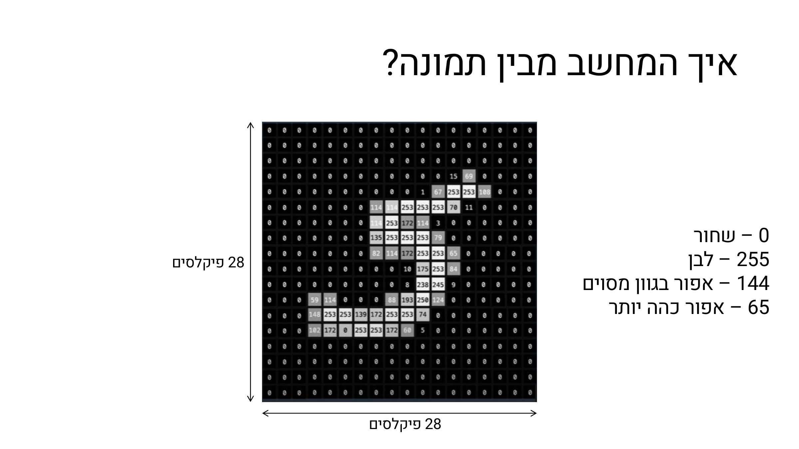
תמונת MNIST היא מטריצה של 28×28 ערכים. הקשר המרחבי בין פיקסלים שכנים — שערך 144 ליד 65 הוא קצה אפור — הוא חלק מהמשמעות של התמונה. אם נעלים את המבנה הזה (כמו ב-Flatten), המידע הזה אובד.
עד עכשיו כל המודלים שלנו היו MLP — שכבות Dense רצופות. כשרוצים להזין תמונה ל-MLP, חייבים קודם "ליישר" אותה לוקטור (Flatten):
הבעיות עם הגישה הזו:
| MLP על תמונה (אחרי Flatten) | CNN | |
|---|---|---|
| סוג החיבורים | Fully Connected — כל נוירון מחובר לכל הפיקסלים | Sparsely Connected — כל נוירון מחובר רק לחלון מקומי |
| קלט | וקטור 1D (תמונה אחרי Flatten) | מטריצה 2D / טנסור 3D ישירות |
| פרמטרים | על MNIST: ~800,000+ פרמטרים | פי 10-100 פחות (לרוב 50-100K) |
| שמירה על מבנה דו-מימדי | ❌ אובד אחרי Flatten | ✅ נשמר לאורך הרשת |
| שיתוף משקלות | ❌ כל פיקסל לומד עצמאית | ✅ אותו פילטר על כל התמונה |
| Translation invariance (אובייקט במיקום אחר) | ❌ צריך ללמוד מחדש | ✅ מובנה בארכיטקטורה |
| ביצועים על MNIST | ~97% | 99%+ |
חישוב מספרי — למה ההבדל כל-כך גדול
ניקח שכבה ראשונה שמחברת MNIST (28×28 = 784 פיקסלים) ל-512 נוירונים, ונשווה את שלוש האפשרויות:
| ארכיטקטורה | חישוב | פרמטרים |
|---|---|---|
| Fully Connected (Dense) | 784 × 512 | 401,408 |
| Sparsely Connected (Local, חלון 3×3) | 9 × 512 | 4,608 (פי 87 פחות) |
| CNN (Sparsely + Weight Sharing) | 9 בלבד (משותפים) | 9 (פי 44,600 פחות!) |
הסיבה המעמיקה: למה Flatten הורס מידע
בתמונה, פיקסלים קרובים זה לזה מספרים סיפור משותף — הם חלקים של אותו אובייקט. כשמיישרים תמונה לוקטור, פיקסלים שכנים מאבדים את הקשר המרחבי שלהם. הרשת רואה רק רצף של 784 מספרים בלי לדעת ש-30 ו-31 שכנים בעוד 30 ו-58 רחוקים.
CNN פותר את זה על ידי שכבות שעובדות מקומית — כל נוירון בשכבה הראשונה רואה רק חלון קטן של פיקסלים שכנים, וכך נשמר המבנה הדו-מימדי.
2. שימושים של CNN
- Computer Vision (התחום העיקרי): סיווג תמונות, זיהוי אובייקטים, סגמנטציה, איתור פנים, רכבים אוטונומיים.
- NLP: פחות נפוץ מ-RNN/Transformer, אבל עובד יפה לסיווג טקסטים קצרים.
- אודיו: Google WaveNet — המרת טקסט לקול אנושי. מסתמך על CNN.
- גרפיקה משחקים: Quick-Draw של Google, FaceApp, פיענוח כתב יד.
3. Locally Connected Layer — מהמלא ללוקלי
זוהי אבן הדרך התאורטית בין MLP ל-CNN. הרעיון: במקום שכל נוירון יראה את כל התמונה, כל נוירון יראה רק אזור מקומי שלה.
המעבר משלב לשלב:
- MLP מלא — כל יחידה מחוברת לכל 784 הפיקסלים. הרבה פרמטרים, אין ניצול של מבנה.
- Locally Connected — מחלקים את התמונה ל-4 אזורים, כל יחידה רואה אזור אחד בלבד. פחות פרמטרים, נשמר מבנה.
- Convolution = Locally Connected + Weight Sharing. כל האזורים משתמשים באותם משקלות. עוד פחות פרמטרים, ושיפור הכללה.
למה Weight Sharing הגיוני? כי תבנית כמו "קצה אנכי" או "פינה" יכולה להופיע בכל מקום בתמונה — אין סיבה ללמוד אותה בנפרד לכל אזור. Weight sharing אומר: "לימדנו פעם אחת לזהות 'קצה אנכי' — נפעיל את הפילטר הזה על כל התמונה".
תרשים — איך נראית Locally Connected Layer
תרשים — Weight Sharing
4. פעולת ה-Convolution — איך זה עובד בפועל
Kernel (או פילטר) הוא מטריצה קטנה של מספרים — בדרך כלל 3×3 או 5×5. הפעולה: "מחליקים" את ה-Kernel על כל התמונה ולכל מיקום מחשבים סכום משוקלל.
דוגמה מספרית מהשקפים
נניח שיש לנו פיקסל מרכזי בערך 220, וחלון 3×3 סביבו. נכפיל איבר-איבר ב-Kernel:
אם בתמונה המקורית הפיקסל היה 220, ב-feature map שיוצא יהיה ערך אחר (למשל 60) — שמבטא כמה התבנית של ה-Kernel נמצאת באותו מיקום.
הזרימה השלמה לתמונה
- בוחרים פיקסל בתמונה.
- לוקחים חלון 3×3 (או 5×5) סביבו.
- מכפילים איבר-איבר עם ה-Kernel.
- סוכמים את כל המכפלות → ערך אחד.
- הערך הזה הופך לפיקסל המרכזי ב-Feature Map (התמונה החדשה).
- חוזרים על כל פיקסל בתמונה.
תרשים — דוגמה מספרית של Convolution
5. סוגי Kernels — מה כל אחד עושה
סוגי הפילטרים הקלאסיים:
| פילטר | המטריצה | מה הוא עושה |
|---|---|---|
| Edge detection — אנכי (Sobel-x) | [[-1,0,1], |
מזהה קצוות אנכיים. סכום=0 ⇒ באזור אחיד יוצא 0. |
| Edge detection — אופקי (Sobel-y) | [[-1,-2,-1], |
מזהה קצוות אופקיים. |
| Sharpen (חידוד) | [[0,-1,0], |
מחדד קצוות בתמונה. |
| Blur (טשטוש ממוצע) | [[1/9,1/9,1/9], |
ממוצע 9 פיקסלים שכנים — מטשטש את התמונה. |
תרשים — 4 הקרנלים הקלאסיים זה ליד זה
6. טיפול בקצוות — Padding, Crop, Extension
בעיה: כשמפעילים פילטר 3×3 על פיקסל בקצה התמונה, חסר חלק מהחלון — אין שכנים מימין/למעלה/למטה.
שלוש האפשרויות לפתרון:
| שיטה | איך | תוצאה |
|---|---|---|
| Crop | מתעלמים מפיקסלי הקצה | תמונת פלט קטנה יותר. מאבדים מידע בקצוות. |
| Padding | מוסיפים "מסגרת" של אפסים סביב התמונה | תמונת פלט באותו גודל. הסטנדרט המודרני. |
| Extension | מעתיקים את ערכי הקצה החוצה | פחות נפוץ; שימושי כשפדינג של אפסים יוצר רעש. |
בקוד Keras: layers.Conv2D(32, (3,3), padding='same') — משמר את הגודל. padding='valid' — מקטין (Crop).
תרשים — שלוש שיטות זו ליד זו
7. Hyper-parameters של שכבת Convolution
(א) Filter / Kernel Size
- נפוץ: 3×3, 5×5.
- 3×3 הוא הסטנדרט במודלים מודרניים — מעט פרמטרים, ושני שכבות 3×3 שוות שדה ראייה ל-5×5 אחד.
(ב) Number of Filters (Depth)
- בכל שכבת Conv אנחנו מפעילים הרבה פילטרים שונים. נפוץ: 32, 64, 128, 256.
- כל פילטר מוצא תבנית שונה — אחד יזהה קצוות אנכיים, אחר אופקיים, שלישי קווי 45°...
- אם יש 32 פילטרים → 32 feature maps שיוצאים מהשכבה.
(ג) Stride
- קצב ה"החלקה" של הפילטר על התמונה.
- Stride=1 (ברירת מחדל) — מזיזים את הפילטר פיקסל אחד בכל פעם.
- Stride=2 — מדלגים על פיקסל בכל פעם — feature map מוקטן בחצי.
- Stride גדול = פחות מידע, אבל פחות פרמטרים ופחות חישוב.
(ד) Padding
ראינו לעיל. הבחירה האופיינית: padding='same'.
8. Pooling Layers — הקטנת המימדים
לאחר שכבת קונבולוציה (Conv) עם N פילטרים, נוצרות N מפות תכונות (feature maps) — כל אחת באותו גודל מרחבי כמו הקלט. ככל שמספר הערוצים גדל, גדל גם הסיכון להתאמת יתר. שכבת Pooling מצמצמת את הגודל המרחבי של כל feature map (לרוב פי 4 עם חלון 2×2) — מספר הערוצים נשאר זהה, אבל סך הערכים קטן משמעותית. התוצאה: פחות פרמטרים בשכבות הבאות, פחות overfit, ויותר מהירות.
למה צריך Pooling — המוטיבציה הבסיסית
נסתכל על דוגמה קונקרטית. תמונת RGB סטנדרטית בגודל 224×224×3 = 150,528 ערכים. אחרי שכבת Conv אחת עם 64 פילטרים (padding=same): 224×224×64 = ~3.2 מיליון ערכים.
אם מהשכבה הזו ניכנס ישר לשכבת Dense עם 1024 יחידות, נדרשו לנו 3.2 מיליון × 1024 = 3.3 מיליארד פרמטרים רק לחיבור הזה. זה לא ריאלי — לא בזיכרון GPU, לא בזמן אימון, לא בנתונים. צריך מנגנון שדוחס את המידע בצורה חכמה.
זה תפקיד ה-Pooling. כל שכבת pool מקטינה פי 4 את ה-spatial size. אחרי 5 שכבות pool, התמונה הופכת מ-224×224 ל-7×7 — פי 1024 פחות ערכים. הרשת מסוגלת ללמוד תכונות מורכבות בלי להתפוצץ בגודל.
4 הסיבות העיקריות:
| סיבה | מה זה אומר בפועל |
|---|---|
| חישובית | פחות ערכים → פחות פעולות multiplication-add → אימון מהיר פי עשרות |
| זיכרון | קריטי ב-GPU עם 6-24GB VRAM. בלי pool, מודלים גדולים פשוט לא נכנסים |
| פרמטרים | פחות חיבורים בשכבות הבאות → מודל קטן יותר → פחות overfit |
| הכללה | מאלץ את הרשת ללמוד תכונות עמידות לתזוזות קטנות |
מה זה "הקטנת מימדים" באמת — והאם זה לא איבוד מידע?
תחושה אינטואיטיבית ראשונה: "אם אני מוריד מ-28×28 ל-14×14, לא איבדתי 75% מהמידע?"
התשובה היא כן ולא בו זמנית — וכאן הקסם:
| מה כן מאבדים | מה לא מאבדים |
|---|---|
| מידע על המיקום המדויק של תכונות (פיקסל-לפיקסל) | מידע על נוכחות תכונות בכל אזור |
| פרטים מקומיים זעירים | היכולת לזהות תבניות גדולות יותר |
| רעש מקומי שלא היה אינפורמטיבי | הסיגנל החזק ביותר באזור |
אנלוגיה: דמיין שאתה רואה תמונה דרך ערפל קל. אתה לא רואה כל פיסת דשא בודדת, אבל אתה עדיין מזהה שזה כלב, גינה, ואדם. הפרטים שאיבדת אינם קריטיים לזיהוי — בעצם הסרת הרעש הזה עוזרת לרשת להתמקד במהותי.
Receptive Field — הסוד שמסביר הכל
זה המושג שהופך את כל הסיפור הזה למבריק. אם תבין את זה — תבין למה CNN עובד.
הגדרה: ה-Receptive Field של פיקסל בשכבה X הוא האזור בתמונת הקלט המקורית שהפיקסל הזה "מסכם". כלומר: כמה גדול האזור בתמונה שהשפיע על ערך הפיקסל הזה.
נראה איך זה גדל לאורך הרשת:
| שכבה | פעולה | רזולוציה | Receptive Field |
|---|---|---|---|
| Input | — | 28×28 | 1×1 (כל פיקסל הוא עצמו) |
| Conv 3×3 | סינון מקומי | 28×28 | 3×3 |
| MaxPool 2×2 | דחיסה | 14×14 | 6×6 (כל פיקסל מייצג 6×6 בקלט) |
| Conv 3×3 | סינון | 14×14 | 10×10 |
| MaxPool 2×2 | דחיסה | 7×7 | 20×20 |
| Conv 3×3 | סינון | 7×7 | 24×24 ← מכסה כמעט את כל התמונה! |
שים לב למה שקרה: Pooling הכפיל את ה-Receptive Field. אחרי כמה שכבות, פיקסל בודד בעומק רואה אזור גדול בקלט. זה מאפשר לרשת לתפוס תבניות גדולות (פנים, אובייקטים שלמים) בלי להגדיל את גודל הפילטר.
- שכבות ראשונות → Receptive Field קטן → רואות קצוות, צבעים, מרקמים בסיסיים.
- שכבות אמצעיות → Receptive Field בינוני → רואות פינות, צורות, מרכיבי אובייקטים (עיניים, אוזניים).
- שכבות עמוקות → Receptive Field גדול → רואות פנים שלמות, אובייקטים, סצנות.
למה Max ולא Sum / Average?
Max Pooling שואל: "באזור הזה — האם התבנית הופיעה?"
| שיטה | השאלה שהיא עונה עליה | מתאים ל |
|---|---|---|
| Max | "האם התבנית הופיעה כאן בכלל?" | זיהוי (כן/לא) |
| Sum | "כמה תבניות הופיעו כאן ובאיזו עוצמה כוללת?" | אגרגציה |
| Average | "מה הסיגנל הממוצע?" | החלקה / רגרסיה |
במשימת זיהוי תמונה, אנחנו רוצים תשובה ברורה: "באזור הזה — האם זה קצה אנכי? כן/לא". Max נותן את התשובה הכי מובהקת — אם הפילטר זיהה את התבנית במקום אחד באזור, התשובה גבוהה. אם לא — התשובה נמוכה.
יתרון נוסף של Max — Translation Invariance מובנה: אם הקצה האנכי "זז" פיקסל ימינה בתמונה הבאה — עדיין יישאר אותו ערך מקסימלי בחלון. הסיגנל לא משתנה. עם Average, כל תזוזה משנה את הממוצע מעט — פחות יציב.
מטאפורה לסיכום: זכוכית מגדלת מתרחקת
חשוב על ההבדל בין שני אופני הסתכלות על תמונה:
- בלי Pooling — אתה רואה את התמונה דרך זכוכית מגדלת קבועה. רואה כל פיקסל בבירור, אבל לעולם לא יכול לזהות מה הצורה הכוללת.
- עם Pooling — אתה מתרחק הדרגתית. ככל שאתה מתרחק, רואה תכונות גדולות יותר: עין → אף → פנים → אדם → קבוצה.
הרשת בונה את ההבנה שלה היררכית דרך הריחוק הזה. בלעדיו, היא לעולם לא תוכל "להתרחק" ולראות את התמונה הגדולה. וזו בדיוק הסיבה שהיררכיית התכונות (קצוות → צורות → אובייקטים) קיימת ב-CNN — היא ישירה הצורך של ה-Pooling.
Max Pooling
חלון (לרוב 2×2), stride 2, ולוקחים את הערך המקסימלי בכל חלון:
Average Pooling
אותה פעולה, אבל לוקחים את הממוצע. פחות נפוץ במודרני (Max עובד טוב יותר ברוב המקרים).
Global Average Pooling
חלון בגודל כל ה-feature map → מספר אחד לכל מפה. נפוץ בקצה רשתות מודרניות (במקום Flatten + Dense).
למה Max Pooling חזק
- הקטנת מימדים — פי 4 פחות פיקסלים אחרי 2×2 pool.
- Translation invariance — אם התבנית "זזה" קצת, היא עדיין תופיע ב-pool.
- פחות פרמטרים → פחות overfit.
תרשים — Max Pooling 4×4 → 2×2
9. ארכיטקטורה כללית של CNN — איך הצורות משתנות
הדפוס הסטנדרטי של CNN:
שינוי הצורה לאורך הרשת:
| שכבה | גובה×רוחב | עומק | סה"כ ערכים |
|---|---|---|---|
| Input | 32×32 | 3 (RGB) | 3,072 |
| Conv2D(32 filters, 3x3, padding=same) | 32×32 | 32 | 32,768 |
| MaxPool(2x2) | 16×16 | 32 | 8,192 |
| Conv2D(64 filters) | 16×16 | 64 | 16,384 |
| MaxPool(2x2) | 8×8 | 64 | 4,096 |
| Conv2D(128 filters) | 8×8 | 128 | 8,192 |
| Flatten | — | — | 8,192 |
| Dense(10, softmax) | — | — | 10 |
הדפוס: ככל שמתקדמים, האורך והרוחב קטנים אבל העומק גדל. ההיגיון: השכבות הראשונות לומדות תבניות פשוטות (קצוות), השכבות העמוקות לומדות תבניות מורכבות (חלקי גוף, אובייקטים) — ולכל שכבה צריך יותר "ערוצים" לבטא את העושר הזה.
למה ReLU אחרי Conv?
בדיוק כמו ב-MLP — ReLU מוסיפה אי-לינאריות. בלעדיה, רצף שכבות convolution היה שווה לשכבת convolution אחת גדולה.
תרשים — האבולוציה של הצורה לאורך CNN
10. Translation / Rotation Invariance ו-Data Augmentation
השאלה: אם הרשת ראתה חתול בצד ימין של התמונה, האם תזהה חתול שמופיע בצד שמאל? בזווית? בגודל אחר?
Translation Invariance — מובנה ב-CNN
בזכות weight sharing ו-Max Pooling, התשובה היא כן. הפילטר שלמדנו לזהות אוזניים יזהה אותן בכל מקום בתמונה.
Rotation/Scale Invariance — לא מובנה
הרשת לא יודעת אוטומטית שזה אותו אובייקט גם כשהוא מסובב או בגודל אחר. הפתרון: Data Augmentation — מייצרים גרסאות מסובבות / מוגדלות / מוטות של התמונות בזמן האימון.
טכניקות סטנדרטיות של Data Augmentation:
- Rotation — סיבוב אקראי ב-±15°.
- Translation — הזזה לימין/שמאל.
- Scaling / Zoom — הגדלה/הקטנה.
- Horizontal Flip — היפוך אופקי (טוב לחיות, אסור לאותיות).
- Color jittering — שינוי בהירות, ניגודיות, רוויה.
בונוס: Augmentation מטפל גם ב-overfit — המודל רואה תמונות "חדשות" בכל epoch ולכן לומד להכליל במקום לזכור.
ב-Keras:
11. ארכיטקטורות CNN שעשו מהפכה
AlexNet (2012) — המהפך הגדול
- צוות: Alex Krizhevsky, Ilya Sutskever, Geoffrey Hinton (אוניברסיטת טורונטו).
- הישג: זכייה בתחרות ImageNet עם 16% שגיאה — לעומת 26% של המקום השני.
- חידושים: שימוש ראשון ב-ReLU, ב-Dropout, וב-GPU לאימון.
- גודל: 8 שכבות (5 Conv + 3 FC), 60M פרמטרים, אומן על 2 GPUs במשך שבוע.
- השפעה: נקודת המהפך של DL — מאז כל זוכי ImageNet מבוססי DL.
VGG (2014) — אלגנטיות במקום עומק
- צוות: Visual Geometry Group, אוניברסיטת אוקספורד.
- גרסאות: VGG-16 (16 שכבות), VGG-19 (19 שכבות).
- חידוש: משתמש רק ב-Conv 3×3 ו-MaxPool 2×2. במקום פילטרים גדולים (11×11 של AlexNet) — שתי שכבות 3×3 רצופות נותנות אותו שדה ראייה עם פחות פרמטרים.
- חיסרון: 138M פרמטרים — מודל כבד מאוד.
ResNet (2015) — Skip Connections
- צוות: Microsoft Research.
- הבעיה שפתרו: במודלים עמוקים מאוד (50+ שכבות), הביצועים יורדים — בגלל vanishing gradient (הגרדיאנט "נחלש" כשהוא חוזר אחורה).
- הפתרון: Skip Connections — הוספת קיצור-דרך מכל שכבה לשכבה אחרי הבאה, כך שהגרדיאנט "מדלג" מעל שכבות.
- תוצאה: רשת של 152 שכבות שעובדת מצוין. ResNet-152 הגיעה לביצועים על-אנושיים ב-ImageNet.
- השפעה: Skip connections היום הם סטנדרט בכל הארכיטקטורות המודרניות (Transformers, Diffusion וכו').
| מודל | שנה | שכבות | פרמטרים | שגיאה ב-ImageNet |
|---|---|---|---|---|
| AlexNet | 2012 | 8 | 60M | 16% |
| VGG-16 | 2014 | 16 | 138M | 7.3% |
| ResNet-152 | 2015 | 152 | 60M | 3.6% |
| אדם ממוצע | — | — | — | ~5% |
12. תוספות מקובץ הקוד 7.FindingEdgesWithKernels.ipynb
ה-notebook של ההרצאה מדגים בפועל את פעולת ה-Kernel — בלי NN בכלל, רק NumPy + OpenCV. זה הצעד הקריטי להבנה אינטואיטיבית של מה ש-CNN לומדת.
12.1 OpenCV — הספרייה לעיבוד תמונה
cv2 (OpenCV) היא ספריית קוד פתוח ל-computer vision. ההתקנה:
12.2 טעינת תמונה והמרה לאפור
למה אפור? כי הדגמת קצוות פשוטה יותר על ערוץ אחד. ב-CNN אמיתי נעבוד ב-RGB.
12.3 פילטר Sobel — קוד מלא
נסה בעצמך: אחרי שתריץ — תראה את התמונה המקורית של הדולפין הופכת לתמונה ש"מאירה" רק את הקצוות האנכיים.
12.4 פילטרים מותאמים אישית — חלוקה לרבעים
ה-notebook גם מדגים פילטרים גדולים יותר (4×4) שמחלקים את התמונה לחצי שמאל/ימין או עליון/תחתון:
12.5 הקשר ל-CNN המאומן
13. שאלות חזרה למבחן — הרצאה 7
הצג תשובה
הצג תשובה
הצג תשובה
הצג תשובה
הצג תשובה
הצג תשובה
14. מה תצא מן הפרק הזה
- תסביר במשפט אחד את ההבדל בין MLP ל-CNN ולמה CNN עדיף לתמונות.
- תוכל לחשב את צורת ה-feature map שיוצא משכבת Conv2D עם פרמטרים נתונים.
- תזהה Kernel של Sobel ותדע מה הוא עושה.
- תזכור את 4 ה-hyperparameters של Conv2D: filter size, number, stride, padding.
- תסביר למה Max Pooling חזק (3 סיבות: dim reduction, translation invariance, less overfit).
- תזהה את הדפוס "אורך-רוחב יורדים, עומק עולה" לאורך CNN.
- תכיר את 3 הארכיטקטורות הקלאסיות (AlexNet, VGG, ResNet) ותדע את החידוש של כל אחת.
- תוכל להסביר למה Data Augmentation עוזר גם ל-rotation invariance וגם ל-overfit.
- תזכור: הפילטרים ב-CNN לא נבחרים ידנית — הם נלמדים בעצמם דרך Backpropagation.
הרצאה 8 — CNN with Keras: Cats vs Dogs
מטרת ההרצאה: לבנות CNN לסיווג בינארי (חתול/כלב) על מערך נתונים קטן (4,000 תמונות מתוך 25,000), ולהראות איך 4 גישות מתקדמות מטפסות מ-66.4% ל-97.9% accuracy על אותו test set. זו ההרצאה הראשונה שבה אנחנו מיישמים Transfer Learning בפועל.
על מה נדבר בפרק הזה
- הצגת המשימה — Kaggle Dogs vs Cats — וטיפול ב-dataset קטן.
- טעינת תמונות מתיקיות עם
image_dataset_from_directoryו-tf.data.Dataset. - גישה 1: CNN מ-Scratch — 5 בלוקי Conv2D + Pool. תוצאה: 66.4% (overfitting חזק).
- גישה 2: Data Augmentation + Dropout — כתרופה ל-overfitting. תוצאה: 81.1%.
- גישה 3: Feature Extraction עם VGG16 קפוא. שתי שיטות (מהירה vs עם augmentation). תוצאה: 97.9%.
- גישה 4: Fine-Tuning — הפשרת השכבות העליונות ב-lr נמוך מאוד. תוצאה: 97.7% (מעט יורד!).
- תוצאות בפועל מהריצה ב-Colab — מספרים אמיתיים, לא של הספר.
0. תמונת מפתח — 4 הגישות והקפיצה של Transfer Learning
לפני שניכנס לפרטים, הנה המסר העיקרי של ההרצאה במבט אחד: הקפיצה הגדולה אינה מ-augmentation או מ-fine-tuning, אלא במעבר מאימון From scratch לשימוש ברשת Pretrained — 31.5 נקודות אחוז בקפיצה אחת. ובאופן מפתיע — fine-tuning הפעם פגע במקום לשפר.
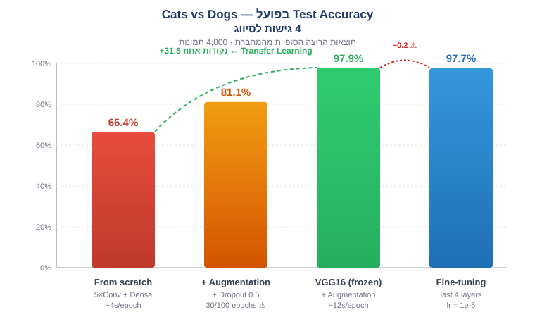
- Augmentation לבד (גישה 2) שווה +14.7 נקודות. שווה — אבל לא מספיק לרשת קטנה.
- Transfer learning (גישה 3) שווה +16.8 נקודות נוספות. הזינוק הגדול — כי conv_base כבר ראה 14 מיליון תמונות.
- Fine-tuning (גישה 4) הפעם הוריד −0.2 נקודות (97.9% → 97.7%). זה לא שגיאה: כש-feature extraction כבר מצוין, fine-tuning יכול להזיק כי הוא מסכן את המשקלים הטובים שכבר נלמדו. אז למה מלמדים את זה? כי בדרך כלל זה עוזר — והוא תלוי בריצה.
1. הצגת המשימה — Kaggle Dogs vs Cats
בשנת 2013 Kaggle ערכה תחרות מפורסמת — לסווג 25,000 תמונות של חתולים וכלבים. ב-2013 קל היה לקבל 80% עם MLP פשוט; היום, עם CNN ו-transfer learning, מגיעים ל-99%+.
ההחלטה במחברת: במקום להשתמש בכל 25,000 התמונות, ניקח subset קטן של 4,000. למה? כי המטרה של ההרצאה היא "איך לעבוד עם dataset קטן" — וזה היה החלק החשוב בספר של Chollet.
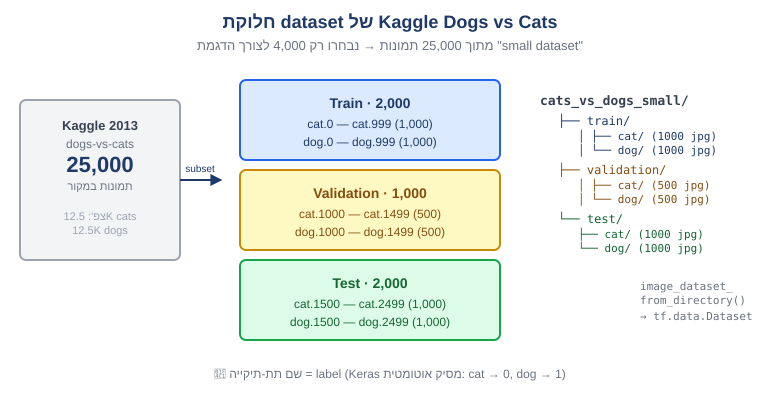
הקוד שיוצר את החלוקה (cell 14)
import os, shutil, pathlib
original_dir = pathlib.Path("train")
new_base_dir = pathlib.Path("cats_vs_dogs_small")
def make_subset(subset_name, start_index, end_index):
for category in ("cat", "dog"):
dir = new_base_dir / subset_name / category
os.makedirs(dir)
fnames = [f"{category}.{i}.jpg" for i in range(start_index, end_index)]
for fname in fnames:
shutil.copyfile(src=original_dir / fname,
dst=dir / fname)
make_subset("train", start_index=0, end_index=1000)
make_subset("validation", start_index=1000, end_index=1500)
make_subset("test", start_index=1500, end_index=2500)2. טעינת תמונות עם image_dataset_from_directory
במקום לכתוב data-loading ידני, Keras מציע פונקציה אלגנטית — שטוענת ישירות תמונות מתיקייה, כאשר שם תת-התיקייה משמש כ-label.
from tensorflow.keras.utils import image_dataset_from_directory
train_dataset = image_dataset_from_directory(
new_base_dir / "train",
image_size=(180, 180), # resize אוטומטי
batch_size=32) # 63 batches × 32 = 2016 (קצת יותר מ-2000)
# פלט בפועל:
# Found 2000 files belonging to 2 classes.
# Found 1000 files belonging to 2 classes.
# Found 2000 files belonging to 2 classes.מה שמתקבל הוא tf.data.Dataset — אובייקט lazy שיודע לטעון, לעבד ולחלק batches בלי לטעון את כל ה-2,000 תמונות ל-RAM בבת-אחת.
בדיקת shape של batch
for data_batch, labels_batch in train_dataset:
print("data batch shape:", data_batch.shape)
print("labels batch shape:", labels_batch.shape)
break
# פלט:
# data batch shape: (32, 180, 180, 3)
# labels batch shape: (32,)A. למה צריך Dataset object בכלל?
ביחידות 3-6 עבדנו עם MNIST/Boston/Reuters/IMDB — כל אחד מהם dataset קטן יחסית (~50MB) שהסבנו ל-NumPy והעברנו ישירות ל-model.fit(). למה לא נמשיך כך?
חישוב הזיכרון — Cats vs Dogs המלא
| פריט | חישוב | תוצאה |
|---|---|---|
| גודל תמונה אחת ב-180×180×3 | 180 × 180 × 3 × 4 bytes (float32) | ~389 KB |
| 4,000 תמונות (ה-subset שלנו) | 4,000 × 389 KB | ~1.5 GB |
| 25,000 תמונות (ה-dataset המלא) | 25,000 × 389 KB | ~9.7 GB |
| עם תמונות בגודל מלא (500×500) | 25,000 × 3 MB | ~75 GB ❌ |
ל-Colab Free יש 12 GB RAM. גם ה-subset הקטן (1.5 GB כ-NumPy) ניתן לטעון, אבל עם תמונות מלאות זה בלתי-אפשרי.
3 הבעיות שה-Dataset object פותר
- זיכרון: טוען רק את ה-batch הנוכחי לזיכרון, לא את כל ה-dataset.
- GPU starvation: GPU מהיר פי 100 מ-CPU. אם ה-CPU טוען נתונים באיטיות, ה-GPU "מחכה".
prefetchמבצע טעינה מקבילית — בזמן שה-GPU מעבד batch N, ה-CPU כבר טוען batch N+1. - גודל ה-dataset לא מוגבל: אפשר לאמן על TB של נתונים בלי לדאוג ל-RAM.
DataLoader, JAX מציע Grain. הרעיון זהה: הפרדה בין ייצור הנתונים (CPU) לבין הצריכה (GPU).
B. הניסוי במחברת — צעד-צעד עם המספרים
כדי להבין מה tf.data.Dataset עושה, המחברת מתחילה בדוגמה מינימלית עם NumPy אקראי (1000 וקטורים, כל אחד באורך 16). זה לא Cats vs Dogs — זו "סנדבוקס" להבנת ה-API.
| שלב | הקוד | הפלט בפועל | מה זה אומר |
|---|---|---|---|
| 1. יצירת NumPy | np.random.normal( size=(1000, 16)) |
(1000, 16) | מטריצה: 1000 שורות × 16 עמודות. כל שורה היא "דוגמה". |
| 2. הפיכה ל-Dataset | tf.data.Dataset .from_tensor_slices( random_numbers) |
(16,) (16,) (16,) ... |
הציר הראשון "נחתך" — עכשיו יש 1000 elements, כל אחד וקטור באורך 16. זה כמו list(zip(*matrix)) רעיונית. |
| 3. קיבוץ ל-batches | dataset.batch(32) | (32, 16) (32, 16) (32, 16) ... |
32 elements מקובצים חזרה למטריצה. שים לב — זה לא קוד שמוסיף ציר חדש, זה מצמצם את מספר ה-elements. |
| 4. טרנספורמציה | dataset.map( lambda x: tf.reshape(x, (4, 4))) |
(4, 4) (4, 4) (4, 4) ... |
הפעלת פונקציה על כל element. הוקטור באורך 16 הופך למטריצה 4×4 (סך הערכים זהה: 16). |
ה-shape ב-Cats vs Dogs המלא הוא (32, 180, 180, 3) — אותו רעיון, רק ש"דוגמה אחת" היא תמונה 4-מימדית במקום וקטור.
C. הזרימה הוויזואלית של הנתונים

שני העולמות של Dataset
חשוב להבחין בין שתי דרכים ליצור Dataset:
from_tensor_slices (המחברת) | image_dataset_from_directory (אימון אמיתי) | |
|---|---|---|
| מקור הנתונים | NumPy שכבר ב-RAM | קבצי JPG בדיסק |
| זיכרון | גדל לפי גודל ה-NumPy | קבוע — רק batch אחד |
| תאים מתאימים | נתונים קטנים, ניסויים | תמונות, אודיו, קבצים גדולים |
| מהירות גישה | מיידית (כבר ב-RAM) | תלוי בדיסק (SSD מומלץ) |
D. למה batch_size = 32? המסחר הכבד של DL
זו אחת הבחירות הכי חשובות בכל אימון. אבל למה 32 ולא 1 או 1000?
| batch_size | גרדיאנט | זיכרון | מהירות epoch | שם הגישה |
|---|---|---|---|---|
| 1 | רועש מאוד (דוגמה אחת) | מינימלי | איטי (לא מנצל GPU) | Pure SGD |
| 32-128 ⭐ | איזון טוב (rolling average) | סביר (1-4 GB GPU) | מהיר (מנצל GPU) | Mini-batch SGD |
| 2000 (כל הסט) | מדויק (ממוצע מלא) | ענקי (לא תמיד אפשרי) | איטי לכל צעד | Full-batch GD |
למה לא 1?
גרדיאנט מדוגמה אחת רועש מאוד — הוא יכול להצביע לכל כיוון. הרבה צעדים רועשים = "ריקוד אקראי" שלוקח הרבה זמן עד שמתכנס. בנוסף, GPU מודרני מבצע פעולות מטריצות במקביל — batch קטן מאוד משאיר אותו "רעב".
למה לא 1000?
גרדיאנט מדויק מאוד "תקוע במינימום מקומי" — אם הגרדיאנט אפס בנקודה כלשהי, אין שום רעש שיוציא אותך משם. שינויים קטנים בכיוון (בזכות הרעש של mini-batch) הם טובים לבריחה ממינימה מקומיים.
למה חזקות של 2 (16, 32, 64, 128)?
זיכרון GPU מיועל למיוונים שהם חזקות של 2 (אלו ה-warps של CUDA). batch של 64 רץ יעיל יותר מ-batch של 50, גם אם תאורטית 50 קטן יותר.
- תמונות ב-CNN בינוני: 32 (default אצל Chollet)
- תמונות גדולות (512+): 16 או 8 — מוגבל בזיכרון GPU
- NLP/Transformers: 32-128
- אם רואים OOM error → להוריד batch
E. למה shuffle חיוני — ומתי לא לעשות אותו
תרחיש: ה-train set שלנו מסודר לפי קטגוריה — קודם 1000 חתולים, אחר כך 1000 כלבים. אם נאמן בלי shuffle:
# בלי shuffle:
# Batch 1-31: כולם cat → הרשת לומדת "תמיד תגיד cat" → val_accuracy = 50%
# Batch 32-63: כולם dog → הרשת לומדת "תמיד תגיד dog" → val_accuracy = 50%
# בסוף epoch: הרשת זוכרת רק את הקטגוריה האחרונה!
# עם shuffle:
# Batch 1: 15 cat + 17 dog → גרדיאנט מאוזן → לימוד אמיתיאיך עובד buffer ב-shuffle
dataset.shuffle(buffer_size=1000) ממלא buffer של 1000 elements, ובוחר אקראית מתוכם בכל פעם. כלל אצבע: buffer_size = גודל ה-dataset — כך שכל element יכול להיות בכל מיקום. אם זיכרון לא מספיק, 10,000 מספיק לרוב.
- ✅ Train set: תמיד shuffle, בכל epoch מחדש (Keras עושה את זה אוטומטית).
- ❌ Validation set: אל תערבב — אתה רוצה לקבל את אותו loss כל פעם להשוואה.
- ❌ Test set: אל תערבב — מדידה סופית פעם אחת.
- ⚠ Time series: אסור לערבב — הסדר הוא חלק מהמשמעות!
טריק חשוב — סדר הפעולות
# ❌ שגוי — קודם batch אז shuffle:
dataset.batch(32).shuffle(1000) # ערבב batches אבל בתוך batch הסדר נשאר
# ✅ נכון — קודם shuffle אז batch:
dataset.shuffle(1000).batch(32) # ערבב elements ואז קבץF. 5 טיפים פרקטיים לעבודה עם Dataset
-
.prefetch(tf.data.AUTOTUNE)— תמיד.
מבצע טעינה של ה-batch הבא במקביל לעיבוד ה-batch הנוכחי ע"י המודל. שיפור מהירות של 20-50% בחינם.train_dataset = train_dataset.prefetch(tf.data.AUTOTUNE)AUTOTUNEנותן ל-TF לבחור את ה-buffer האידיאלי לבד. -
.cache()— אם ה-dataset נכנס ל-RAM.
אחרי ה-epoch הראשון, כל ה-dataset נשמר ב-RAM (או על דיסק). מהאפוק השני והלאה, אין צורך לטעון תמונות מהדיסק. אזהרה: אם ה-dataset לא נכנס ל-RAM, השתמש ב-train_dataset = train_dataset.cache().shuffle(1000).batch(32).cache("filename")לקבצי cache בדיסק. -
num_parallel_calls=tf.data.AUTOTUNEב-map.
מפעיל את ה-map על מספר ליבות CPU במקביל. קריטי כש-dataset.map(preprocess_fn, num_parallel_calls=tf.data.AUTOTUNE)preprocess_fnכבד (augmentation, resize). -
הסדר הנכון של pipeline:
ה-prefetch תמיד אחרון. ה-shuffle לפני ה-batch (ראינו ב-§E). ה-map אחרי shuffle כדי שכל epoch תקבל augmentation שונה לאותה תמונה.dataset = (raw_dataset .shuffle(buffer_size=10000) # 1. ערבב elements .map(preprocess, num_parallel_calls=tf.data.AUTOTUNE) # 2. עבד .batch(32) # 3. קבץ ל-batches .prefetch(tf.data.AUTOTUNE)) # 4. prefetch אחרון -
בדיקת תקינות לפני אימון:
אם רואים# הצץ ב-batch אחד לפני fit() — חוסך שעות של דיבוג for images, labels in dataset.take(1): print(f"Images: {images.shape}, dtype: {images.dtype}") print(f"Labels: {labels.shape}, range: [{labels.min()}, {labels.max()}]") print(f"Image values range: [{images.numpy().min()}, {images.numpy().max()}]")dtype=uint8במקוםfloat32, או טווח ערכים [0, 255] במקום [0, 1] — יש בעיית pre-processing.
3. גישה 1 — CNN מ-Scratch
הגישה הראשונה הכי טבעית: בונים CNN מאפס ומאמנים אותו על 2,000 התמונות. אבל מה הארכיטקטורה הנכונה?
הארכיטקטורה — 5 בלוקי Conv + Dense (cell 16)
inputs = keras.Input(shape=(180, 180, 3))
x = layers.Rescaling(1./255)(inputs)
x = layers.Conv2D(filters=32, kernel_size=3, activation="relu")(x)
x = layers.MaxPooling2D(pool_size=2)(x)
x = layers.Conv2D(filters=64, kernel_size=3, activation="relu")(x)
x = layers.MaxPooling2D(pool_size=2)(x)
x = layers.Conv2D(filters=128, kernel_size=3, activation="relu")(x)
x = layers.MaxPooling2D(pool_size=2)(x)
x = layers.Conv2D(filters=256, kernel_size=3, activation="relu")(x)
x = layers.MaxPooling2D(pool_size=2)(x)
x = layers.Conv2D(filters=256, kernel_size=3, activation="relu")(x)
x = layers.Flatten()(x)
outputs = layers.Dense(1, activation="sigmoid")(x)
model = keras.Model(inputs=inputs, outputs=outputs)
model.compile(loss="binary_crossentropy",
optimizer="rmsprop",
metrics=["accuracy"])זרימת ה-shape דרך הרשת

📖 מילון מונחים — מה כל מילה במשוואה אומרת
לפני שמסתכלים על הנוסחה output = (input − kernel) / stride + 1 — נוודא שכל מונח ברור:
| מונח | הסבר | ערך אצלנו |
|---|---|---|
spatial — "ממדי הרוחב והגובה" |
הגודל הגיאומטרי של ה-tensor — גובה × רוחב (לא כולל ערוצים). לדוגמה 180×180. | 180×180 בקלט → 7×7 בסוף |
depth — "עומק / מספר ערוצים" |
המימד השלישי של ה-tensor — ערוצי הצבע בקלט, או מספר ה-filters אחרי Conv2D. | 3 בקלט (RGB) → 256 בסוף |
kernel / filter |
"חלון" קטן (לרוב 3×3 או 5×5) שמסתובב על התמונה ומחשב פעולה (convolution). זה הדבר שהרשת לומדת. | 3×3 בכל Conv2D שלנו |
kernel_h |
הגובה של ה-kernel (kernel_height). בדרך כלל שווה ל-kernel_w (kernel ריבועי). | 3 |
kernel_w |
הרוחב של ה-kernel (kernel_width). | 3 |
stride |
בכמה פיקסלים ה-kernel "קופץ" בכל צעד. stride=1 = קופץ ב-1 (חופף הרבה). stride=2 = קופץ ב-2 (פחות חפיפה, יותר downsample). |
1 (ברירת המחדל) |
padding="valid" |
אין מילוי בקצוות → ה-output קטן יותר מה-input (ב-kernel − 1). |
זה מה שבחרנו |
padding="same" |
הוספת אפסים בקצוות → ה-output שומר על אותו גודל spatial של ה-input. | (לא בשימוש פה) |
input_channels |
depth של ה-input שנכנס לשכבה. | 3 → 32 → 64 → 128 → 256 |
filters |
depth של ה-output. הפרמטר העיקרי של Conv2D — כמה kernels שונים השכבה לומדת. |
32 → 64 → 128 → 256 → 256 |
bias |
קבוע נוסף שנוסף לכל filter (נוסחה: output + bias). יש bias אחד לכל filter, ולכן +filters בנוסחה. |
32, 64, 128, 256, 256 |
filters=32, kernel=3×3, input=180×180×3.
- פרמטרים:
32 × (3 × 3 × 3) + 32 = 896✓ - Output spatial (padding=valid, stride=1):
180 − 3 + 1 = 178. אחרי MaxPool 2×2:178/2 = 89
output = (input − kernel) / stride + 1:
- למה
− kernel? ה-kernel "מבזבז" שולי תמונה כי הוא חייב להתאים כולו. עם kernel=3, השוליים של פיקסל מימין ושמאל אובדים → "−2". - למה
/ stride? אם קופצים בקפיצות של 2, יש חצי כמות מיקומים שונים → מחלקים ב-stride. - למה
+ 1? כי גם בנקודת ההתחלה (פיקסל 0) ה-kernel מסיים את הספירה.
קריאת model.summary() — מה מסתתר בכל שורה
הטבלה שמדפיסה Keras מתארת את הרשת שכבה-אחר-שכבה. 3 העמודות שלה:
| עמודה | מה היא אומרת |
|---|---|
| Layer (type) | שם השכבה (אוטומטי או מותאם) ועוצב הסוג שלה: InputLayer, Rescaling, Conv2D, MaxPooling2D, Flatten, Dense. |
| Output Shape | ה-shape של ה-tensor שיוצא מהשכבה. הראשון תמיד None = batch size דינמי (כי הרשת לא תלויה במספר הדוגמאות ב-batch). |
| Param # | כמה משקלים שניתנים לאימון יש בשכבה. אצל Rescaling, MaxPooling2D, Flatten זה תמיד 0 — הן רק "מעצבות" tensor בלי משקלים. |
חישוב מפורט — איך מגיעים ל-991,041 פרמטרים
הנוסחה הכללית לחישוב פרמטרים בשכבת Conv2D:
params = filters × (kernel_h × kernel_w × input_channels) + filters
↑ ↑
מטריצת המשקלים bias (אחד לכל filter)ל-Dense זה פשוט יותר:
params = output_units × input_units + output_units
↑ ↑
המשקלים biases| # | שכבה | Output Shape | חישוב | Params |
|---|---|---|---|---|
| 1 | InputLayer | (None, 180, 180, 3) | — (placeholder) | 0 |
| 2 | Rescaling | (None, 180, 180, 3) | — (חלוקה ב-255, אין משקלים) | 0 |
| 3 | Conv2D (32) | (None, 178, 178, 32) | 32 × (3 × 3 × 3) + 32 | 896 |
| 4 | MaxPooling2D | (None, 89, 89, 32) | — (downsample) | 0 |
| 5 | Conv2D (64) | (None, 87, 87, 64) | 64 × (3 × 3 × 32) + 64 | 18,496 |
| 6 | MaxPooling2D | (None, 43, 43, 64) | — | 0 |
| 7 | Conv2D (128) | (None, 41, 41, 128) | 128 × (3 × 3 × 64) + 128 | 73,856 |
| 8 | MaxPooling2D | (None, 20, 20, 128) | — | 0 |
| 9 | Conv2D (256) | (None, 18, 18, 256) | 256 × (3 × 3 × 128) + 256 | 295,168 |
| 10 | MaxPooling2D | (None, 9, 9, 256) | — | 0 |
| 11 | Conv2D (256) | (None, 7, 7, 256) | 256 × (3 × 3 × 256) + 256 | 590,080 |
| 12 | Flatten | (None, 12544) | — (7 × 7 × 256 = 12,544) | 0 |
| 13 | Dense (1) | (None, 1) | 1 × 12,544 + 1 | 12,545 |
| Total trainable parameters | 991,041 | |||
בדיקה — סכימה ידנית
896 (Conv2D 32)
+ 18,496 (Conv2D 64)
+ 73,856 (Conv2D 128)
+ 295,168 (Conv2D 256)
+ 590,080 (Conv2D 256)
+ 12,545 (Dense 1)
─────────
= 991,041 ✓- 60% מהפרמטרים נמצאים בשכבת
Conv2Dהאחרונה לבדה (590K מתוך 991K). - למה? כי input_channels × filters גדל פי 2 בכל בלוק. בסוף יש
256 × (3 × 3 × 256) ≈ 590K. -
Flattenו-MaxPoolingהם "חינמיים" — הם רק משנים shape בלי משקלים. -
Dense(1)הסופי "רק" 12,545 פרמטרים — קטן יחסית למה שאפשר היה לצפות מ-12,544 קלטים.
- MLP: Flatten ל-
180 × 180 × 3 = 97,200נוירונים, Dense של 512 →97,200 × 512 ≈ 49.8Mפרמטרים בשכבה הראשונה לבד! - CNN שלנו: 991K פרמטרים בכל הרשת. פי 50 פחות.
- הסיבה — Weight sharing: אותו פילטר 3×3 מופעל על כל התמונה. לומדים פעם אחת, משתמשים בכל מקום.
תוצאות אימון — 30 epochs · ~4-6s/epoch (GPU מהיר)
הריצה בפועל מהמחברת:
Epoch 1/30 - loss: 0.6972 - accuracy: 0.5210 - val_loss: 0.6926 - val_accuracy: 0.5150
Epoch 5/30 - loss: 0.6193 - accuracy: 0.6750 - val_loss: 0.6881 - val_accuracy: 0.6040
Epoch 10/30 - loss: 0.4838 - accuracy: 0.7750 - val_loss: 0.6011 - val_accuracy: 0.7330
Epoch 15/30 - loss: 0.2782 - accuracy: 0.8875 - val_loss: 0.7735 - val_accuracy: 0.7420
Epoch 20/30 - loss: 0.1069 - accuracy: 0.9580 - val_loss: 1.7745 - val_accuracy: 0.6880
Epoch 25/30 - loss: 0.0585 - accuracy: 0.9815 - val_loss: 1.4504 - val_accuracy: 0.7460
Epoch 30/30 - loss: 0.0469 - accuracy: 0.9815 - val_loss: 1.5142 - val_accuracy: 0.7420
↑ ↑
98% על training 74% על validation
→ overfitting קלאסי
(val_loss קופץ מ-0.69 ל-1.5+!)
Test accuracy: 0.664 (= 66.4%)גרפי learning curves
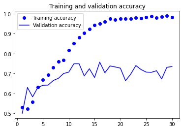
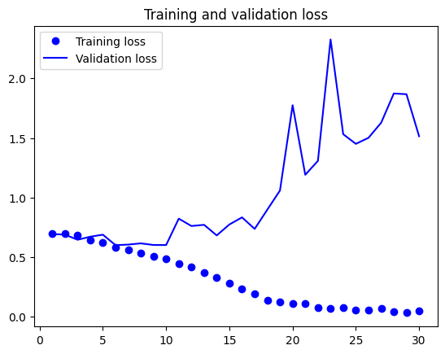
4. גישה 2 — Data Augmentation + Dropout
אם הבעיה היא overfitting על dataset קטן, יש שתי תרופות מובהקות:
- Data Augmentation — להגדיל אפקטיבית את ה-dataset על ידי יצירת variants סינתטיים של כל תמונה.
- Dropout — להסיר אחוז מהנוירונים אקראית באימון (כיסינו ב-יחידה 4).
שכבת ה-augmentation (cell 37)
data_augmentation = keras.Sequential([
layers.RandomFlip("horizontal"), # היפוך אופקי (לא אנכי!)
layers.RandomRotation(0.1), # ±10% × 2π ≈ ±36° rotation
layers.RandomZoom(0.2), # ±20% zoom in/out
])RandomFlip("horizontal_and_vertical") היה פוגע ב-validation accuracy. הבחירה של רוטציות סבירות (±36° ולא ±180°) ו-zoom סביר היא חלק מהאמנות.
איך נראית augmentation בפועל
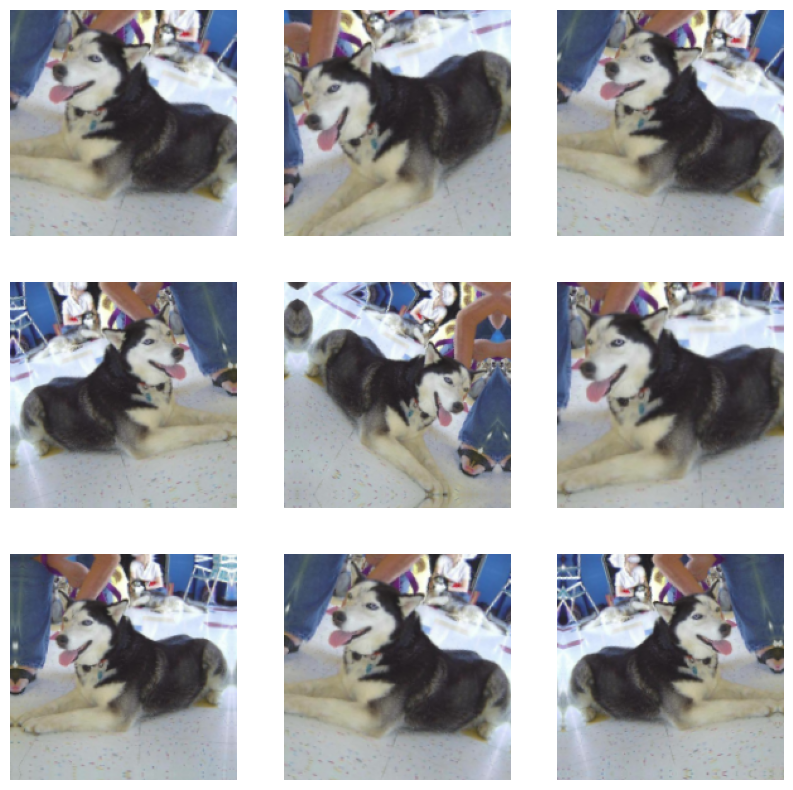
הרשת המעודכנת (cell 41) — שתי תוספות
inputs = keras.Input(shape=(180, 180, 3))
x = data_augmentation(inputs) # ← חדש: augmentation בכניסה
x = layers.Rescaling(1./255)(x)
# ... אותם 5 בלוקי Conv2D + MaxPool כמו ב-§3 ...
x = layers.Flatten()(x)
x = layers.Dropout(0.5)(x) # ← חדש: dropout לפני Dense
outputs = layers.Dense(1, activation="sigmoid")(x)evaluate()/predict() הן שקופות (transparent). לכן מוסיפים אותן כשכבה בתוך הגרף, לא כ-preprocessing.
התוצאה
הריצה התקצרה — נרשמו רק 30 מתוך 100 epochs (כנראה Colab התנתק או הופסק):
Epoch 1/100 - loss: 0.6979 - accuracy: 0.5040 - val_loss: 1.2371 - val_accuracy: 0.5000
Epoch 10/100 - loss: 0.5787 - accuracy: 0.6945 - val_loss: 0.5561 - val_accuracy: 0.7170
Epoch 20/100 - loss: 0.4850 - accuracy: 0.7785 - val_loss: 0.4685 - val_accuracy: 0.7760
Epoch 28/100 - loss: 0.4178 - accuracy: 0.8135 - val_loss: 0.4430 - val_accuracy: 0.8090 ← השיא
Epoch 30/100 - loss: 0.4061 - accuracy: 0.8130 - val_loss: 0.4653 - val_accuracy: 0.7990
Test accuracy: 0.811 (= 81.1%)- Validation accuracy בשיא: 80.9% (epoch 28)
- Test accuracy: 81.1% — קפיצה מ-66.4% ל-81.1% = +14.7 נקודות
- שימו לב — אין overfitting. val_loss ירד יחד עם training_loss (לפחות עד epoch 30). זה הסימן ש-augmentation+dropout עובדים.
ModelCheckpoint(save_best_only=True) כך שכל הזמן יש משקלות שמורים. (3) להריץ מקומית עם GPU.
5. גישה 3 — Transfer Learning עם VGG16
הרעיון: במקום ללמד CNN מ-0, ניקח רשת שכבר אומנה על 14 מיליון תמונות של ImageNet, ונשתמש בה כמחלץ פיצ'רים.
למה זה עובד?
- ה-conv layers הראשונים של VGG16 לומדים פיצ'רים גנריים (קצוות, מרקמים, פינות) — שטובים לכל משימת ראייה.
- השכבות העמוקות יותר לומדות פיצ'רים יותר ספציפיים, אבל גם הם רלוונטיים — ImageNet מכיל הרבה סוגי חתולים וכלבים בעצמו!
VGG16 — ארכיטקטורה

טעינת VGG16 ב-Keras
conv_base = keras.applications.vgg16.VGG16(
weights="imagenet", # טוען משקלות מאומנים
include_top=False, # ❌ ללא ה-FC head המקורי (1000 קטגוריות)
input_shape=(180, 180, 3))keras.applications רשתות נוספות: Xception, ResNet50/101/152, MobileNet, EfficientNet, DenseNet — כולן אומנו על ImageNet וזמינות בקריאה אחת. VGG16 נבחר כאן בגלל הפשטות.
בדיקה — מבנה ה-conv_base
Model: "vgg16"
_________________________________________________________________
Layer (type) Output Shape Param #
=================================================================
input_3 (InputLayer) [(None, 180, 180, 3)] 0
block1_conv1 (Conv2D) (None, 180, 180, 64) 1,792
block1_conv2 (Conv2D) (None, 180, 180, 64) 36,928
block1_pool (MaxPooling2D) (None, 90, 90, 64) 0
block2_conv1 (Conv2D) (None, 90, 90, 128) 73,856
block2_conv2 (Conv2D) (None, 90, 90, 128) 147,584
block2_pool (MaxPooling2D) (None, 45, 45, 128) 0
...
block5_conv3 (Conv2D) (None, 11, 11, 512) 2,359,808
block5_pool (MaxPooling2D) (None, 5, 5, 512) 0
=================================================================
Total params: 14,714,688
Trainable params: 14,714,688
Non-trainable params: 0ה-output של ה-conv_base הוא (5, 5, 512) — זה ה"feature vector" שהוא הקלט ל-classifier שלנו.
6. שתי שיטות ל-Feature Extraction
אחרי שיש לנו conv_base מאומן, יש שתי שיטות שונות איך להשתמש בו:

שיטה 1 — Fast Feature Extraction (cells 51, 54)
מעבירים את כל ה-dataset דרך conv_base פעם אחת, שומרים את ה-features ב-RAM, ומאמנים classifier קטן עליהם.
def get_features_and_labels(dataset):
all_features = []
all_labels = []
for images, labels in dataset:
preprocessed = keras.applications.vgg16.preprocess_input(images)
features = conv_base.predict(preprocessed)
all_features.append(features)
all_labels.append(labels)
return np.concatenate(all_features), np.concatenate(all_labels)
train_features, train_labels = get_features_and_labels(train_dataset)
# train_features.shape == (2000, 5, 5, 512) ← 25.6M ערכים, ~100MB RAM
# מאמנים classifier קטן רק על features
inputs = keras.Input(shape=(5, 5, 512))
x = layers.Flatten()(inputs)
x = layers.Dense(256)(x)
x = layers.Dropout(0.5)(x)
outputs = layers.Dense(1, activation="sigmoid")(x)- זמן/epoch: ~0.5 שנייה ⚡⚡ (פלא בלי conv_base בכל epoch)
- Val accuracy: 97.7-98.4% (השיא ב-epoch 14)
- חיסרון: אי-אפשר לשלב augmentation (כי features חושבו פעם אחת ושמורים)
שיטה 2 — Feature Extraction עם Augmentation (cells 58, 63)
הופכים את conv_base לשכבה ברשת, מקפיאים אותה, ומשלבים augmentation בכניסה. conv_base רץ מחדש בכל epoch.
conv_base = keras.applications.vgg16.VGG16(
weights="imagenet", include_top=False)
conv_base.trainable = False # ❄ קפיאה — קריטי לפני compile!
inputs = keras.Input(shape=(180, 180, 3))
x = data_augmentation(inputs)
x = keras.applications.vgg16.preprocess_input(x) # BGR + mean subtraction
x = conv_base(x) # ← VGG16 כשכבה
x = layers.Flatten()(x)
x = layers.Dense(256)(x); x = layers.Dropout(0.5)(x)
outputs = layers.Dense(1, activation="sigmoid")(x)בדיקת freeze — חשוב!
conv_base.trainable = True
print(len(conv_base.trainable_weights)) # → 26 (13 conv × 2 = kernel + bias)
conv_base.trainable = False
print(len(conv_base.trainable_weights)) # → 0 ✓ מקופאconv_base.trainable = False אחרי model.compile(). ה-compile מקבע את רשימת המשתנים הניתנים לאופטימיזציה — אם הפכת ל-trainable=False אחרי, ה-optimizer "עדיין רואה" את ה-weights כניתנים לעדכון. תמיד: trainable → compile.
- זמן/epoch: ~10-20 שניות (פי 20-30 איטי!) 🐢
- Test accuracy: 97.9% — קצת יותר טוב מהשיטה המהירה
- עלות: 50 epochs × ~12s ≈ 10 דקות ב-Colab GPU
גרפי learning curves של Feature Extraction
קל לראות שהרשת מאוד מהר מגיעה לאזור ה-98% — בכמה epochs בלבד:
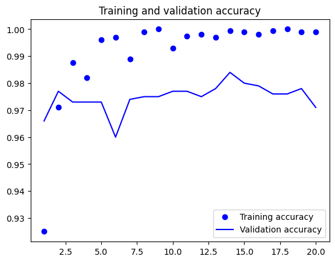
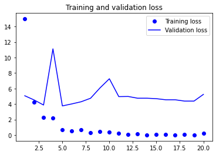
7. גישה 4 — Fine-Tuning
עד עכשיו ה-conv_base היה מקופא לחלוטין. בגישה הזו אנחנו "מפשירים" (unfreeze) את השכבות העליונות שלו ומאמנים אותן ביחד עם ה-classifier, ב-learning rate נמוך מאוד.
5 השלבים הקפדניים (PDF עמ' 47)

הקוד של שלב 4-5 (cells 70, 72)
# שלב 4: unfreeze רק 4 שכבות עליונות
conv_base.trainable = True
for layer in conv_base.layers[:-4]:
layer.trainable = False
# שלב 5: אימון משותף ב-lr נמוך
model.compile(loss="binary_crossentropy",
optimizer=keras.optimizers.RMSprop(learning_rate=1e-5), # ← פי 100 קטן!
metrics=["accuracy"])
history = model.fit(train_dataset, epochs=30,
validation_data=validation_dataset, callbacks=callbacks)- המשקלים כבר טובים: conv_base אומן על 1.4M תמונות ImageNet. שינוי גדול יהרוס את הייצוגים שלמד — catastrophic forgetting.
- הדרך הנותרת קצרה: conv_base כבר יודע "חתול" ו"כלב"; צריך רק התאמה עדינה לדומיין.
- למה רק 4 שכבות? השכבות התחתונות (Block 1-3) לומדות פיצ'רים גנריים (קצוות, מרקמים) שטובים לכל משימה. השכבות העליונות (Block 5) הן הספציפיות יותר — שם כדאי להתאים.
התוצאה
Epoch 1/30 - loss: 0.3296 - accuracy: 0.9910 - val_loss: 2.1599 - val_accuracy: 0.9760
Epoch 7/30 - loss: 0.0879 - accuracy: 0.9945 - val_loss: 1.2127 - val_accuracy: 0.9860 ← שיא
Epoch 14/30 - loss: 0.1573 - accuracy: 0.9945 - val_loss: 1.3727 - val_accuracy: 0.9840
Epoch 29/30 - loss: 0.0621 - accuracy: 0.9970 - val_loss: 1.0429 - val_accuracy: 0.9830
Epoch 30/30 - loss: 0.0774 - accuracy: 0.9975 - val_loss: 1.5774 - val_accuracy: 0.9780
Test accuracy: 0.977 (= 97.7%)- למה זה קרה? כש-feature extraction כבר במצב כמעט-אופטימלי (97.9%), יש פחות מקום לשיפור ויותר סיכון להרס. ה-4 שכבות העליונות שהתאמנו זזו במידה מסוימת מהמיקום האופטימלי שלהן.
- זה לא שגיאה. זה הטבע הסטוכסטי של DL — לפעמים השיפור הוא +1%, לפעמים −0.3%. בריצה קודמת של אותו קוד זה היה +0.3%.
- איך מנהלים את זה בפועל? משווים val_accuracy בין שני המודלים (feature extraction vs fine-tuned). אם fine-tuned לא טוב יותר — שומרים את ה-best של feature extraction.
- הספר מצפה לשיפור. במקרים אחרים הוא אכן יחזור — תלוי במשימה, ב-lr, ובמספר השכבות שמשחררים.
8. סיכום תוצאות הריצה
| גישה | epochs | זמן/epoch | Val accuracy שיא | Test accuracy | מה נדרש |
|---|---|---|---|---|---|
| From scratch | 30/30 | ~4-6s | 74.6% (overfit חזק) | 66.4% | נתונים + ארכיטקטורה |
| + Aug + Dropout | 30/100 ⚠ | ~3-5s | 80.9% (epoch 28) | 81.1% | augmentation pipeline |
| VGG16 fast feature | 20/20 | ~0.5s ⚡ | 98.4% (epoch 14) | (לא נמדד) | VGG16 + classifier קטן |
| VGG16 + aug (frozen) | 30/50 | ~10-20s | ~98.4% | 97.9% | + GPU טוב |
| Fine-tuning (4 top) | 30/30 | ~12s | 98.6% (epoch 2,7) | 97.7% ⚠ | + lr נמוך + סבלנות |
- הקפיצה האמיתית היא +31.5 נקודות (66.4 → 97.9) ב-step מ-augmentation ל-feature extraction.
- Augmentation לבד הוסיף +14.7 נקודות (66.4 → 81.1) — חצי מהקפיצה הגדולה.
- Fine-tuning הוריד −0.2 נקודות הפעם (97.9 → 97.7) — מקרה שבו לא היה מה לשפר.
- הזמן/epoch מאוד שונה מההרצה הקודמת (פי 30 מהיר יותר) — סימן שזה GPU חזק יותר.
9. שאלות חזרה למבחן
שאלה 1: למה לא משתמשים ב-include_top=True כשעושים transfer learning ל-Cats vs Dogs?
ה-classifier המקורי של VGG16 פולט 1000 קטגוריות של ImageNet (סוגי כלבים שונים, חתולים, כלי רכב, וכו'). למשימה שלנו צריך פלט בינארי. חוץ מזה — ה-Dense העליון מאומן ל-features מאוד ספציפיים של ImageNet, ולא ייצור הכללה טובה למשימה החדשה. בנוסף, ה-FC המקורי תופס 123M פרמטרים בנפרד — בזבזני.
שאלה 2: מתי דרושה preprocess_input במקום Rescaling(1./255)?
תמיד כשמשתמשים ברשת מאומנת שלא נורמלה ל-[0,1]. VGG16 אומן על תמונות BGR (לא RGB) עם חיסור ממוצע ImageNet לכל ערוץ. preprocess_input מבצע את הטיפול הנכון לכל מודל. שימוש לא נכון פוגע משמעותית באיכות ה-features.
שאלה 3: ב-CNN שראינו, Conv2D(32, 3) ראשון לוקח (180, 180, 3) ומחזיר (178, 178, 32). למה זה ולא (180, 180, 32)?
ברירת המחדל של Conv2D ב-Keras היא padding="valid" (ללא padding). עם kernel=3: output = 180 − 3 + 1 = 178. הערוצים 32 הם filters. סך פרמטרים: 32 × (3×3×3) + 32 = 896 — תואם את model.summary().
שאלה 4: מי שמשנה conv_base.trainable = False אחרי model.compile() מגלה שהמשקלים עדיין מתעדכנים. למה?
compile() מקבע את רשימת ה-trainable_variables לאופטימייזר. שינוי של trainable אחרי compile לא מתפשט אחורה. החוק: לקפא קודם, להעביר ל-compile אחר כך. בודקים עם len(model.trainable_weights) — אמור להיות 0 ל-conv_base מקופא.
שאלה 5: למה ב-fine-tuning משתמשים ב-learning_rate=1e-5 במקום 1e-3 הרגיל?
המשקלים של conv_base כבר במצב כמעט-אופטימלי לאחר אימון על ImageNet. עדכון חזק יהרוס את הייצוגים שלמדו (catastrophic forgetting). lr נמוך מאפשר התאמה עדינה לדומיין החדש. בנוסף, התקדמות התת-משימה (cats vs dogs) קטנה — הרשת כבר מזהה חתולים וכלבים בצורה מצוינת.
שאלה 6: בריצה הזו fine-tuning הוריד את ה-accuracy מ-97.9% ל-97.7%. האם זה אומר ש-fine-tuning גרוע?
לא! זה טבע סטוכסטי של DL:
- בריצה הקודמת של אותו קוד: fine-tuning שיפר +0.3 (97.5 → 97.8). הפעם: −0.2 (97.9 → 97.7).
- הסיבה: כש-feature extraction כבר 97.9%, יש מעט מקום לשיפור. הסיכון של הרס פיצ'רים שכבר טובים גדל.
- אסטרטגיה נכונה: תמיד שומרים את שני המודלים (FE ו-FT) עם
ModelCheckpoint, ומשתמשים בזה שמראה val_accuracy גבוה יותר. - מתי fine-tuning תמיד עוזר: כש-feature extraction באזור ה-85-95%. כש-FE כבר 97-98%, ה-margin להוסיף קטן ו-fine-tuning יכול ללכת לכל כיוון.
10. תובנות ושגיאות נפוצות
- `train_features.shape = (2000, 5, 5, 512)` — זה הפלט של block5_pool של VGG16 על קלט
180×180. רק2000 × 12,800 = 25.6Mערכים → ~100MB ב-RAM, אז אפשר לאחסן הכל ולקבל אימון של חצי שנייה לאפוק. - למה
Conv2D(256, 3)מופיע פעמיים בסוף הרשת מ-scratch? זו בחירה ארכיטקטונית נפוצה — להוסיף "עוד עומק" ברזולוציה הסופית הנמוכה (9×9) לפני ה-Flatten. זה לא חוק — אפשר גם רק פעם אחת. - VGG16 הוא איטי. 138M פרמטרים, מתוכם 14.7M ב-conv_base. אם מתפשרים על דיוק קטן, MobileNet/EfficientNet ייתנו transfer learning הרבה יותר זול לאימון ופי 10 מהיר ב-inference.
- למה loss עולה אבל accuracy מצוין? תופעה נפוצה ב-binary classification עם sigmoid: המודל אומר "100% חתול" על תמונה שהיא באמת חתול — אבל כשהוא טועה, הוא טועה בביטחון ("100% כלב" בעוד זה חתול), וזה דוחף את ה-loss הגבוה. ה-classification eraset (cat/dog) עדיין נכון. בריצה הזו: val_accuracy = 98.3% אבל val_loss = 1.04 — תאם בדיוק את התופעה.
- augmentation שולחת רק ב-training mode. שאלה נפוצה — האם זה רץ גם ב-
evaluate()? לא. השכבותRandomFlipוכו' פשוט מעבירות את הקלט כפי שהוא במצב inference (training=False). - Fine-tuning יכול גם להזיק. בריצה הזו זה הוריד את ה-test accuracy ב-0.2 נקודות. כשה-baseline (feature extraction) כבר 97.9%, אין הרבה מקום לשפר ויש סיכון להרס. תמיד שומרים גם את ה-FE וגם את ה-FT, ומשתמשים בטוב ביניהם.
- סטוכסטיות בריצות: אותו קוד הורץ פעמיים וקיבל מספרים שונים — 65→97.8 בפעם הראשונה, 66.4→97.7 בפעם השנייה. אותו קוד, אותם נתונים, אותם hyperparameters — אבל אתחול אקראי + augmentation אקראי יוצרים שונות של ±1-2 נקודות אחוז. כדי לקבל מספר אמין צריך 5+ ריצות ולקחת ממוצע.
- אסטרטגיה למבחן/פרויקט: תמיד תתחילו עם feature extraction מהיר (גישה 3א) — זה ייתן baseline טוב תוך דקה. רק אם צריך עוד דיוק — עוברים ל-feature extraction עם augmentation, ורק אז ל-fine-tuning (זוכרים שזה לא תמיד עוזר).
הרצאה 9 — Sequence Models (A): חיזוי סדרות זמן
מטרת ההרצאה: זו ההרצאה הראשונה על נתונים סדרתיים (sequence data). דרך משימה אחת — חיזוי הטמפרטורה בעוד 24 שעות — נבין למה רשתות רגילות ו-CNN לא מתאימות לסדרות זמן, ולמה רשתות recurrent (RNN/LSTM/GRU) כן. נריץ 5 מודלים מתחרים ונראה שרק רשתות ש"זוכרות סדר" מצליחות לעבור את הבייסליין.
על מה נדבר בפרק הזה
- סוגי בעיות סדרתיות: many-to-one, one-to-many, many-to-many.
- הנתונים: Jena Climate — 420,451 דגימות, 14 מדדי מז"א, כל 10 דקות, 2009–2016.
- הכנת נתונים סדרתיים: חיתוך חלונות זמן עם
timeseries_dataset_from_array, נרמול ופיצול כרונולוגי. - בייסליין ללא ML ("מחר = היום") — הרף שצריך לעבור (Test MAE 2.62).
- מודל Dense ומודל Conv1D — ושניהם נכשלים. למה?
- RNN — האינטואיציה, מימוש NumPy, ו-Keras (
SimpleRNN,return_sequences). - LSTM ו-GRU — פתרון ה-vanishing gradient עם carry track ושערים.
- שיפורים: recurrent dropout, stacking, bidirectional.
0. תמונת מפתח — תחרות המודלים
לפני הפרטים, הנה המסר המרכזי של ההרצאה במבט אחד: על אותה משימה בדיוק, מודל Dense ומודל CNN לא הצליחו אפילו לנצח בייסליין טיפשי ("הטמפרטורה בעוד 24 שעות = הטמפרטורה עכשיו"). רק רשתות recurrent, שמעבדות את הרצף לפי הסדר ו"זוכרות" מה שראו, ירדו מתחת לרף.
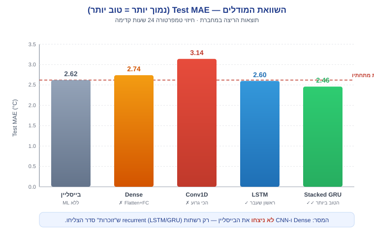
- Dense (2.74) ו-Conv1D (3.14) גרועים מהבייסליין — הם מתעלמים מסדר הזמן.
- LSTM (2.60) הוא הראשון שעובר את הרף — בקושי, אבל עובר.
- Stacked GRU (2.46) הוא הטוב ביותר. עדיין שיפור צנוע — כי לדאטה הזה יש גבול אמיתי (צריך תחנות נוספות כדי לחזות טוב יותר).
1. סוגי בעיות סדרתיות
עד עכשיו עבדנו עם רשתות feedforward: קלט יחיד נכנס, פלט יחיד יוצא, אין משמעות לזמן או לסדר. בנתונים סדרתיים יש רצף של קלטים ו/או רצף של פלטים — וזה משנה הכל.
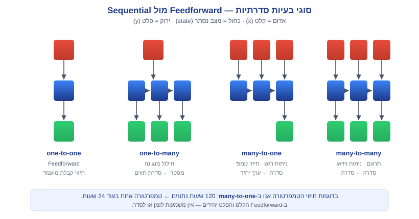
- many-to-one — ניתוח רגש ("ספר מדהים" → חיובי), חיזוי טמפרטורה.
- one-to-many — חילול מנגינה (מספר → סדרת תווים).
- many-to-many — תרגום משפטים, ניתוח פעילות מווידאו.
2. הנתונים — Jena Climate
הדאטה: מדידות מתחנת מזג אוויר במכון מקס-פלאנק ביֵנה, גרמניה. 14 מדדים (טמפרטורה, לחץ, לחות, כיוון רוח...) שנדגמו כל 10 דקות לאורך 2009–2016 — בסך הכל 420,451 שורות.
import pandas as pd
df = pd.read_csv("jena_climate_2009_2016.csv")
temperature = df["T (degC)"].to_numpy() # עמודת המטרה
raw_data = df.iloc[:, 1:].to_numpy() # כל 14 המדדים (כולל הטמפ' עצמה!)raw_data כולל גם את הטמפרטורה? כי הטמפרטורה של עכשיו היא feature מצוין לחיזוי הטמפרטורה בעתיד. אנחנו לא "מרמים" — המטרה (temperature[delay]) היא ערך עתידי, לא הערך הנוכחי.
מסתכלים על הנתונים — רואים מחזוריות בשתי סקאלות:
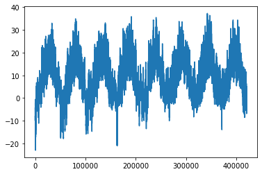
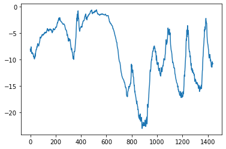
לחזות טמפרטורה ממוצעת לחודש הבא — קל. לחזות את הטמפרטורה ברזולוציה של ימים — קשה, כי יש הרבה יותר תנודתיות.
3. הכנת הנתונים — נרמול, פיצול וחלונות
פיצול כרונולוגי 50/25/25: ה-train הוא ה-50% הראשונים, אחריו validation (25%), ואחרון ה-test (25%).
נרמול — לפי ה-mean וה-std של ה-training בלבד (לא משתמשים בעתיד גם לנרמול):
mean = raw_data[:num_train_samples].mean(axis=0)
raw_data -= mean
std = raw_data[:num_train_samples].std(axis=0)
raw_data /= stdחלונות זמן — במקום ליצור ידנית רצפים חופפים (בזבוז זיכרון ענק), משתמשים בפונקציה שמייצרת אותם "on the fly":
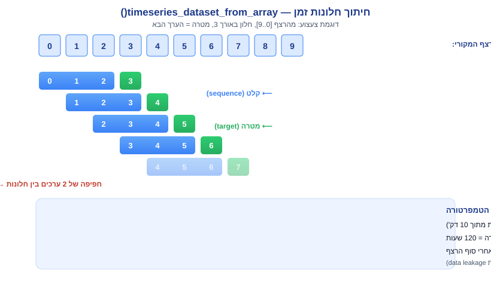
sampling_rate = 6 # דגימה פעם בשעה (כל דגימה שישית)
sequence_length = 120 # 5 ימים = 120 שעות אחורה
delay = sampling_rate * (sequence_length + 24 - 1) # המטרה: 24 שעות אחרי סוף הרצף
batch_size = 256
train_dataset = keras.utils.timeseries_dataset_from_array(
raw_data[:-delay],
targets=temperature[delay:],
sampling_rate=sampling_rate,
sequence_length=sequence_length,
shuffle=True, batch_size=batch_size,
start_index=0, end_index=num_train_samples)
# val/test: אותו דבר עם start_index/end_index מאוחרים יותרכל batch שיוצא הוא tuple של (samples, targets) בצורה הבאה:
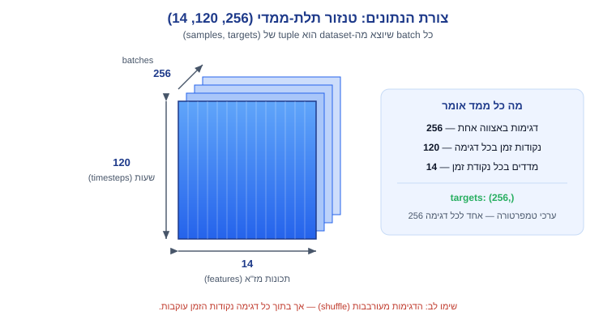
4. בייסליין ללא ML — הרף לעבור
ההנחה הכי בסיסית: הטמפרטורה בעוד 24 שעות תהיה כמו עכשיו. ניקח מכל דגימה את השעה האחרונה, התכונה הראשונה (טמפ'), נבטל את הנרמול, ונחשב MAE.
def evaluate_naive_method(dataset):
total_abs_err, samples_seen = 0., 0
for samples, targets in dataset:
preds = samples[:, -1, 1] * std[1] + mean[1] # השעה האחרונה, תכונה 1
total_abs_err += np.sum(np.abs(preds - targets))
samples_seen += samples.shape[0]
return total_abs_err / samples_seen
# Validation MAE: 2.44 | Test MAE: 2.625. מודל Dense — ונכשל
הניסיון הראשון: לשטח את הרצף (Flatten) ולהעביר דרך שכבות צפופות.
inputs = keras.Input(shape=(sequence_length, raw_data.shape[-1]))
x = layers.Flatten()(inputs)
x = layers.Dense(16, activation="relu")(x)
outputs = layers.Dense(1)(x)
# Test MAE: 2.74 → גרוע מהבייסליין!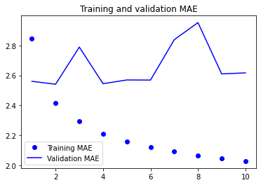
Flatten הורס את מבנה הזמן — 120 השעות הופכות לוקטור אחד ארוך, וכל נקודות הזמן "מתערבבות". המודל לא יודע מה מוקדם ומה מאוחר.
6. מודל Conv1D — ונכשל אפילו יותר
אם יש מחזוריות — אולי CNN יזהה אותה? Conv1D מחליק חלון לאורך הרצף (במקום על תמונה דו-ממדית).
inputs = keras.Input(shape=(sequence_length, raw_data.shape[-1]))
x = layers.Conv1D(8, 24, activation="relu")(inputs) # חלון של 24 שעות
x = layers.MaxPooling1D(2)(x)
x = layers.Conv1D(8, 12, activation="relu")(x)
x = layers.MaxPooling1D(2)(x)
x = layers.Conv1D(8, 6, activation="relu")(x)
x = layers.GlobalAveragePooling1D()(x)
outputs = layers.Dense(1)(x)
# Test MAE: 3.14 → הכי גרוע!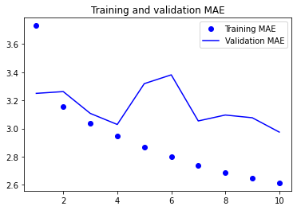
MaxPooling אפילו הורס את הסדר — אבל בסדרות זמן הסדר הוא הכל (נתונים מסוף הרצף חשובים יותר מההתחלה).
7. RNN — רשת עם זיכרון
כל הרשתות עד כה היו חסרות זיכרון (stateless): כל קלט עובד בנפרד. אבל כשאנחנו קוראים משפט — קוראים אותו מילה אחרי מילה, ושומרים בזיכרון מה קראנו קודם. RNN מאמץ בדיוק את הרעיון הזה: הוא עובר על איברי הרצף אחד-אחד ושומר state — זיכרון של מה שראה עד עכשיו.
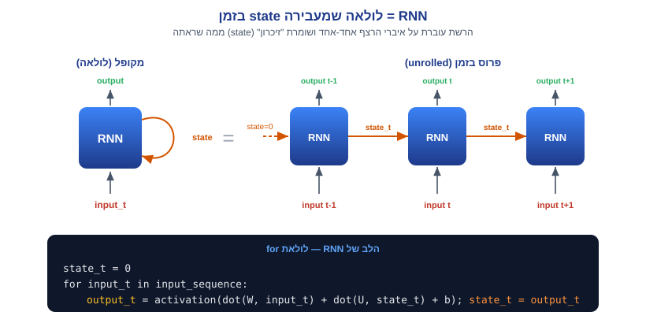
מימוש "צעצוע" ב-NumPy מבהיר את הרעיון:
state_t = np.zeros((output_features,))
for input_t in inputs: # עובר על נקודות הזמן
output_t = np.tanh(np.dot(W, input_t) + np.dot(U, state_t) + b)
successive_outputs.append(output_t)
state_t = output_t # ה-state מתעדכן בכל צעדstate מתאפס בין דגימות בלתי-תלויות (משפטים שונים, חלונות זמן שונים). בתוך דגימה אחת — הוא נשמר וזורם לאורך כל נקודות הזמן.
8. return_sequences — שני מצבי פלט
שכבות recurrent ב-Keras (SimpleRNN, LSTM, GRU) יכולות לרוץ בשני מצבים, שנקבעים ע"י הפרמטר return_sequences. ההבדל נראה זהה בקוד כמעט — אבל הצורה של הפלט שונה לגמרי, וזה קריטי.
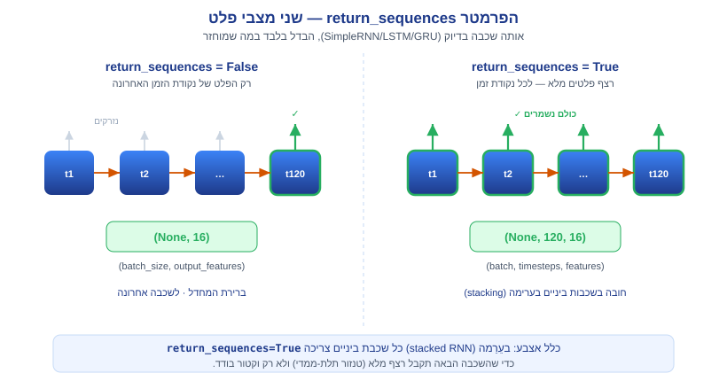
steps, num_features = 120, 14
inputs = keras.Input(shape=(steps, num_features))
layers.SimpleRNN(16, return_sequences=False)(inputs) # → (None, 16)
layers.SimpleRNN(16, return_sequences=True)(inputs) # → (None, 120, 16)return_sequences=True, אחרת השכבה הבאה לא תקבל רצף לעבד.
# ערימה: שכבות הביניים מחזירות רצף מלא, האחרונה רק וקטור
x = layers.SimpleRNN(16, return_sequences=True)(inputs)
x = layers.SimpleRNN(16, return_sequences=True)(x)
outputs = layers.SimpleRNN(16)(x) # return_sequences=False (ברירת מחדל) → (None, 16)9. LSTM ו-GRU — פתרון ה-Vanishing Gradient
ב-SimpleRNN כמעט אף פעם לא משתמשים בפועל. הסיבה: הוא מסתכל על כל ההיסטוריה, מה שמוביל ל-vanishing gradient — סיגנלים מוקדמים נעלמים (כמו ב-feedforward עם הרבה שכבות). כדי לפתור זאת פותחו LSTM (Hochreiter & Schmidhuber, 1997) ו-GRU (Cho et al., 2014).
הרעיון של LSTM: מסוע זיכרון (carry track) שפועל במקביל לרצף. מידע יכול "לקפוץ" אל המסוע בכל שלב ולחזור כשצריך — וכך סיגנלים מוקדמים לא נעלמים. רעיון דומה ל-residual connections ב-ResNet.
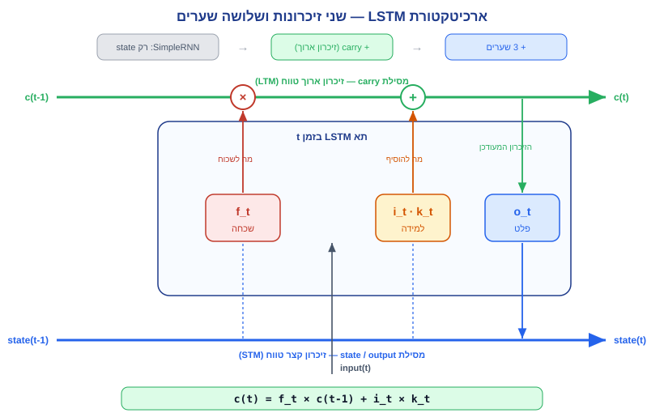
הנוסחאות — איך מחשבים את הפלט ואת ה-carry
פירוש אינטואיטיבי: f_t = שער שכחה (מה לזרוק מהזיכרון), i_t · k_t = מידע חדש ללמוד, o_t = מה להוציא כפלט. ארבע קבוצות משקלים (W, U, b לכל שער) — לכן LSTM "כבד" יותר מ-SimpleRNN.
LSTM על בעיית הטמפרטורה
inputs = keras.Input(shape=(sequence_length, raw_data.shape[-1]))
x = layers.LSTM(16)(inputs)
outputs = layers.Dense(1)(x)
# Validation MAE: 2.39 | Test MAE: 2.60 → סוף סוף עוברים את הבייסליין!GRU — אותו רעיון, פשוט יותר
GRU (Gated Recurrent Unit) דומה מאוד ל-LSTM אבל עם פחות שערים ופחות פרמטרים — לרוב מהיר יותר ובעל ביצועים דומים. בריצת המחברת מודל ה-GRU הערום נתן את התוצאה הטובה ביותר.
10. שיפורים — Dropout, Stacking, Bidirectional
Recurrent Dropout
המודל התחיל overfitting כבר מ-epoch 6. אבל dropout רגיל לפני שכבת recurrent פוגע בתוצאות. המחקר (Yarin Gal) מצא שהדרך הנכונה: להחיל את אותה מסכת dropout על כל נקודות הזמן — וזה מה ש-recurrent_dropout עושה.
x = layers.LSTM(32, recurrent_dropout=0.25)(inputs)
x = layers.Dropout(0.5)(x) # dropout רגיל אחרי, לרגולריזציה של ה-Dense
# Validation MAE: 2.27 | Test MAE: 2.45 · פחות overfittingStacking — ערימת שכבות
כלל אצבע: בונים מודל מורכב מספיק עד שמגיעים ל-overfitting, ורק אז נלחמים בו. אם לא מגיעים ל-overfitting — המודל לא הגיע לגבול היכולת. מוסיפים שכבות (לדוגמה, Google Translate בנוי מ-7 שכבות LSTM). כל שכבת ביניים חייבת return_sequences=True:
x = layers.GRU(32, recurrent_dropout=0.5, return_sequences=True)(inputs)
x = layers.GRU(32, recurrent_dropout=0.5)(x)
x = layers.Dropout(0.5)(x)
outputs = layers.Dense(1)(x)
# Test MAE: 2.46 · Stacked GRU — הטוב ביותר בריצהBidirectional — קריאה משני הכיוונים
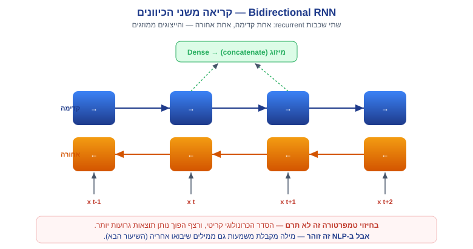
x = layers.Bidirectional(layers.LSTM(16))(inputs)11. תובנות ושגיאות נפוצות
- למה מודל "חכם" מפסיד לבייסליין טיפש? כי הבייסליין מקודד ידע אמיתי על הבעיה (מחר דומה להיום), ומודל שמתעלם מהסדר פשוט לא לוכד את זה. תמיד מתחילים מבייסליין לא-ML כדי לדעת אם ה-ML באמת תורם.
- translation invariance זה ההבדל בין CNN ל-RNN. ב-CNN מניחים שתבנית חשובה לא משנה איפה היא נמצאת — נכון לתמונות, שגוי למז"א (בוקר ≠ לילה) ולסדר כרונולוגי.
- שני שקפים זהים בטקסט יכולים לשאת מסר שונה. שקפים 40/41 — אותו טקסט, אבל אחד מדגים
return_sequences=FalseוהשניTrue. תמיד לבדוק מה מודגש/מצויר, לא רק מה כתוב. - RNN על CPU מהיר מ-GPU כשיש מעט פרמטרים. לולאת ה-for לא מנצלת מקביליות; ל-GPU כדאי
unroll=True(פורס את הלולאה) אבל רק לרצפים קצרים (עד ~100) ובאורך קבוע ידוע מראש. - הבדל בין שקפים למחברת: ב-PDF מופיע GRU עם Test MAE 2.39, במחברת 2.46. שונות סטוכסטית רגילה (אתחול אקראי + dropout) — אותו סיפור כמו בהרצאה 8.
- גבול אמיתי לבעיה: אי אפשר לשפר את הבייסליין בהרבה — לחיזוי טוב יותר צריך נתונים מתחנות סובבות. "DL זו יותר אומנות ממדע" — כל dataset ייחודי.
12. מיפוי שקף ← סעיף (לבדיקה מול ה-PDF)
טבלת בקרה: איזה שקף ב-PDF מכוסה בכל חלק של הפרק. כך אפשר לוודא שכלום לא נפל בין הכיסאות.
| שקפים ב-PDF | נושא | סעיף בפרק |
|---|---|---|
| 2, 67 | מבנה השיעור (agenda) | "על מה נדבר" |
| 3–9 | סוגי בעיות סדרתיות · feedforward vs sequential | §1 |
| 10–14 | הבעיה · הנתונים · מחזוריות | §2 |
| 15–24 | פיצול · נרמול · windowing · צורת טנזור | §3 |
| 25 | בייסליין ללא ML | §4 |
| 26–27 | מודל Dense | §5 |
| 28–31 | מודל Conv1D · למה נכשל | §6 |
| 32–38 | RNN — אינטואיציה · pseudocode · NumPy | §7 |
| 39–42 | Recurrent layer ב-Keras · return_sequences · stacking | §8 |
| 43–53 | SimpleRNN בעייתי · LSTM · נוסחאות · GRU | §9 |
| 54–66 | recurrent dropout · stacking · bidirectional · שיפורים | §10 |
הרצאה 10 — Sequence Models (B): ניתוח טקסט · NLP · Transformer
מטרת ההרצאה: איך מלמדים מחשב להבין טקסט. דרך משימה אחת — סיווג סנטימנט של ביקורות סרטים IMDB (חיובי/שלילי) — נעבור על שלוש משפחות מודלים: Bag-of-Words (מתעלם מסדר), Sequence/RNN (מכבד סדר), ו-Transformer (self-attention). בדרך נבין tokenization, embeddings, masking, ו-attention — ונגלה תוצאה מפתיעה.
על מה נדבר בפרק הזה
- NLP — מבוא קצר: למה שפה טבעית קשה, וההיסטוריה (חוקים ← ML ← DL).
- שלוש הגישות לסדר המילים: BoW / RNN / Transformer.
- הכנת נתונים: סטנדרטיזציה, tokenization, vocabulary, וקטוריזציה.
- Bag-of-Words: unigram, bigram, TF-IDF — והתוצאות בפועל.
- Sequence models: one-hot (איטי!) ← word embeddings ← masking ← GloVe.
- Transformer: self-attention, multi-head, positional encoding, encoder/decoder.
- מתי לבחור BoW ומתי Sequence — כלל אצבע מעשי.
0. תמונת מפתח — תחרות המודלים וההפתעה
הנה כל ההרצאה במבט אחד. שמונה מודלים התחרו על אותה משימה (סיווג ביקורות IMDB). המסר המפתיע: דווקא Bag-of-Words פשוט עם bigrams ניצח את ה-Transformer המתוחכם.
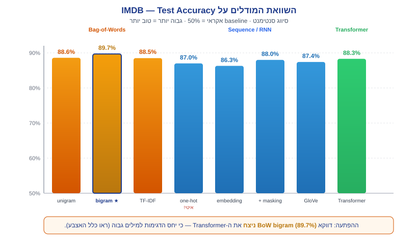
- כל המודלים קרובים (86–90%) — הבעיה הזו "קלה" יחסית, ורף ה-BoW גבוה.
- BoW bigram (89.7%) הוא המנצח — פשוט, מהיר, ולמד "סדר מקומי" דרך זוגות מילים.
- ה-Transformer (88.3%) מצוין אבל לא ניצח כאן — לא תמיד הכלי המתוחכם ביותר הוא הנכון (ראו §10).
1. NLP — למה שפה טבעית קשה
שפת תכנות מול שפה טבעית: בשפת תכנות קודם הגדירו חוקים מדויקים ואז השתמשו בהם. בשפה טבעית — קודם דיברו, ואז (אולי) ניסחו חוקים, שלרוב מופרים. זו הסיבה שהגישה ה"לשונית" (חוקי דקדוק) נכשלה.
- שנות ה-90: חוקי לשון ידניים — השיטה השולטת, מוגבלת.
- סוף שנות ה-80 ←: ML — עצי החלטה, Naive Bayes, רגרסיה לוגיסטית מוצאים חוקים אוטומטית מהנתונים.
- 2014–2017: LSTM / BiLSTM — פריצת דרך, "השיטה השולטת".
- 2017 ←: Transformer — השיטה השולטת עד היום.
נקודה חשובה: המודלים לא באמת מבינים שפה — כמו שמודל ראייה לא באמת "רואה". הם מתבססים על ייצוגים סטטיסטיים כדי לבצע משימות (סיווג, תרגום, סיכום, יצירת טקסט...).
2. שלוש גישות לסדר המילים
האתגר המרכזי: איך לתפוס את סדר המילים? בניגוד לסדרות זמן, למילים אין סדר "טבעי" יחיד — שפות שונות מסדרות אחרת, ואותו רעיון אפשר לנסח בכמה דרכים. יש שלוש גישות:
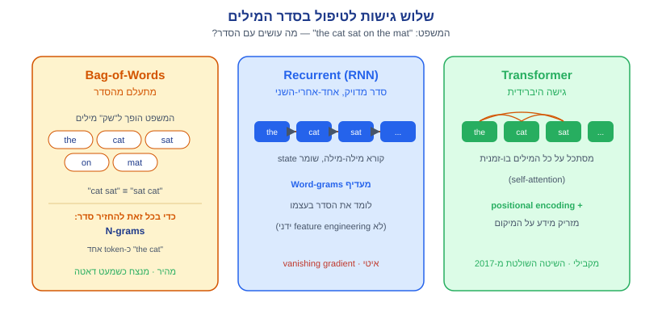
3. הכנת הנתונים — מטקסט לטנזור
רשת נוירונים מקבלת מספרים, לא טקסט. צריך וקטוריזציה — והיא עוברת דרך צינור קבוע:
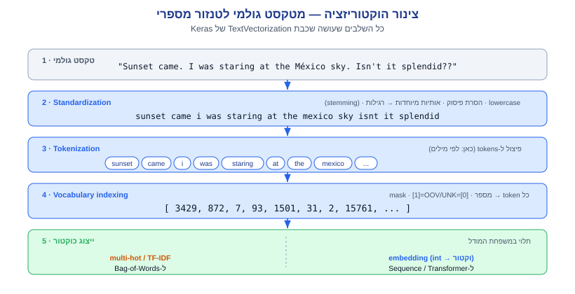
4. Bag-of-Words — טקסט כ"שק מילים"
הגישה הראשונה: להתעלם מהסדר ולהתייחס לטקסט כ-set של מילים. כל ביקורת הופכת לוקטור multi-hot באורך ה-vocabulary (20,000), כשכל איבר אומר "האם המילה הזו הופיעה".
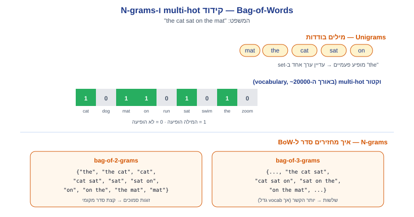
הקוד — שכבת TextVectorization
text_vectorization = TextVectorization(
max_tokens=20000,
output_mode="multi_hot", # ל-bigram: ngrams=2 ; ל-TF-IDF: output_mode="tf_idf"
)
text_vectorization.adapt(text_only_train_ds) # לומד את ה-vocabulary
# מודל פשוט: Dense על הוקטור הדליל
inputs = keras.Input(shape=(20000,))
x = layers.Dense(16, activation="relu")(inputs)
x = layers.Dropout(0.5)(x)
outputs = layers.Dense(1, activation="sigmoid")(x)התוצאות
| מודל | Test acc | הערה |
|---|---|---|
| Unigram (multi-hot) | 0.886 | מילים בודדות |
| Bigram (multi-hot) | 0.897 | הטוב ביותר — סדר מקומי עוזר! |
| Bigram + TF-IDF | 0.885 | נרמול לפי שכיחות |
5. Sequence Models — לתת למודל ללמוד את הסדר
ב-BoW יצרנו את הסדר ידנית (n-grams = feature engineering). ב-sequence models נותנים למודל ללמוד את הסדר בעצמו: מייצגים כל מילה כמספר ← ממפים כל מספר לוקטור ← מזינים את רצף הוקטורים ל-RNN/Transformer. נדגים זאת עם BiLSTM על IMDB.
5.1 הכנת הנתונים — וקטוריזציה כ-int (שקף 35)
שלב ראשון, וקריטי: כאן לא משתמשים ב-multi_hot. רוצים לשמר את סדר המילים, אז מייצגים כל ביקורת כ-רצף של מספרים שלמים (כל מספר = אינדקס מילה במילון), באורך קבוע.
max_length = 600
max_tokens = 20000
text_vectorization = layers.TextVectorization(
max_tokens=max_tokens,
output_mode="int", # ← שינוי מהותי: רצף אינדקסים, לא multi-hot
output_sequence_length=max_length, # ← כל הרצפים יחתכו/ירופדו ל-600
)
text_vectorization.adapt(text_only_train_ds)
int_train_ds = train_ds.map(lambda x, y: (text_vectorization(x), y), num_parallel_calls=4)
# (וכך גם int_val_ds, int_test_ds)איך נראה הקלט עכשיו? כל ביקורת היא וקטור של 600 מספרים, עם אפסי ריפוד בסוף:
for inputs, targets in int_train_ds:
print(inputs.shape) # (32, 600) — 32 ביקורות, כל אחת רצף באורך 600
print(inputs[0]) # [ 10 432 9 ... 88 0 0 0 ... 0 ] ← אפסים = ריפוד
break5.2 מהמספרים לוקטורים — one-hot (שקפים 36–37)
רשת לא יכולה לעבוד ישירות על אינדקסים (המספר 5000 לא "גדול" מהמספר 3). צריך להמיר כל מספר לוקטור. הדרך הפשוטה ביותר: one-hot — כל אינדקס הופך לוקטור באורך 20,000, עם 1 במקום אחד ו-0 בכל השאר. את רצף הוקטורים מזינים ל-Bidirectional LSTM.
inputs = keras.Input(shape=(None,), dtype="int64") # רצף אינדקסים
embedded = OneHotEncoding(max_tokens)(inputs) # → (batch, 600, 20000)
x = layers.Bidirectional(layers.LSTM(32))(embedded) # BiLSTM קורא משני הכיוונים
x = layers.Dropout(0.5)(x)
outputs = layers.Dense(1, activation="sigmoid")(x) # חיובי / שלילי
# סה"כ ~5.1 מיליון פרמטרים5.3 התוצאה — עובד, אבל איטי וגרוע מ-BoW (שקף 38)
Test acc = 0.87 — פחות טוב מ-BoW bigram (0.897). וגרוע מכך: האימון איטי להחריד — בריצת המחברת כל epoch ארך כ-2,500 שניות (~42 דקות!).
600 × 20,000 = 12 מיליון מספרים. עצום, דליל (רק 600 ערכי 1 מתוך 12M), וחסר משמעות — כל המילים אורתוגונליות (movie ⊥ film). ה-BiLSTM צריך לעבד את הקלט הענק הזה צעד-אחר-צעד.
6. Word Embeddings — וקטורים צפופים עם משמעות
ב-one-hot, "movie" ו-"film" אורתוגונליים (מרחק מקסימלי) — למרות שמשמעותם כמעט זהה. זו הנחה שגויה. Word embeddings ממפים כל מילה לוקטור צפוף קצר, כך שמילים דומות במשמעות יהיו קרובות גאומטרית.
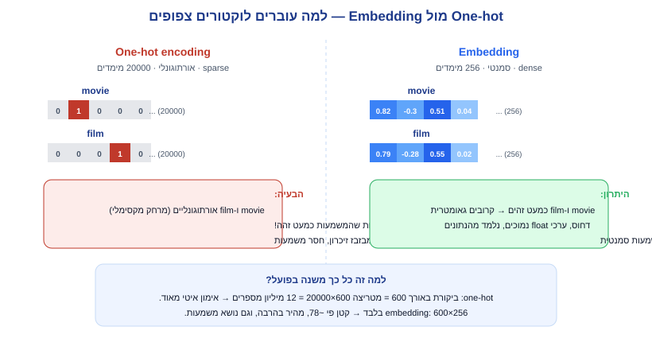
היופי: כיוונים במרחב מקודדים יחסים סמנטיים — אפשר לעשות אריתמטיקה של משמעות.
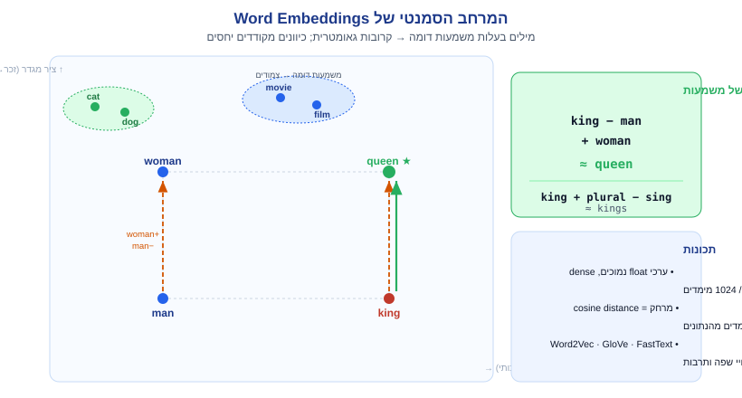
הקוד — שכבת Embedding שנלמדת מאפס
inputs = keras.Input(shape=(None,), dtype="int64")
embedded = layers.Embedding(input_dim=20000, output_dim=256)(inputs)
x = layers.Bidirectional(layers.LSTM(32))(embedded)
outputs = layers.Dense(1, activation="sigmoid")(x)
# Test acc: 0.863 · קצת פחות מ-BoW אבל מהיר בהרבה מ-one-hot7. Masking — לדלג על הריפוד
בעיה: ביקורת קצרה רופדה ל-600 ← ה-BiLSTM "מבזבז" מאות איטרציות על אפסים לפני שמגיע למידע. הפתרון — mask שאומר לרשת אילו מקומות אמיתיים ואילו ריפוד.
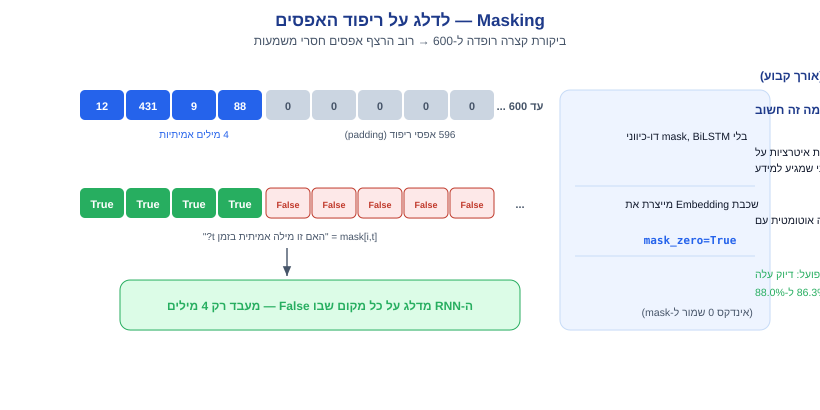
embedded = layers.Embedding(20000, 256, mask_zero=True)(inputs)
# שכבת ה-Embedding מייצרת את ה-mask אוטומטית; ה-LSTM ידלג על האפסים.
# Test acc: 0.880 · שיפור מ-0.8638. Pretrained Embeddings — GloVe
כשאין מספיק נתונים ללמוד embeddings טובים, אפשר לטעון מוכנים. נטען את GloVe (400,000 וקטורים) לתוך שכבת Embedding קפואה (trainable=False).
# טוענים את הקובץ glove.6B.100d.txt → 400,000 word vectors
embedding_matrix = np.zeros((max_tokens, 100))
for word, i in word_index.items():
if i < max_tokens and (vec := embeddings_index.get(word)) is not None:
embedding_matrix[i] = vec
embedding_layer = layers.Embedding(
max_tokens, 100,
embeddings_initializer=keras.initializers.Constant(embedding_matrix),
trainable=False, mask_zero=True)
# Test acc: 0.8749. Transformer — "Attention is all you need"
מ-2017 (Vaswani et al.) הארכיטקטורה השולטת ב-NLP. היא נפטרת מה-RNN לגמרי, ומבוססת על self-attention. שני יתרונות על RNN: מקבילי (הרצף עובר בבת אחת, לא בלולאה איטית) ואין vanishing gradient.
9.1 Self-Attention — הליבה
הרעיון: לא כל מילה חשובה באותה מידה. כדי להבין מילה, מסתכלים על המילים הרלוונטיות אליה ונותנים להן "תשומת לב" (attention). כך מילה מקבלת ייצוג מודע-הקשר.
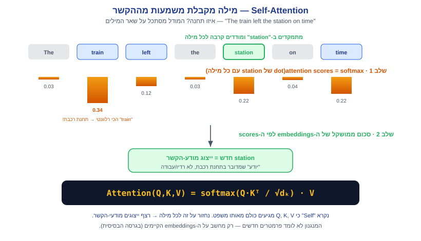
9.2 Multi-Head Attention
במקום attention אחד, מפצלים ל-h ראשים מקבילים. כל ראש לומד אספקט אחר של הקשר (תחביר, נושא, זמן...), והתוצאות משורשרות.
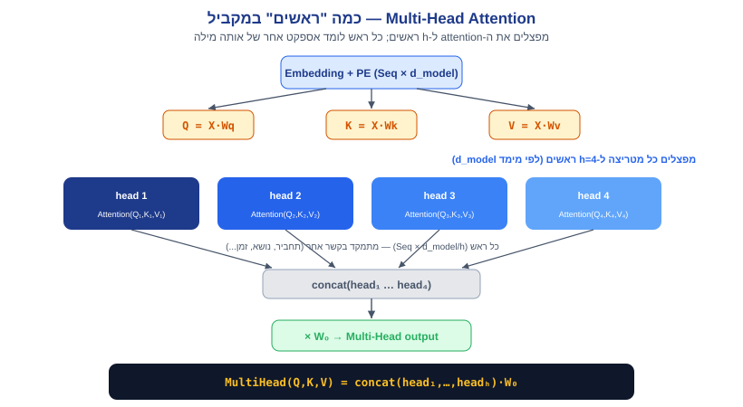
9.3 Positional Encoding
self-attention לבדו "עיוור לסדר" (מסתכל על כל המילים בו-זמנית). מחזירים את מידע המיקום ע"י הוספת וקטור מיקום לכל מילה.
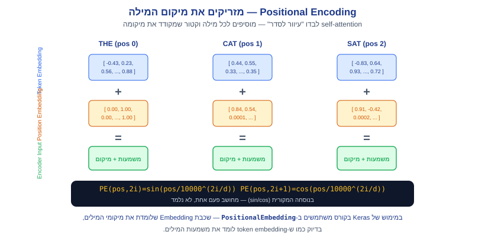
9.4 בלוק ה-Encoder — והסיווג של IMDB
מחברים הכל: Embedding+PE ← Multi-Head Attention ← Add&Norm ← Feed-Forward ← Add&Norm. חיבורי ה-residual (כמו ResNet) מייצבים את האימון.
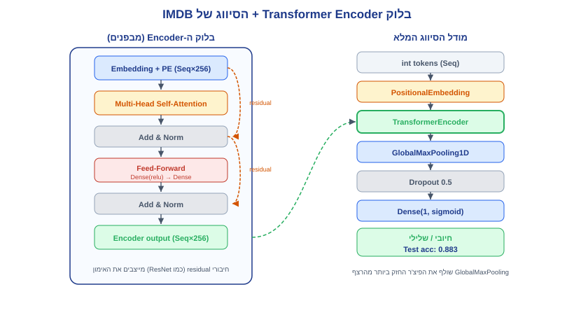
class TransformerEncoder(layers.Layer):
def __init__(self, embed_dim, dense_dim, num_heads, **kwargs):
super().__init__(**kwargs)
self.attention = layers.MultiHeadAttention(num_heads=num_heads, key_dim=embed_dim)
self.dense_proj = keras.Sequential(
[layers.Dense(dense_dim, activation="relu"), layers.Dense(embed_dim)])
self.layernorm_1 = layers.LayerNormalization()
self.layernorm_2 = layers.LayerNormalization()
def call(self, inputs, mask=None):
attention_output = self.attention(inputs, inputs, attention_mask=mask)
proj_input = self.layernorm_1(inputs + attention_output) # Add & Norm
proj_output = self.dense_proj(proj_input)
return self.layernorm_2(proj_input + proj_output) # Add & Norm
# מודל הסיווג המלא → Test acc: 0.8839.5 התמונה המלאה — Encoder ו-Decoder (תרגום)
ה-Transformer המקורי נבנה לתרגום — מודל Sequence-to-Sequence עם Encoder (קורא את המקור) ו-Decoder (מייצר את היעד). הסיווג של IMDB השתמש רק ב-Encoder.
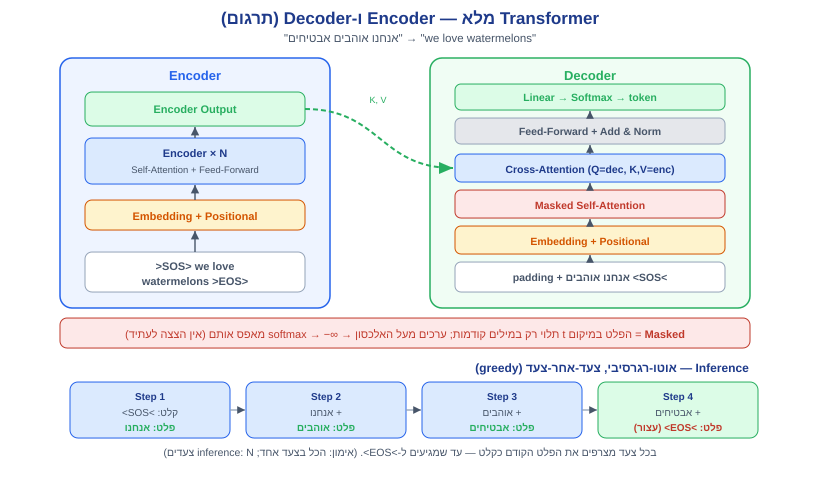
10. מתי BoW ומתי Sequence Model?
הטענה ש"Transformer תמיד הכי טוב" לא בהכרח נכונה. יש כלל אצבע מעשי, לפי היחס בין מספר הדגימות לאורך הטקסט:
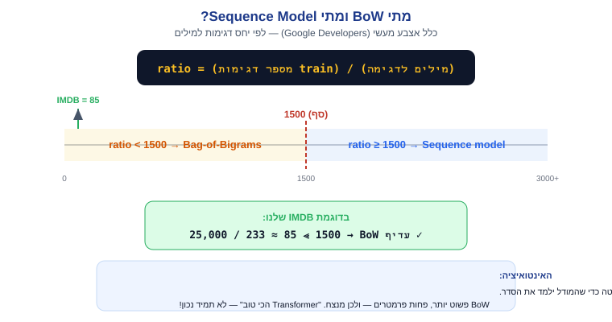
25,000 / 233 ≈ 85 ≪ 1500 ← ולכן BoW (bigrams) עבד טוב יותר. זה בדיוק מה שראינו בגרף ההשוואה.
11. מעבר לכך — Pretrained Sentence Embeddings
היום אפשר לקבל ייצוג של משפט שלם ממודלים ענקיים מאומנים מראש, בלי לאמן כלום:
from sentence_transformers import SentenceTransformer
model = SentenceTransformer('stsb-roberta-large') # מבוסס RoBERTa / BERT
embeddings = model.encode(sentences) # וקטור באורך 1024 לכל משפטדוגמאות נוספות: BERT, RoBERTa, ו-Google Universal Sentence Encoder (וקטור 512). אלה ה-"ImageNet של טקסט" — transfer learning לשפה.
12. תובנות ושגיאות נפוצות
- "Transformer הכי טוב" — מיתוס. כאן BoW bigram ניצח. תמיד תתחילו מ-baseline פשוט (BoW) לפני שתשקיעו במודל מורכב.
- one-hot לרצפים = אסון ביצועים. 600×20000 = 12M מספרים/ביקורת ← אימון של דקות לכל epoch. embeddings פותרים זאת (פי ~78 קטן יותר) וגם נושאים משמעות.
- pretrained embeddings עוזרים רק כשמעט דאטה. עם מספיק דגימות, embeddings ייעודיים שנלמדים מהמשימה טובים יותר (GloVe 87.4% < embedding ייעודי + mask 88.0%).
- masking חשוב לרצפים מרופדים. בלעדיו ה-RNN מבזבז איטרציות על אפסים.
mask_zero=Trueפותר בחינם. - Self-attention = context-aware embeddings. זה הרעיון המהפכני: משמעות מילה משתנה לפי שכנותיה, במקום משמעות קבועה.
- Positional encoding הכרחי בטרנספורמר. בלעדיו המודל "עיוור לסדר" כי attention מסתכל על הכל בו-זמנית.
13. מיפוי שקף ← סעיף (לבדיקה מול ה-PDF)
| שקפים ב-PDF | נושא | סעיף |
|---|---|---|
| 2, 88 | מבנה השיעור (agenda) | "על מה נדבר" |
| 3–6 | NLP — מבוא, היסטוריה | §1 |
| 17 | שלוש גישות לסדר מילים | §2 |
| 7–16 | הכנת נתונים · standardization · tokenization · vocab · vectorization | §3 |
| 11–12, 20–32 | Bag-of-Words · n-grams · unigram/bigram/TF-IDF | §4 |
| 33–38 | Sequence models · one-hot + BiLSTM | §5 |
| 39–44 | Word embeddings · learned vs pretrained · king-queen | §6 |
| 45–46 | Masking | §7 |
| 47–49 | Pretrained GloVe | §8 |
| 50–84 | Transformer · self/multi-head attention · positional · encoder/decoder | §9 |
| 85 | מתי BoW ומתי Sequence | §10 |
| 86–87 | Pretrained Doc2Vec · BERT · RoBERTa · USE | §11 |
הרצאה 11 — Hugging Face: מדריך ראשוני
מטרת ההרצאה: להכיר את Hugging Face — האקוסיסטם שהפך מודלים מתקדמים (BERT, GPT ודומיהם) לנגישים בכמה שורות קוד ("Democratizing AI"). נראה איך פותרים משימות NLP מוכנות דרך pipeline(), מה קורה בתוך ה-pipeline (tokenizer → model → prediction), ואיך טוענים, מגדירים ושומרים מודלים מאומנים מראש.
- 🎓 רעיוני · עלול להישאל במבחן — הרעיון/המושג. זה מה שלומדים למבחן.
- 💻 פרקטי · הדגמת קוד — קוד מהווידאו, ברובו לא נבחן ישירות (לכל היותר ברמה רעיונית). הקוד מקופל — לחצו לפתיחה.
על מה נדבר בפרק הזה
- מה זה Hugging Face — המטרה והשירותים (Transformers · Hub · ספריות נלוות).
- טביעת רגל פחמנית של AI — ולמה pretrained + fine-tuning מצמצמים אותה.
- טקסונומיית המשימות (NLP → גם ראייה ואודיו) והפלטפורמה (Models/Datasets/Spaces).
- ה-Pipeline — שלושת השלבים (pre-processing → model → post-processing).
- שמונה משימות NLP דרך
pipeline()— בקוד. - מה קורה בתוך ה-pipeline: tokenizer → model (logits) → prediction (softmax).
- Transfer learning ו-Auto classes · מה קורה כשטוענים מודל · שמירה ו-fine-tuning.
1. מה זה Hugging Face — "Democratizing AI"
אינטואיציה: פעם, כדי להשתמש במודל מתקדם היית צריך לאמן אותו בעצמך (דאטה ענק, GPU, ימים). Hugging Face הוא "ה-GitHub של מודלי AI" — פלטפורמה שבה אלפי מודלים מאומנים מראש זמינים להורדה ושימוש בכמה שורות. זו המשמעות של "Democratizing AI": הנגשת AI לכולם.
שלושת השירותים המרכזיים:
- Transformers Library — ספריית Python עם מימוש קוד-פתוח של מודלי transformer לטקסט, תמונה ואודיו. תואמת ל-PyTorch · TensorFlow · JAX, וכוללת מודלים מפורסמים כמו BERT ו-GPT-2.
- Hugging Face Hub — פלטפורמת אירוח מרכזית (כמו GitHub) ל: מודלים (עם בקרת גרסאות Git), datasets (טקסט/תמונה/אודיו), ו-spaces (אפליקציות הדגמה).
- ספריות נלוות —
Datasets(טעינה/עיבוד דאטה),Evaluate(מדדי הערכה),Simulate(סימולציה), ו-Gradio(בניית ממשקי הדגמה).
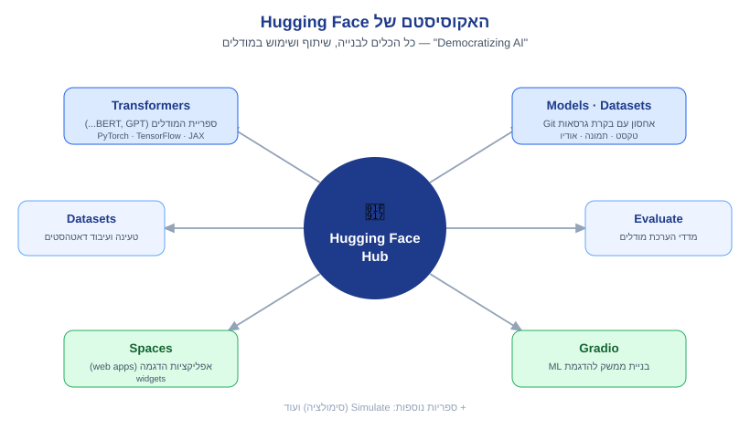
2. טביעת רגל פחמנית של AI (Green AI)
הרעיון: אימון מודלים עמוקים צורך הרבה חשמל ← פולט CO₂. זו סיבה סביבתית (ולא רק חישובית) להעדיף שימוש חוזר במודלים על פני אימון מאפס. Hugging Face שם דגש על המודעות הזו.
איך מצמצמים את טביעת הרגל הפחמנית?
- שימוש ב-GPU ידידותיים לסביבה.
- שימוש במודלים מאומנים מראש (pretrained) במקום אימון מאפס.
- fine-tuning במקום training from scratch.
- להתחיל בניסויים קטנים ו-debugging לפני הרצה מלאה.
- בחירת טווחי hyperparameters לפי סקירת ספרות (לא לנחש).
- Random search ל-hyperparameters במקום grid search (יעיל יותר).
from codecarbon import EmissionsTracker — מודד את פליטת ה-CO₂ של ריצת אימון.
3. אילו משימות? והפלטפורמה
Hugging Face התחיל ממשימות NLP, והיום תומך גם בראייה ואודיו. סוגי משימות ה-NLP הקלאסיים:
- סיווג משפט שלם (sentiment, נושא).
- סיווג כל מילה במשפט (חלקי דיבר, NER).
- יצירת טקסט (השלמת משפט).
- חילוץ תשובה מתוך טקסט (question answering).
- יצירת משפט חדש מקלט (תרגום, סיכום).
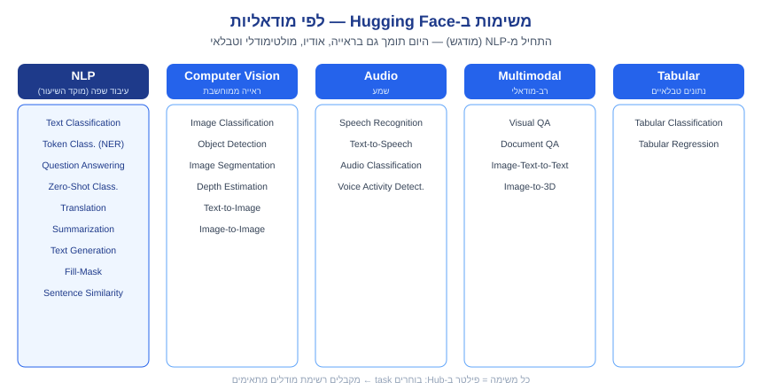
הפלטפורמה כוללת שלושה אזורים מרכזיים: Models (אלפי מודלים, מסוננים לפי משימה) · Datasets (דאטהסטים) · Spaces (אפליקציות הדגמה אינטראקטיביות).
4. ה-Pipeline — לב העניין
הפונקציה pipeline() היא הדרך הפשוטה ביותר להשתמש במודל. היא עוטפת שלושה שלבים ומחביאה את כל המורכבות:
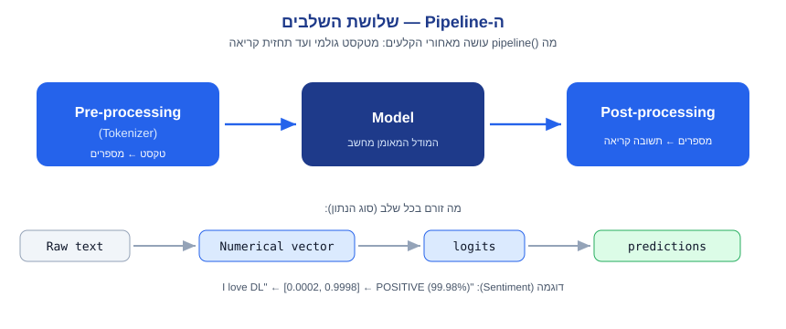
- Pre-processing (Tokenizer): ממיר טקסט גולמי לוקטור מספרי שהמודל מבין.
- Model: המודל המאומן מקבל את המספרים ומחזיר logits (ציונים גולמיים).
- Post-processing: ממיר את ה-logits לתשובה קריאה (למשל הסתברויות + תווית).
raw text → numerical vector → logits → predictions. אם יודעים מה כל שלב מקבל ומחזיר — מבינים את כל ה-pipeline.
5. שמונה משימות NLP דרך pipeline()
הרעיון שכדאי לזכור: אותה פונקציה אחת, pipeline("<task>"), פותרת משימות שונות — רק מחליפים את שם המשימה. אם לא מציינים מודל, HF בוחר ברירת מחדל מתאימה. הנה המשימות שהודגמו:
| משימה | מה היא עושה | מודל ברירת מחדל |
|---|---|---|
sentiment-analysis | סיווג רגש: חיובי / שלילי | distilbert-…-sst-2 |
zero-shot-classification | סיווג לתוויות שלא אומנו עליהן (נותנים את התוויות בזמן ריצה) | bart-large-mnli |
text-generation | השלמת/יצירת טקסט (עם אקראיות — פלט שונה כל פעם) | gpt2 |
fill-mask | השלמת מילה חסרה (<mask>) — Masked Language Model | distilroberta-base |
ner | זיהוי ישויות: שם אדם (PER), ארגון (ORG), מקום (LOC) | bert-large-…-conll03 |
question-answering | חילוץ תשובה מתוך context נתון | distilbert-…-squad |
summarization | סיכום טקסט ארוך לקצר | distilbart-cnn |
translation | תרגום בין שפות (כאן אנגלית→גרמנית) | Helsinki-NLP/opus-mt |
הקוד שהודגם בווידאו לכל משימה. לא נדרש לשנן — שימו לב רק למבנה האחיד: obj = pipeline("<task>"); obj(input).
6. מה קורה בתוך ה-pipeline?
נפרק את sentiment-analysis לשלושת השלבים הידניים שלו. זה החלק הכי "נבחן" בהרצאה — מה כל שלב מקבל ומחזיר:
שלב 1 · Tokenizer (טקסט → מספרים)
ה-tokenizer ממיר כל מילה ל-input_ids (מזהה מספרי), מוסיף אסימוני מסגרת ([CLS]=101, [SEP]=102), ומרפד (padding) משפטים קצרים ל-0 כדי שכולם יהיו באותו אורך. ה-attention_mask מסמן 1=מילה אמיתית, 0=ריפוד (התעלם).
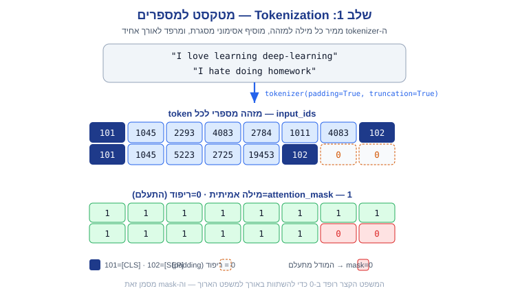
שלב 2 · Model (מספרים → logits)
המודל מקבל את ה-input_ids ומחזיר logits — ציונים גולמיים (לא הסתברויות!), אחד לכל מחלקה. לדוגמה [-4.10, 4.38]: ציון נמוך ל-NEGATIVE, גבוה ל-POSITIVE.
שלב 3 · Prediction (logits → תשובה)
מפעילים softmax על ה-logits כדי לקבל הסתברויות שמסתכמות ל-1, ומשתמשים ב-id2label כדי לתרגם אינדקס לשם מחלקה (0→NEGATIVE, 1→POSITIVE).
softmax מקבלים הסתברויות. [-4.10, 4.38] → softmax → [0.0002, 0.9998].
7. Transfer Learning — הרעיון שמתחתית
למה בכלל מודלים מאומנים מראש עובדים כל-כך טוב? בזכות Transfer Learning: מאמנים מודל על משימה אחת עם דאטה ענק (Task A), ואז מעבירים את הידע (המשקלים) למשימה אחרת עם מעט דאטה (Task B).
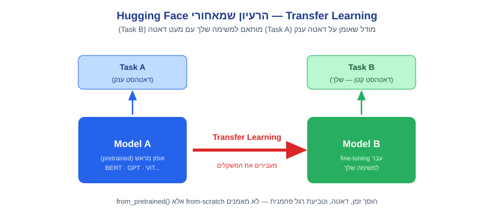
8. Auto classes ומה קורה כשטוענים מודל
ה-Auto classes (כמו AutoModel, AutoTokenizer, AutoConfig) הן "מפעל חכם": נותנים להן שם של checkpoint (מודל ב-Hub), והן מזהות אוטומטית מאיזו משפחה הוא (BERT? GPT? BART?) וטוענות את המחלקה הנכונה — בלי שתצטרכו לדעת מראש.
טעינת מודל היא צירוף של שני דברים: configuration (המבנה — כמה שכבות, גודל וכו') ו-weights (הערכים המאומנים):
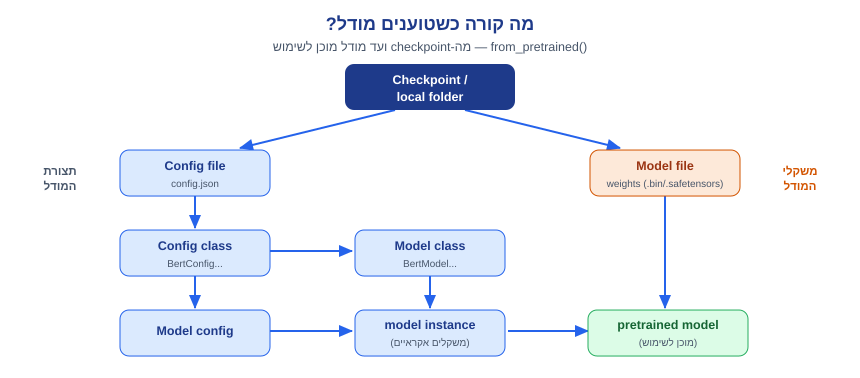
Instantiation — שלושה צעדים:
- קוראים את ה-config file כדי לאתר את ה-config class המתאים.
- ה-config class מגדיר את המודל ובוחר את ה-model class שממנו ייווצר ה-instance.
- טוענים את ה-weights לתוך ה-instance → מתקבל pretrained model מוכן.
BertModel(config)) — מקבלים מבנה נכון אבל משקלים אקראיים (לא מאומן!). רק from_pretrained(...) טוען גם את המשקלים המאומנים.
9. שינוי תצורה · שמירה · Fine-tuning
- אפשר לשנות את התצורה בטעינה (למשל פחות שכבות) — שימושי לניסויים קלים יותר.
save_pretrained(folder)שומר מודל לתיקייה מקומית;from_pretrained(folder)טוען אותו בחזרה — אותו ממשק בדיוק כמו טעינה מה-Hub.- Fine-tuning = לקחת מודל מאומן מראש ולהמשיך לאמן אותו על הדאטה שלכם — הדרך המומלצת (חוסכת זמן, דאטה ו-CO₂).
10. 🎓 מה צריך לדעת למבחן — ריכוז
כל הנקודות הרעיוניות מהפרק במקום אחד — זה מספיק ללימוד למבחן (הקוד עצמו לא נבחן ישירות):
- Hugging Face = "Democratizing AI" — הנגשת מודלים מאומנים מראש. שלושת השירותים: Transformers Library (קוד המודלים, תואם PyTorch/TF/JAX), Hub (אירוח מודלים/datasets/spaces), וספריות נלוות (Datasets/Evaluate/Gradio).
- Green AI: אימון = פליטת CO₂. מצמצמים ע"י pretrained models, fine-tuning (במקום from-scratch), ניסויים קטנים, random search.
- סוגי משימות: HF התחיל מ-NLP (סיווג משפט/מילה, יצירת טקסט, Q&A, תרגום/סיכום) והתרחב לראייה ואודיו.
- ה-Pipeline = 3 שלבים:
pre-processing (tokenizer) → model → post-processing. זרימת הנתונים:raw text → numerical vector → logits → predictions. - Tokenizer: מפיק
input_ids(מזהי מילים, עם [CLS]/[SEP]) +attention_mask(1=מילה, 0=ריפוד).paddingמשווה אורכים,truncationחותך ארוכים. - logits ≠ הסתברויות: המודל מחזיר logits גולמיים;
softmaxהופך אותם להסתברויות, ו-id2labelלשם המחלקה. - Transfer Learning: Task A (דאטה ענק) → מעבירים משקלים → Task B (דאטה קטן). הבסיס לכל השימוש במודלים מאומנים מראש.
- Auto classes (AutoModel/AutoTokenizer/AutoConfig): מזהות אוטומטית את משפחת המודל מה-checkpoint.
- טעינת מודל = config + weights.
BertModel(config)→ מבנה עם משקלים אקראיים;from_pretrained()→ גם המשקלים המאומנים. - save_pretrained / from_pretrained: שמירה וטעינה — אותו ממשק לתיקייה מקומית ול-Hub.
11. מיפוי שקף ← סעיף (לבדיקה מול ה-PDF)
| שקפים ב-PDF | נושא | סעיף |
|---|---|---|
| 1–3 | מבוא · Democratizing AI · שירותי HF | §1 |
| 4–5 | טביעת רגל פחמנית · צמצום | §2 |
| 6–9 | סוגי משימות · הפלטפורמה (Models/Datasets/Spaces) | §3 |
| 10 | ה-Pipeline — 3 שלבים | §4 |
| 11–17 | 8 משימות NLP בקוד (sentiment…translation) | §5 |
| 19–22 | בתוך ה-pipeline: tokenizer · model · prediction | §6 |
| 18 | Transfer learning | §7 |
| 23–27 | AutoModel/AutoConfig · טעינת מודל · config | §8 |
| 28–29 | שמירה · fine-tuning | §9 |
מילון מושגים — חי ומתעדכן
המילון מבוסס על רשימת 45 המושגים שאוחדה במטלה 2 מתוך 11 הגשות סטודנטים, ב-8 קטגוריות. זוהי "מפת העוגן" של המבחן.
לכל מושג יש שם באנגלית, תרגום מקובל לעברית, הסבר קצר ולחיצה לפתיחת הסבר מורחב עם דוגמה / המחשה. כל קטגוריה ניתן לסנן באמצעות הכפתורים, ואפשר לחפש חופשי בכל המושגים.
מתעדכן: נוסיף מושגים בכל הרצאה חדשה — מתוך החומר ולא מבחוץ.
- Fully-Connected: כל נוירון בשכבה k מחובר לכל נוירון בשכבה k+1.
- Feed-Forward: אין מעגלים — המידע זורם רק בכיוון אחד מהקלט לפלט.
- אקטיבציה לא-לינארית: ReLU/tanh/sigmoid בכל שכבה נסתרת — בלעדיהן הרצף הופך לפרספטרון בודד.
- תמונות — מאבד את המבנה הדו-מימדי, יש יותר מדי פרמטרים. הפתרון: CNN.
- רצפים (טקסט, סדרות זמן) — לא מנצל את הסדר. הפתרון: RNN, Transformer.
- נתונים טבלאיים (אין מבנה מרחבי).
- שכבת פלט סופית — אחרי Flatten בקצה CNN, או על vectors קטנים.
- בעיות סיווג / רגרסיה פשוטות.
- CNN — Conv2D: כל נוירון בפלט רואה רק חלון 3×3 בקלט. + Weight Sharing → מינימום פרמטרים.
- RNN: בכל צעד זמן, הנוירון רואה רק את הקלט הנוכחי + ה-state הקודם.
- Sparse Transformer / Linformer: מגבילים את ה-attention לחלקים מסוימים מהרצף.
- פיקסלים קרובים קשורים סמנטית (חלקי אותו אובייקט).
- פיקסלים מרוחקים לרוב לא קשורים ישירות — אז לחבר אותם מבזבז פרמטרים.
- שכבה Sparsely connected חוסכת פי 100-50,000 בפרמטרים (תלוי ב-stride וב-weight sharing).
- מספר שכבות נסתרות.
- גודל כל שכבה (16, 64, 256...).
- אקטיבציות (ReLU בנסתרות, sigmoid/softmax/linear בפלט).
- חיבורים מיוחדים: skip connections (ResNet), branches (Multi-task), recurrent (RNN).
- דנדריטים = קלטי x.
- חוזק חיבור סינפטי = משקל w.
- גוף התא = סכום משוקלל + הטיה.
- אקסון = פלט (אם עובר סף, "יורה").
- אקטיבציה = החלטה אם להעביר אות הלאה.
- Random uniform/normal — מספרים אקראיים קטנים (לדוגמה N(0, 0.01)).
- Xavier / Glorot — סטיית תקן תלויה בגודל השכבה: √(2/(fan_in+fan_out)). מתאים ל-tanh / sigmoid.
- He initialization — סטיית תקן √(2/fan_in). מתאים ל-ReLU. הסטנדרט כיום.
model.add(Dropout(0.3)) אחרי שכבת Dense.
- תמונה 28x28 → וקטור 784 מספרים (אחרי flatten).
- מילה → embedding בגודל 50-300 (Word2Vec, GloVe).
- מסמך → ממוצע של embeddings, או Doc2Vec, או embedding של [CLS] ב-BERT.
- תמונה אחרי CNN → "feature vector" ב-end-of-CNN באורך 512 או 2048.
- 0D — Scalar: מספר בודד.
- 1D — Vector: וקטור (כמו רשימת תכונות).
- 2D — Matrix: טבלה (samples × features) — הנפוץ ביותר ב-NN טבלאי.
- 3D: רצפים — (batch × time × features).
- 4D: תמונות — (batch × height × width × channels).
- 5D: וידאו — (batch × frames × height × width × channels).
.ndim (מספר מימדים), .shape (אורך כל מימד), .dtype (טיפוס — בדרך כלל float32).
הקשר: בפועל Tensor הוא NumPy array בגרסה של TensorFlow / PyTorch. כל פעולה שעושים על מטריצה ב-NumPy מומשת גם על Tensors, ובנוסף יודעת לרוץ על GPU.
- input_dim: גודל המילון.
- output_dim: מימד הוקטור לכל מילה (טיפוסי 50-300).
- פנימית: מטריצה בצורה (10000, 64) = 640,000 פרמטרים שנלמדים.
- קלט: tensor של אינדקסים בצורה (batch, seq_len).
- פלט: tensor של embeddings בצורה (batch, seq_len, dim).
- שכבות נסתרות → ברירת מחדל ReLU.
- פלט סיווג בינארי → sigmoid.
- פלט סיווג רב-מחלקתי → softmax.
- פלט רגרסיה → ללא אקטיבציה (linear).
- חלקה (גזירה בכל מקום).
- טווח (0,1) — ניתן לפרשנות כהסתברות.
- נגזרת אלגנטית: σ′(z) = σ(z)·(1 – σ(z)).
- חישוב מאוד מהיר (max פשוט).
- הנגזרת = 1 לחיוביים — אין vanishing gradient.
- יוצרת sparsity (חצי מהפלטים אפס) — יעיל זיכרון וחישוב.
- Leaky ReLU: max(0.01z, z) — שיפוע קטן לשליליים.
- PReLU: השיפוע השלילי הוא פרמטר שנלמד.
- ELU: e^z – 1 לשליליים — חלקה.
- קלט x נכנס לשכבה הראשונה.
- בכל שכבה: z = Wx + b → a = activation(z).
- הפלט של כל שכבה הוא הקלט לשכבה הבאה.
- בשכבה האחרונה — מקבלים את התחזית ŷ.
- חישוב Loss בין ŷ ל-y.
- חישוב ∂Loss/∂ŷ.
- שכבה אחר שכבה (אחורה!): שימוש בכלל השרשרת לחישוב ∂Loss/∂Wₖ עבור כל W בשכבה.
- עדכון: W ← W – α · ∂Loss/∂W.
- Binary Cross-Entropy — סיווג בינארי (sigmoid).
- Categorical Cross-Entropy — סיווג רב-מחלקתי (softmax + one-hot).
- Sparse Categorical Cross-Entropy — כמו הקודם אך תיוג כ-int.
- MSE (Mean Squared Error) — רגרסיה.
- MAE (Mean Absolute Error) — רגרסיה עמידה לחריגים.
- SGD — Stochastic Gradient Descent בסיסי. דורש כיוון ידני של LR.
- SGD + Momentum — צובר מהירות בכיוונים עקביים.
- RMSprop — מתאים LR לכל פרמטר. הסטנדרט בקורס.
- Adam — שילוב Momentum + RMSprop. הברירת מחדל הפופולרית בעולם.
- AdamW — Adam עם weight decay נכון. שכיח ב-Transformers.
- מעט מדי (underfit): המודל לא הספיק ללמוד את הקשר.
- הרבה מדי (overfit): המודל "שינן" את האימון אך לא מכליל.
- הנכון: עוקבים אחר val_loss; עוצרים כשהוא מתחיל לעלות (Early Stopping).
N / batch_size עדכוני משקלות, כאשר N = מספר דגימות האימון. למשל 60,000 דגימות / batch_size=128 = 469 עדכונים לכל epoch.
ערך טיפוסי: 10-100 epochs, תלוי בגודל המודל ובכמות הנתונים.
- בוחרים batch של N דגימות.
- Forward pass — חישוב חיזויים לכל הדגימות בו זמנית (כפל מטריצות מקבילי).
- חישוב הפסד ממוצע על ה-batch.
- Backward pass — חישוב גרדיאנטים.
- עדכון משקלות אחד על בסיס הגרדיאנט הממוצע של ה-batch כולו.
- יעילות חישוב: GPU מקבל את כל ה-batch במקביל — מהיר פי 100 מ-loop רציף.
- יציבות: ממוצע על batch הוא הערכה פחות רועשת של הגרדיאנט מאשר דגימה בודדת.
- זיכרון: לא צריך לטעון את כל הנתונים בבת אחת — רק batch אחד בכל פעם.
| קריטריון | batch קטן (16-32) | batch גדול (256-512) |
|---|---|---|
| זיכרון GPU | נמוך | גבוה |
| גרדיאנט | רועש | חלק ומדויק |
| יציאה ממינימה לוקליות | טוב יותר (הרעש עוזר) | פחות טוב |
| עדכונים לכל epoch | הרבה | מעט |
| זמן רץ של epoch | איטי יותר | מהיר יותר (ניצול GPU) |
| איכות ההכללה | לעיתים טובה יותר | לעיתים נוטה ל-overfit |
- אם יש GPU חזק — גדל את ה-batch_size למקסימום שהזיכרון מאפשר (512 או 1024).
- אם המודל לא מתכנס — נסה batch_size קטן יותר (32-64).
- אם משנים את batch_size פי X — רצוי לכוון את ה-Learning Rate באותו יחס (Linear Scaling Rule).
- גודל קטן = רעש גבוה יותר, יציאה ממינימה לוקליות, יותר עדכונים ב-epoch.
- גודל גדול = יציבות, ניצול GPU טוב יותר, פחות עדכונים אך כל אחד מדויק.
- α גדול מדי: Loss מתפזר או "מנתר" סביב המינימום.
- α קטן מדי: אימון איטי, מסכן בהיתקעות במינימום מקומי.
- α נכון: Loss יורד בעקביות.
- Step decay — חלוקה ב-2 כל 10 epochs.
- Exponential decay — α(t) = α₀ · γᵗ.
- Cosine annealing — נע בקצב גל קוסינוס.
- Warmup + decay — מתחיל קטן, עולה, ואז יורד (סטנדרט ב-Transformers).
- ReduceLROnPlateau — Keras callback שמקטין α כש-validation לא משתפר.
- אחרי כל epoch — מודדים val_loss.
- שומרים גרסה הטובה ביותר.
- אם N epochs ברצף ללא שיפור (patience) — עוצרים ומחזירים את הגרסה הטובה.
- Clustering — חלוקה לקבוצות (K-Means, DBSCAN).
- Dimensionality Reduction — צמצום מימדים (PCA, t-SNE, UMAP, autoencoders).
- Association Rules — מציאת קשרים (Apriori).
- Binary — שתי מחלקות (sigmoid + binary_CE).
- Multi-class single-label — N מחלקות, תיוג יחיד (softmax + categorical_CE).
- Multi-label — N מחלקות, מספר תיוגים (sigmoid לכל אחת + binary_CE על כל מימד).
- K-Means — מחלק ל-K קבוצות שכל אחת סביב מרכז (centroid).
- DBSCAN — מבוסס צפיפות, לא דורש לקבוע K.
- Hierarchical — בונה עץ של קבוצות.
- Underfit: train_loss + val_loss שניהם גבוהים.
- Just right: שניהם נמוכים וקרובים.
- Overfit: train_loss נמוך, val_loss גבוה ונפתח פער.
- מעט נתונים (פחות מ-1K-10K) — Holdout רגיל לא יציב.
- חוסר וודאות בפיצול — רוצים הערכה ממוצעת.
- Skip-gram — מנסה לחזות מילים קרובות בהינתן מילה.
- CBOW — מנסה לחזות מילה בהינתן מילים קרובות.
- Classification — מהי התמונה? (חתול / כלב / מכונית).
- Object Detection — איפה ומה בתמונה? (YOLO, Faster R-CNN).
- Segmentation — תיוג כל פיקסל.
- Generation — יצירת תמונות חדשות (GANs, Diffusion).
- קטן (3x3) — מעט פרמטרים, לוכד דפוסים מקומיים מאוד. רוב CNNים מודרניים משתמשים ב-3x3 בלבד.
- גדול (5x5, 7x7) — לוכד דפוסים גדולים יותר, אבל הרבה יותר פרמטרים.
- שתי שכבות 3x3 = שדה ראייה אקוויוולנטי ל-5x5, אבל פחות פרמטרים ויותר עומק.
- בוחרים פיקסל בתמונה.
- לוקחים חלון בגודל ה-Kernel (3x3 או 5x5) סביבו.
- מכפילים איבר-איבר עם ה-Kernel.
- סוכמים את כל המכפלות → ערך אחד.
- זה הופך לפיקסל המרכזי ב-feature map.
- חוזרים לכל פיקסל בתמונה.
- Sobel-x: [[-1,0,1],[-2,0,2],[-1,0,1]] — קצוות אנכיים.
- Sobel-y: [[-1,-2,-1],[0,0,0],[1,2,1]] — קצוות אופקיים.
- Sharpen: [[0,-1,0],[-1,5,-1],[0,-1,0]] — חידוד.
- Box Blur: מטריצה של 1/9 — טשטוש.
Conv2D(32, (3,3)) מגדירה 32 פילטרים בגודל 3×3.
- Stride=1: מזיזים פיקסל אחד בכל פעם — feature map בגודל מלא.
- Stride=2: מדלגים על פיקסל בכל פעם — feature map בחצי הגודל.
- Stride גדול: פחות חישוב, פחות פרמטרים, אבל פחות מידע.
Conv2D(32, (3,3), strides=2)
חלופה: במקום stride גדול, נפוץ להשתמש ב-stride=1 + Pooling layer (יותר גמיש).
- Crop / Valid Padding (
padding='valid') — אין ריפוד, פיקסלי הקצה לא נכנסים. תמונת פלט קטנה יותר. - Same Padding (
padding='same') — מוסיפים אפסים מסביב כך שתמונת הפלט באותו גודל. הסטנדרט המודרני. - Extension — מעתיקים את ערכי הקצה החוצה במקום אפסים. פחות נפוץ.
- filters: כמה פילטרים → כמה ערוצים בפלט.
- kernel_size: 3 או (3,3) — גודל הפילטר.
- strides: 1 (סטנדרט) או 2 להפחתת מימדים.
- padding: 'same' או 'valid'.
- activation: בדרך כלל 'relu'.
kernel_h × kernel_w × input_channels + 1 (+1 ל-bias). למשל פילטר 3×3 על RGB = 28 פרמטרים. ל-32 פילטרים = 896 פרמטרים בלבד.
- Max Pooling: לוקח את הערך המקסימלי בחלון. הסטנדרט במודרני — שומר על הסיגנל החזק ביותר.
- Average Pooling: לוקח את הממוצע. פחות נפוץ — "מרכך" מידע.
layers.MaxPooling2D(pool_size=(2,2))
- Weight sharing: אותו פילטר מופעל על כל אזור בתמונה. אם הוא לומד לזהות "אוזן" בפינה אחת — הוא יזהה גם בפינה השנייה.
- Max Pooling: בוחר את הערך המקסימלי בחלון. אם התבנית "זזה" קצת בתוך החלון — עדיין נבחרת.
- Rotation: סיבוב אקראי ±15-30°.
- Translation: הזזה לימין/שמאל.
- Horizontal Flip: היפוך מראה (טוב לחיות; לא טוב לאותיות).
- Zoom / Crop: חיתוך אקראי + הגדלה.
- Color Jitter: שינוי בהירות, ניגודיות, רוויה.
- CutOut, MixUp, CutMix: טכניקות מתקדמות להחלפת חלקי תמונה.
- Rotation/Scale Invariance: מה ש-CNN לא יודע אוטומטית — ללמד ע"י דוגמאות.
- מניעת Overfit: המודל רואה תמונות "חדשות" בכל epoch.
- שימוש ראשון ב-ReLU במקום sigmoid — הרבה יותר מהיר ופחות vanishing gradients.
- שימוש ראשון ב-Dropout — הפחתת overfit.
- שימוש ראשון ב-2 GPUs במקביל לאימון.
- פילטרים גדולים יחסית: 11×11 ו-5×5.
- מסלול ישיר לגרדיאנט: בזמן Backprop הגרדיאנט יכול לעבור דרך ה-+ ישירות לאחור — לא נחלש דרך עשרות שכבות.
- ברירת מחדל היא Identity: אם השכבה לא צריכה לעשות כלום, היא יכולה ללמוד F(x)≈0 ופשוט להעביר את x. הפיצוי קל יותר ללמידה.
- השוואת feature vectors של תמונות (face recognition).
- השוואת embeddings של מילים / מסמכים (NLP).
- חיפוש סמנטי, המלצות.
- Feature Extraction: מקפיאים את ה-conv_base ומאמנים רק classifier חדש מעליו.
- Fine-Tuning: מפשירים את השכבות העליונות של conv_base ומאמנים אותן יחד עם ה-classifier ב-lr נמוך מאוד.
- Fast — בלי augmentation: מריצים את conv_base פעם אחת על כל ה-dataset, שומרים features ב-RAM, מאמנים classifier קטן עליהם. ~2 שניות לאפוק, אבל אי-אפשר לשלב augmentation.
- עם augmentation: conv_base הוא חלק מהרשת — רץ בכל epoch על תמונות שעוברות augmentation. ~360 שניות לאפוק, אבל יותר יציב.
- בניית custom head על conv_base מאומן.
- קפיאת ה-conv_base (
trainable=False). - אימון ה-head בלבד (Feature Extraction).
- הפשרה (
unfreeze) של N השכבות העליונות (לדוגמה Block 5 ב-VGG16). - אימון משותף של השכבות שהופשרו + ה-head ב-
lr=1e-5.
keras.applications.vgg16.VGG16(...).conv_base = החלק הקונבולוציוני של המודל המאומן, ללא ה-classifier הסופי.
בקוד:
len(conv_base.trainable_weights) — צריך להיות 0 אחרי קפיאה.
⚠ הטעות הנפוצה ביותר: לשנות trainable אחרי model.compile(). ה-compile מקבע את רשימת המשתנים שניתנים לאופטימיזציה. החוק: trainable → compile.
keras.applications. VGG16 דורש BGR ולא RGB, וחיסור ממוצע ImageNet — לא רק חלוקה ב-255.keras.applications אומנה עם pre-processing ספציפי. שימוש לא נכון פוגע משמעותית באיכות ה-features.
דוגמה:
preprocess_input או ב-Rescaling(1./255), אבל לא בשניהם. עבור VGG/ResNet/Inception תמיד תשתמשו ב-preprocess_input.
היכן ברשת: ראשית — מיד אחרי הקלט, לפני conv_base.
layers.Rescaling(1./255)) שמנרמלת ערכי פיקסל מ-[0,255] ל-[0,1]. שימושית במיוחד כש-CNN מאומן מאפס (לא transfer learning).[0,1]: כשערכי הקלט גדולים (255) ההפעלה הראשונה של הרשת מקבלת מספרים גדולים → gradient נפיץ → אימון לא יציב. נרמול מסדר את העניין.
שתי דרכים אקוויולנטיות:
- כשכבה ברשת:
layers.Rescaling(1./255)(x)— פעיל גם ב-training וגם ב-inference. זו הדרך המומלצת. - במהלך טעינת dataset:
dataset.map(lambda x, y: (x/255, y))— עובד, אבל פחות נקי.
preprocess_input של מודל מאומן (שדורש BGR/mean subtraction, לא [0,1]).
tf.data.Dataset מוכן לאימון.train/cat/ ו-train/dog/ → cat=0, dog=1 (סדר אלפביתי).
פלט: tf.data.Dataset שמחזיר (images_batch, labels_batch) עם shapes (32, 180, 180, 3) ו-(32,).
היתרון על pandas/numpy: טעינה lazy — לא מחזיק את כל ה-dataset ב-RAM. עובד עם dataset של מיליוני תמונות.
model.fit() במשימות עם dataset גדול..batch(n)— קבוצת n אובייקטים → batch אחד..shuffle(buffer)— ערבוב סדר. חשוב לפני אימון!.map(fn)— הפעלת פונקציה על כל element (לדוגמה preprocessing)..prefetch(n)— טעינה מקבילית של batches הבאים (האצה)..cache()— שמירת ה-dataset בזיכרון אחרי טעינה ראשונה.
for loop רגיל (זה iterator) או להעביר ל-model.fit().
בדיקה:
weights="imagenet"— טעינת משקלות מאומנים. אופציות נוספות:None(אתחול אקראי), פתח קובץ.include_top=False— בלי ה-FC הסופי (1000 קטגוריות). חובה ל-transfer learning.input_shape=(180, 180, 3)— נדרש כש-include_top=False.
keras.applications.<model>.preprocess_input— pre-processing ייעודי לאותה רשת.keras.applications.<model>.decode_predictions— לפענוח פלט של מודל עםinclude_top=True.
- "Pythonic" יותר — נכתב כאילו זה Python רגיל.
- Dynamic computation graphs — קל לדיבוג.
- פופולרי במאמרים אקדמיים והרבה LLMs (GPT, LLaMA) נכתבו ב-PyTorch.
- חינמי (גרסה Pro תמורת תשלום).
- GPU בלי התקנה.
- שיתוף קל (Google Drive integration).
- מותקן מראש כל מה שצריך — TF, Keras, PyTorch, NumPy, Pandas.
(batch_size, timesteps, input_features). timesteps=None מאפשר רצפים באורך משתנה.
החיסרון: מסתכל על כל ההיסטוריה → גרדיאנטים נעלמים ברצפים ארוכים (כמו feedforward עמוק). לכן עוברים ל-LSTM/GRU.
recurrent_dropout בתוך השכבה.
דוגמה: layers.LSTM(32, recurrent_dropout=0.25) הוריד את ה-Test MAE ל-2.45 עם פחות overfitting.
MaxPooling1D אפילו הורס אותו. Test MAE 3.14 (הכי גרוע בהרצאה).
sequence_length— אורך כל רצף (מספר צעדי זמן).sampling_rate— דילול: כל כמה דגימות לקחת (6 = פעם בשעה).targets— וקטור ערכי המטרה (יכול להיות מוסט ב-delay).start_index/end_index— לפיצול כרונולוגי train/val/test.shuffle,batch_size— ערבוב הדגימות וגודל ה-batch.
TextVectorization עושה זאת אוטומטית.
output_mode="tf_idf".
king − man + woman ≈ queen. כיוונים במרחב = יחסים.
איך משיגים: ללמוד מאפס (שכבת Embedding ב-backprop) או pretrained ([[word2vec]], GloVe). מרחק נמדד ב-cosine. קשור ל-[[embedding]].
MultiHeadAttention.
PositionalEmbedding: שכבת Embedding שלומדת את המיקומים, ומחברים: token-embedding + position-embedding.
layers.Embedding(..., mask_zero=True) מייצר mask אוטומטית; שכבות ה-RNN מדלגות על המקומות המסומנים. אינדקס 0 שמור ל-mask.
הקשר ל-Transformer: גם שם משתמשים ב-mask (ב-decoder, masked self-attention — אין הצצה לעתיד).
max_tokens— גודל ה-vocabulary (למשל 20000).output_mode—"int"(אינדקסים, ל-sequence),"multi_hot"(ל-BoW),"count","tf_idf".ngrams— לייצר n-grams (למשל 2).output_sequence_length— אורך קבוע (ריפוד/קיצוץ).
.adapt(dataset) כדי ללמוד את ה-vocabulary מהנתונים. עובד על tf.string.
from_pretrained().
הקשר: זו הספרייה שמאחורי pipeline() וה-Auto classes.
"bert-base-cased") שמשמש לטעינה.
pipe = pipeline("<task>"); pipe(input). אם לא מציינים מודל — HF בוחר ברירת מחדל.
משימות לדוגמה: sentiment-analysis, zero-shot-classification, text-generation, fill-mask, ner, question-answering, summarization, translation.
שלושת השלבים שמאחור: tokenizer → model (logits) → post-processing (softmax + label).
AutoModel.from_pretrained("gpt2") מחזיר GPT2Model, ו-"bert-base-cased" מחזיר BertModel — בלי שתצטרכו לדעת מראש.
וריאנטים: AutoModelForSequenceClassification (לסיווג), AutoTokenizer (טוקניזציה), AutoConfig (תצורה בלבד).
למה: קוד גנרי שעובד עם כל מודל.
"distilbert-base-uncased-finetuned-sst-2-english".
מורכב משניים: config file (המבנה) + model file (weights).
שימוש: from_pretrained(checkpoint) — טוען גם תצורה וגם משקלים מאומנים. אם בונים מ-config בלבד → משקלים אקראיים.
[-4.10, 4.38] — ציון לכל מחלקה.
להסתברויות: מפעילים softmax → [0.0002, 0.9998] (מסתכם ל-1).
שאלה קלאסית: "מה המודל מחזיר?" — logits. "איך הופכים לתחזית?" — softmax + id2label.
classifier(text, candidate_labels=["education","sports","politics"]) מחזיר ציון לכל תווית.
למה מגניב: אין צורך לאמן מודל ייעודי לכל קבוצת תוויות חדשה.
מודל ברירת מחדל: bart-large-mnli (מבוסס natural language inference).
grouped_entities=True מאחד מילים של אותה ישות ("Ariel University" כיחידה אחת).
<mask>) במשפט — מטרת האימון של מודלים כמו BERT (Masked Language Model).top_k — כמה הצעות להחזיר.
from codecarbon import EmissionsTracker.
איך להשתמש במילון בלמידה
- בכל שאלת חזרה — בדקו אם יש מושג שלא זכור והקפידו להבין אותו לעומק.
- במהלך קריאת הרצאה — חפשו במילון את כל המושגים שעולים בה.
- שבוע לפני המבחן — עברו על המילון לפי קטגוריות (חברו אותם לקבוצות הגיוניות).
- נסו "להקריא" כל מושג בקול: שם → הגדרה במשפט → מתי משתמשים → דוגמה.
- אם אתם לא יכולים להסביר אותו לעצמכם — לא מבינים אותו עדיין.